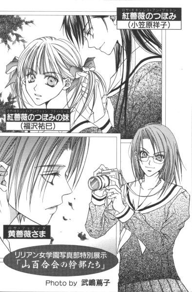

| [今野緒雪] マリア様がみてる02 | |
| 今野緒雪 | |
| (2015) | |
|
マリア様がみてる
黄薔薇革命
今野緒雪
|
もくじ
ベスト・スール
返されたロザリオ
思わぬ余波
いったい、どうなってるの？
戦う乙女たち
終わりよければ
あとがき


マリア様がみてる 黄薔薇革命
「ごきげんよう」
「ごきげんよう」
さわやかな朝の挨拶が、澄みきった青空にこだまする。
マリア様のお庭に集う乙女たちが、今日も天使のような無垢な笑顔で、背の高い門をくぐり抜けていく。
汚れを知らない心身を包むのは、深い色の制服。
スカートのプリーツは乱さないように、白いセーラーカラーは翻らせないように、ゆっくりと歩くのがここでのたしなみ。もちろん、遅刻ギリギリで走り去るなどといった、はしたない生徒など存在していようはずもない。
私立リリアン女学園。
明治三十四年創立のこの学園は、もとは華族の令嬢のためにつくられたという、伝統あるカトリック系お嬢さま学校である。
東京都下。武蔵野の面影を未だに残している緑の多いこの地区で、神に見守られ、幼稚舎から大学までの一環教育が受けられる乙女の園。
時代は移り変わり、元号が明治から三回も改まった平成の今日でさえ、十八年通い続ければ温室育ちの純粋培養お嬢さまが箱入りで出荷される、という仕組みが未だ残っている貴重な学園である。
支倉令も島津由乃も、そんなお嬢さま街道を逸れることなくまっすぐ歩み、──今に至る。
ベスト・スール
１
学園祭明け。
振り替え休日となった月曜日を、ひたすら猫のように怠惰に過ごした福沢祐巳を待っていたのは、かねてから待ち望んでいた平凡な日常などではなく、学園祭前から始まったあわただしくもにぎやかな日々の延長だった。
「うわっ、遅れた」
バスを降りて急いで校門をくぐり、登校する生徒の数がまばらであるのをいいことに銀杏並木を早歩きで進む。......いや、小走りか。
スカートの裾が多少乱れてしまったとしても、襟がはためき気味であったとしても、今朝のところは大目に見てもらうしかない。何せ、今日は特別の日なんだから。
「ああ。それにしても、どうして目覚ましのセットを変えるの忘れちゃったんだろう」
日曜日の夜寝る前に行ったトイレの便座の上で一度は「変えておこう」と思いついたのに、自分の部屋に戻る頃にはすっかり忘れてしまっていたのだ。
手を洗った刺激が記憶に蓋をしてしまったのか、はたまたトイレのドアの閉まりが悪くて往生してしまったのがいけなかったのか。いやいや、階段の踊り場で弟と会って立ち話してしまったのが一番の原因かもしれない。
その上振り替え休日は久しぶりに朝寝を決め込もうと、一昨日の夜は目覚ましスイッチをオフにして布団にもぐったものだから、今朝起きるまで目覚まし時計のセット時間のことなんて思い出すこともなかった。
何たる不覚。何たる失態。こんな大切な日に遅刻なんて。
二股分かれ道のマリア像が見えてきた。こんなに急いでいるのに、祐巳はやはりその前で立ち止まって両手を合わせた。習慣というものは、そんなものだ。
──マリア様、今日も一日私を見守っていてください。私が間違った行いをせずに過ごせますように。
目を開けて再び走り、......もとい歩きはじめた時、
「お待ちなさい」
背後から呼び止める声がして、思わず祐巳の背筋はピンと伸びた。一瞬、この学園の中で祐巳が一番恐ろしく感じている彼の人であろうかとも思ったが、よくよく考えれば声がまるで違っている。
「『祐巳、何をそんなに急いでいるの？』」
声の主を確認しようとゆっくり振り返ってみれば、最新式の小型カメラのレンズと目があった。
「ごきげんよう。どう？ 祥子さまだと思った？」
言葉とともに、カシャッという音がかぶって聞こえた。写真部のエース、武嶋蔦子さんだった。
蔦子さんときたら、シャッターチャンスを狙っている時はおしゃべりしながらもカメラを放さないものだから、まるでサイボーグ人間と対面しているみたいな気分だった。
「ごきげんよう。......悪いけれどそういう冗談につき合っている余裕、今ないの」
祐巳はもう一枚と言うリクエストを断ってクラスメイトに背を向けると、また黙々と歩き出した。
「あら、余裕ないってどういうこと？」
カメラをポケットにしまって、蔦子さんは追いかけてきた。被写体なら、もっといいのがこの後いっぱい登校してくるっていうのに。
「なるほど。祐巳さんは今、なぜだか知らないけれどものすごく焦っている。それは間違いなく祥子さまに関係あり、と見たけどいかが？」
縁なし眼鏡が、キラリと光った。こういう時の蔦子さんって、新聞部の先輩たちと同じ匂いがする。結局、知りたがりやに違いないわけだ。
「まあね。間違いではないけれど」
適当にはぐらかせる相手ではないので、仕方なく返事をしながら祐巳はひたすら校舎に向かって歩いた。こんなところで時間をくっている場合じゃなかった。
「いつもより早いご登校。なのに遅刻ぎりぎりみたいな血相」
蔦子さんは半歩前に出て、祐巳の顔を振り返るような格好で器用に歩いていく。フットワークが軽い。これも、盗撮もどきをしている彼女の撮影スタイルの成果だろうか。
それはさておき、確かに祐巳は蔦子さんのご指摘通り、始業に遅刻しそうで焦っているのではなかった。だけれど、どうせならば通知票の出欠欄に「遅刻１」と記される方がよほど気が楽だったように思える。
「わかった。祐巳さん、祥子さまと待ち合わせ？早朝、お聖堂の裏あたりで人目を忍んでランデブー？」
「ランデブーって？」
「フランス語。直訳すると、『出会い』かな？ロマンチストの蔦子さんとしては、是非とも『忍び逢い』と訳したいところだけれど。そういえば、『ランデブー』って言葉も、近頃宇宙っぽい話でしか聞かなくなったわねぇ」
聞かなくなったわねぇ、って。しみじみ言ってくれちゃう蔦子さんって、いったいいつの時代の人なんだか。蔦子さんと話していると、ときどき同じ十六歳とは思えなくなる時がある。
まあ、高校生の枠にはめ込み不可能な人間なんて、祐巳の周りには彼女の他にもまだうじゃうじゃいるんだけれど。
「忍び逢いなんて、そんな甘いものじゃないわよ」
素っ気なく答えると、蔦子さんは眼鏡の位置を少しずらしてから唇の端を上げて祐巳の顔を探るように見た。
「あらま。じゃ、その胸に誇らしげに輝いているロザリオは何なの？」
「うっ」
目ざとい。それは確かに一昨日の夜、小笠原祥子さまからもらったロザリオで。ロザリオをもらったということは、全校生徒の憧れの的である祥子さまの妹となったわけで──。
思い出しただけでも赤面する。その場の勢いっていうか、祥子さまの真剣さに押されたというか、とにかく清水の舞台から飛び降りるくらいの気持ちでロザリオを受け取ってしまったけれど。こうやって午前中のさわやかな光の中で考えてみると、その先にはかなりすごい現実が待っていることに気づかされる。
清水の舞台の下にはやっぱり急な崖があるわけで、すぐ下でフカフカの羽根布団を広げて天使様がスタンバイしているわけでは断じてない。
現実は厳しい。飛び方を間違えれば足の一本も骨折するかもしれないし、下手すれば首の骨折って即死だ。
「しかもこれ見よがし。祐巳さん、普通は見えないように制服の下に隠しておくものなのよ」
「これは、普段身につけなれないものだから、制服を着た後になって気がついて仕方なく。......って、のんびり語っている場合じゃなかったんだった！」
祐巳はハッと気づいて駆けだした。いつしか話に熱中して、お母さんたちの井戸端会議みたいに立ち話してしまっていた。ただでさえ遅くなっているのに、これじゃ完全に遅刻だ。
「祐巳さん、あとでゆっくり聞くからね」
蔦子さんはもう追ってこなかった。その代わり、背後から数回シャッターを切る音が聞こえた。全力疾走で走る女子高生の後ろ姿なんか撮って、どこが楽しいんだか──。
とにかくこのところ、身近に変わり者が増えてきた気がする祐巳であった。
高等部校舎の中庭の隅に建っている生徒会本部、薔薇の館に着いたのは七時五十分といったところだった。
「遅くなりましたっ」
学園祭までは『山百合版シンデレラ』の小道具置場と化していた、一階の多目的スペースの扉を開けると、錚々たるメンバーの華やかな顔が一斉に振り返った。
（ひえ......）
紅薔薇さま、黄薔薇さま、 黄薔薇のつぼみの支倉令さま、 白薔薇のつぼみの藤堂志摩子さん、そして──。
「渋滞にでも巻き込まれて？」
低血圧で朝に弱いはずの祥子さまだったが、しゃっきりした目をこちらに向けると、いつも通り凛とした声で質問された。
「い、いいえ」
「じゃあ、どうしたの？」
トレードマークのみどりの黒髪が、肩から外れて胸もとにサラサラと流れた。多少眉をつり上げ冷ややかにこちらを見据える表情がまた、鳥肌がたつほどお美しい。──なんて見とれている場合じゃない。言葉こそやわらかかったが、祥子さまのそれは「質問」なんていう生やさしいものではなく、どう贔屓目に見ても正しく「詰問」と呼ぶにふさわしいものだった。
「ちょっと、祥子」
令さまが肩のあたりを小突いてたしなめたけれど、祥子さまは「黙っていてちょうだい」とピシャリとシャットアウトしてから再び祐巳に向き直った。
「遅れた理由があるなら、はっきりおっしゃい」
「......」
そうは言われても、祥子さまにそう責められて、正直に「寝過ごしました」なんて言い出せやしない。
「今、いったい何時だと思っているの」
「七時五十二分です......けど」
馬鹿正直に腕時計を見て答えると、祥子さまの後ろで紅薔薇さまがこらえきれず「ぷっ」と吹き出した。
学園祭明けの火曜日は、簡単な片づけと反省会があるということで、祐巳たちは朝八時までに薔薇の館に集合することになっていた。現時点で到着しているわけだから正確には遅刻ではないのだが、祐巳は祥子さまから言い含められていたのだ。一年生なのだから、少なくとも集合の十五分前には来て先輩を迎えるように、と。
「三年生のお姉さまより遅いなんて、いったいどういうこと？」
知らなかった。祥子さまったら、こういうところ体育会系のノリだ──。そんなことをぼんやりと思っていた時。
「祥子も偉くなったものねぇ」
背後から突如声がした。振り返る間もなく祐巳は後方から首を羽交い締めにされたものだから、無様に「うげっ」とのけ反ってしまった。
「ごきげんよう、皆さん」
「白薔薇さま！」
これまた個性の塊のような、御仁の登場だった。リリアン女学園高等部生徒会「山百合会」の幹部、紅・白・黄の三色薔薇の一人である白薔薇さまは、あろうことか祐巳の首に腕を回したまま手も当てずに大あくびをした。黙ってすましていれば、マネキンみたいに整った顔をしているのに、もったいない。
「悪い、悪い。すっかり忘れていつも通りに来ちゃった。八時の集合だから、ぎりぎりセーフよね、祥子？」
白薔薇さまは人質を盾にする強盗犯もしくは人形を抱く腹話術師のように、祐巳をずるずると引きずって祥子さまの前まで進み出た。
「え、ええ......でも祐巳は──」
「もう、それくらいでいいじゃないの」
今度は黄薔薇さまが口を挟んだ。
「要は八時から反省会を始められればいいわけだから」
「でもっ！ 私は、祐巳にもう少し自覚を」
「一昨日先輩を二十五分待たせた人間が言っても、あまり説得力ないわよ」
紅薔薇さまは呵々と笑ったが、学園祭の劇の集合時間に二十五分遅れた片割れである祐巳はますます縮こまるしかなかった。思わぬところを攻められた祥子さまは、顔を真っ赤にして抗議した。
「お姉さま方、祐巳に甘すぎます」
けれど、そこはこの祥子さますら手の平の上で転がせちゃうほどのお方。紅薔薇さまは、胸をはって腕組みして答えた。
「当たり前じゃない。私たち三年生にとっては、二年生が子供で一年生は孫みたいなものなんだから。躾は基本的に親の役割。お祖母ちゃんは無責任に可愛がるものだって相場じゃないの」
お祖母ちゃんと聞いて、祐巳は同じく一年の志摩子さんと顔を見合わせて目を瞬かせた。そうか、薔薇さまたちはお祖母ちゃんだったのか。
「祥子だって一年の時には、卒業なさった私のお姉さまにずいぶんと甘やかされていたじゃない？」
「そ、それは......」
祥子さまは言い返す言葉を探せないようだった。これは、かなり一年の時に「お祖母ちゃん」に可愛がられたに違いない。
「世の中そんな風にできているのよ、あきらめなさいね」
「──」
祥子さまの完敗。だからといって、誰の勝ちでもないんだけれど。
薔薇さまたちって、基本的にサドなんじゃないかと思う。それとも祥子さまがマゾなのか。いつでも、いつの間にかこういった形で祥子さまが言い負かされるのだ。全校生徒の憧れの的で、正真正銘名家のお姫さまをやり込める快感はいかばかりかと察するにあまりあるが、薔薇さまたちが注ぐ愛情の量もまた並大抵ではないことを祐巳は知っている。
しかし、薔薇さまたちの中にいる時の祥子さまって、どうしてこうもいつもと印象が違うんだろう。普段の祥子さまは、しとやかで非の打ち所が一つもない美少女そのものなのに。
「あれ、祐巳ちゃん。これ、なーに？」
やっと背後霊ごっこをやめてくれた白薔薇さま、今度はセクハラ親父と化してセーラー服の襟刳りに手を滑り込ませてきた。
「きゃん」
冷たい手が鎖骨に当たって、思わず変な声が飛び出した。白薔薇さまは「失礼」なんて口先だけで言いながら、せっかくしまっておいた祐巳のロザリオをずるずると引き出した。
「ははん、祥子が張り切っているのはこれのせいか」
「あら、まあ」
「やる時はやるのね」
薔薇さまたちは、口々に言いながら祐巳の首にぶら下がったロザリオと祥子さまを代わりばんこにしげしげと眺めた。これじゃ、まるで動物園のパンダだ。
「反省会する時間がなくなりましてよ、お姉さま方」
こういった注目のされ方はお気に召さないようで、祥子さまは長い髪をかき上げながら不快そうに言った。見ようによっては照れ隠しに見えなくもないんだけれど、そんなわけないか。
「まあ、そう言わずに少しはサービスしなさいよ。いったいいつ、どこで儀式をしたの？」
「サ、サービスですって？」
とうとう祥子さま、眉間あたりがぴくぴくと引きつってきた。癇にさわるって知っていてわざわざ言うんだから、薔薇さまたちって食わせ者だ。
「どうして私が、お姉さまたちにサービスしなければならないのです」
「あ、そ。だったら祐巳ちゃんに聞いちゃお。祐巳ちゃんは素直だから教えてくれるわよね」
「ええっと──」
困ったぞ。祥子さまは「言ったら許さない」って顔でにらんでいるし、かといってリリアン女学園高等部三強を敵に回して生きていくのは厳しすぎるし。
どうしよう──、祐巳は生唾をごっくんと呑み込んだ。と突然、その刺激で胃のあたりがぴくりと小さく動いた気がした。
（こ、これは......）
まずい。小さなぴくりが呼び水になって、ぴくぴくっと第二陣がやってきた。もはや疑いようもない。ごく近い未来に、とんでもないことが必ず起こる。
（どうしよう）
しかし人生には努力で避けられることと、自分の力ではどうにもならないことがあって。今祐巳に起こりかけていることは、間違いなく後者であるから。どうしたら少しでも見苦しさが減少するかを考えるべきだった。
（一、事が起きる前に予告をして素直に恥をかく。二、大きな声をあげてその場をごまかす。三、今すぐ逃げる）
祐巳は三番を選んだ。どうせ恥をかくなら、「それ」自体を聞かれるのだけはごめんだ。
「あっ。こら、待て」
しかし走り出したものの、ドアにたどり着く前に白薔薇さまに取り押さえられ、円の中心に引きずり出されてしまった。
「何、そんなに言いたくないの？ 言えないくらいすてきな思い出なの？」
祐巳はぶるぶると首を横に振った。違う。姉妹の契りをどうやってしたかを隠したくて、逃げ出したわけではない。
（ああ、でも......もう）
こんなことなら朝ご飯を食べてくるんだった──。後悔と同時に、ぎょろぎょろぎょ───というカエルの鳴き声みたいな音が、祐巳の身体の中心部からわき上がってきた。それも、信じられないことにたっぷり十秒は鳴り終わらない十六年間の人生における最長記録で、とうとう部屋中がシーンと静まり返っても未練たらしくきゅるきゅると響きわたっていた。

（ああ、もう何もかもおしまいだわ......）
よりにもよって、こんな美しい人たちにカエルの独唱をお聞かせしてしまうなんて。穴があったら、......ううん、この床板はがして十メートルくらい穴を掘って、十年くらい埋まってしまいたい。
「......くっ」
沈黙を破って吹き出したのは、白薔薇さまだった。彼女はあろうことか、「ふふふ」でも「くすくす」でもなく「あっはっは」と大口開けてのけ反った。それにつられて、──いや、正確にはたぶんつられたわけではなく、堪えていたものが噴き出すきっかけになっただけなのであろうが──祐巳と祥子さまを除く部屋にいたすべての人が、笑いの渦に巻き込まれてしまった。
「いいっ。祐巳ちゃん、最高！」
「祥子お姉さまの危機をどう切り抜けるかと思いきや、いや絶妙のタイミングだったわ」
「祐巳ちゃんの天然ボケに敬意を表して、この場は勘弁してあげましょう」
いったい何がどう転んだのかわからないけれど、薔薇さまたちは至極満足そうにほほえんだ。簡単な片づけは本当に簡単なものだったらしく、一番乗りだった令さまと志摩子さんによってすでに済まされてしまったとかで、皆笑いの余韻を残しつつ古い階段を上っていく。反省会をするために、名目会議室であるが雰囲気的にはサロンという二階の一室に場所を移動するのだ。一室といっても、二階にはその部屋しかないんだけれど。
二階に一室、一階に一室。薔薇の館は、館と呼ぶには少々小振りなものだった。だが、小さいけれど小屋なんて言い切っては失礼なほど、素敵な建物だ。中庭の隅にひっそりと建つたぶん校舎よりもかなり古い木造建築で、三角屋根やステンドグラス、外壁を這うアイビー、木枠の出窓といった、セピア色の写真から抜け出してきたような外観をしている。中に入ってみると、反り返った床板やぎしぎし音の出る階段なんか少々くたびれてはいるけれど、代々生徒会の本部として大切に使われてきただけあって、清潔でやわらかい空気に満ちた館だった。
狭く急勾配の階段を、美しい先輩たちが小さなきしみ音をたてながら上っていく。こういう場合先に行って部屋の準備をするべきだったのかもしれないが、階段が狭いので追い抜くこともかなわず、仕方なく最後尾につくことにした。同じクラスのよしみということで、これから山百合会のことなんか志摩子さんにいろいろ教えてもらわなくちゃ、と祐巳は思う。
今日から、いや正確には一昨日の夜ロザリオを受け取った時点から、自分は祥子さまの妹になったのだから。祥子さまといえば、リリアン女学園高等部生徒会である山百合会の会長である三薔薇の一人、紅薔薇さまの妹で、次の紅薔薇さまとなる方。もちろんいずれ自分が紅薔薇さまになるなんて考えられない祐巳だったが、 紅薔薇のつぼみである祥子さまの妹である以上、薔薇の館に赴き山百合会幹部のお手伝いをするのは当然なのだった。というより、少しでも祥子さまの側にいて役に立つことがあればという一心で妹になったと言っていい。
だから、今日は特別の日だった。祥子さまの妹としての、最初の一日だった。
なのに。
（早くも幻滅させてしまったかな）
一段上がるごとに冷ややかに揺れるすぐ目の前の真っ直ぐな黒髪を眺めながら、祐巳はちょっとブルーな気分になった。みっともないことが何より嫌いな、プライドの塊のような祥子さまは、やっとできた妹の行為をどのように思っただろう。ぼろ出っぱなしの出会いだったから、多大な期待はしていなかっただろうけれど、今日のはちょっとひどすぎたかもしれない。
（まさかロザリオを返せなんて言われないよね）
ぎしぎし。重い足取りで階段を上りながら、「わからないぞ」と祐巳は思った。性格の計り知れない祥子さまだけに、まったく先が読めなかった。
（カエルの独唱で大爆笑だもんなぁ......）
十数段の階段が、今日は果てしなく長く感じられる。せめて何か言ってくれたらいいのに。無言でいられると、嫌な方向の考えばかりが頭の中に浮かんできた。姉妹の関係を白紙に戻されるくらいなら、ここで大きな雷を落とされた方がましだ。──と思った時、階段を上りきった祥子さまがくるりと振り返って祐巳を見下ろした。
目つきには依然として険がある。けれどその一段高い位置は、祥子さまの華やかな美しさをますます強調するためにふさわしかった。
そんな場合ではないのに、祐巳はその姿に素直に見とれてしまった。祥子さまがきれいだから彼女の妹になったわけではないけれど、やっぱり憧れたきっかけといえば遠目からでもはっきりわかる華やかな容姿であることには間違いなかった。
「手の平を上にして、手をお出しなさい」
命じられるまま両手を前に出した。手相を見るわけではないから、片手ではないだろうと勝手に判断してから、はたと自分の格好を思い浮かべてみる。
（......これって）
何かに似ている。ああ、そうか。家庭教師に罰を与えられていた少年の図、そのままだ。確か小説の挿し絵で、振り落とされた指し棒を両手で受けなければならないといった痛そうな体罰だったことを、美しい少年の顔とともに覚えている。物語の内容は、すっかり忘れてしまったけれど。
（まさか祥子さま、それを私にやる......？）
想像して、ぶっ飛びそうになった。雷を落としてくれたほうが──なんて考えていたくせに、いざとなると「やっぱり痛いのはちょっとな」とか思ってしまう。
でも、祐巳はぎゅっと目を閉じた。祥子さまの前を歩いていた令さまは、すでにビスケットのような扉の向こうに消えてしまって、祥子さまと祐巳は今や階段付近に二人きりで取り残されていた。
しかし、待てども手の平に痛みはやってこず、代わりにごそごそと祥子さまが自分のポケットを探る音が聞こえてきた。「あれ？」なんて思っていると、軽い手応えが手の平の上に訪れた。
「これ──」
目を開けてみると、そこにはのど飴がコロンと二つのっていた。
「こんな物でもないよりましよ」
「え......？」
「朝ご飯食べられなかったくらい急いで来たのはわかったから」
祥子さまは踵を返し、祐巳に背中を向けた。
「あまり恥かかせるんじゃないの」
「祥子さま......」
最後の段を飛ばして駆け上ると、祐巳は後を追いかけた。自分の妄想が馬鹿みたい。でも、まさか祥子さまがお腹の足しにのど飴をくれるなんてこと、考えもしなかったものだから。
扉の前で追いつくと、祥子さまは思い出したようにドアノブから手を離して祐巳に言った。
「それから、その『祥子さま』っていうの、そろそろおやめなさいね」
「えっ？」
「あなたは私の妹なんですから。けじめをつけて、ちゃんと『お姉さま』ってお呼びなさい」
祥子さまはそう言って祐巳のタイを整えると、「返事は？」と言った。
「......はい」
何を言われたのかとっさにわからず、それでも祐巳がうなずくと、その人は満足げにほほえんで先にビスケットに似た扉の向こう側に消えた。
「お姉さま......」
ほんの少しだけ、声を出してつぶやいてみる。言っている側から赤面してしまいそうな、それは言い慣れない言葉だった。
お姉さま。
耳の後ろがちょっとこそばゆいけれど、それとは比べものにならないほど胸がドキドキと鼓動の速度を上げている。
馬鹿げたことかもしれないけれど、しのばせたロザリオを制服の上から触れて、これが現実だということをもう一度確かめてみた。ロザリオはちゃんとそこにあった。一昨日の晩、祥子さまが首にかけてくれた祥子さまのロザリオ。
だから、祥子さまをただ「お姉さま」と呼んでいいのは、学園中で唯一祐巳だけなのだ。祐巳は、感動に思わず拳を握りしめた。
「ぐずぐずしないで」
祥子さまが部屋の中から呼ぶ。
「は、はいっ」
祐巳はあわてて返事をすると、飴を口に入れてから部屋の中へ入っていった。拳の中で温められたのど飴は、包み紙が張りついてなかなか上手にむくことができなかった。
「あれ、由乃さんは......？」
主要メンバーがいつもの席に着いているのを見て初めて、令さまの妹である島津由乃さんの姿が見えないことに祐巳は気がついた。一年生の仕事といっていいお茶の準備を志摩子さん一人でやっていたので、祐巳はあわててそれを手伝った。
「昨日から熱が下がらないから」
令さまが独り言のように答えた。
「学園祭で、いつになく張り切っちゃったせいだと思うんだけれど」
行事の後は、決まって体調を崩すという。祐巳以外の人間は皆そのことを知っているらしく、特別な感想もなくその会話はさらりと流れていく。
志摩子さんのいれた紅茶をお盆にのせて配りながら、ぼんやりと「由乃さんは、身体が弱いのかなぁ」と思った。そういえば、彼女が体育を見学している姿を祐巳は何度か見たことがあった。
島津由乃さんとは、互いに幼稚舎からリリアン女学園というのに、一度も同じクラスになったことがない。つい最近親しくなったとはいえ、学園祭の準備やらでバタバタしていて、まだゆっくり話す機会がなかったのだ。
由乃さんといえば、容姿も行動も人目を引く特別な面々の中にいて、いつも控えめにほほえんでいるような可憐な少女というイメージしかなかった。喩えるならば薔薇や百合の中に咲く、一輪のスズラン。
黄薔薇さまの前にティーカップを置いた時、令さまとの雑談のような会話が耳に入ってきた。
「そうそう。新聞部が、一両日中に由乃ちゃんと令を取材したいって言ってきているけれど」
「新聞部が？ 私と由乃を？」
令さまは「なぜだ」という感じで、首を傾げた。祐巳もつられて首をひねった。品行方正、どっちかっていうと硬派な令さまと、素直で真面目な由乃さんが新聞部に追いかけられるような不始末おこすわけない。
「ほら、祐巳ちゃんよそ見しない。こぼれるよ」
白薔薇さまが自分の分のティーカップをお盆からとりながら、「めっ」という顔をして見せた。
「すいません」
取りあえず謝ったものの、黄薔薇さまのところの姉妹の会話が気になってしかたない。
「あのね。新聞部ったって、スキャンダルばかり扱ってないの。そりゃ、ま、あんな大騒ぎして姉妹になったりしたら、偏見もっちゃうかもしれないけれど」
白薔薇さまはそう言うと、意味ありげに祥子さまと祐巳を交互に見た。
「そうか──」
ぼんやりと校内新聞の記事を思い出してみれば、スキャンダルなんてそうそう載っていないことがわかる。普段は真面目な学校行事とか、運動部の試合結果なんかを中心に取り扱っている。明日出るはずの新聞も、たぶん学園祭特集となっていることだろう。
「あなたと由乃ちゃんが、新聞部主催の全校アンケートでベスト・スール賞とったんだって。正式依頼だし、断る理由はないんだけれど──」
黄薔薇さまは、数学の方程式の話をしているかのような事務的な表情で「どうする？」と令さまに尋ねた。
「でも、由乃はいつ登校できるかわからないので......」
「そうね」
わかったわ、と黄薔薇さまはそっけなくうなずいてティーカップを両手で持って指を温めた。黄薔薇さまっていうのは、こんなつまらなそうな表情をよくしている。かといって無気力って感じじゃなくて、決められた仕事は完璧にこなすし欠席や遅刻もしない。何でもきちんとやった上で、おもしろくなさそうに見える人だった。
何か、不思議だ。
黄薔薇さまと令さまが姉妹だなんて。それは、祐巳と祥子さまのようなスリリングな関係ではないし、白薔薇さまと志摩子さんのような自称「似たもの同士」という関係とも違って、どうしてかつかみ所がなかった。
どうして、黄薔薇さまは令さまを妹に選んだんだろう。令さまはどうしてそれに応えたんだろう。自分にお姉さまができたせいか、祐巳は他の姉妹のことが気にかかるようになってきた。
「カップ、全員に行き渡った？ じゃあ、乾杯しましょう」
紅薔薇さまが立ち上がって言った。反省会とは名目で、どうやら平凡な日常に戻る前に「お疲れさま会」をしたかったらしい。当日はシンデレラの劇が終わった後も、学園祭実行委員だった薔薇さまたちは忙しく走り回っていたし、一仕事終わってからも後夜祭なんかに流れちゃって、皆が一堂に集まることができなかったから。
「まずは、学園祭の成功を祝って」
ダージリンのストレートで乾杯。志摩子さんの入れた紅茶は、祥子さまのと違ってすごくまろやかでおいしかった。気持ちよく二口目を口に入れた時、紅薔薇さまは再び高らかにカップを掲げて言った。
「そして、晴れて祥子が祐巳ちゃんをモノにしたことを記念して」
「ぶっ」
油断していたこともあって、瞬間祐巳は紅茶を吹き出しそうになるのをすんでのところで抑えた。
「あらまあ、照れちゃって」
「──ロ、紅薔薇さま」
三年生たちは「いいわねぇ若い人たちは」なんて年寄りみたいな笑顔作って言ってくれちゃう。完全にからかわれているんだけれど、ムキになればなるだけ相手の思うつぼだから始末が悪い。それにしても、モノにしたって言い方はないだろう。祐巳は言葉を探して、ぱくぱくと口を金魚のように開いた。
「口を閉じて、口の周りをお拭きなさい、みっともない」
祥子さまの、ゴージャスなレースのついた白いハンカチが放られてきた。あやうく吹き出しそうになった紅茶で、唇のあたりが濡れていた。
「あら、拭いてあげないの？」
白薔薇さまが大げさに眉を上げた。
「白薔薇さまでしたら、志摩子の口の周りの面倒までみて差し上げるのかしら」
「志摩子にはしないけど、祐巳ちゃんだったらぜひ構いたいなぁ」
「この際ですからはっきり言わせていただきますけれど、私の妹を甘やかさないでくださいね」
直接攻撃されていないせいか、祥子さまは冷静だった。何がスイッチになってエレガント・モードがヒステリック・モードに変わるのか全然わからない。姉妹になったとはいえ、まだまだ計り知れない人だ、祥子さまは。
朝拝の時間が近づいたので、各自紅茶を飲み干して席を立った。カップを片づけながら、志摩子さんが言った。
「姉妹にもいろいろな形があるわね」
水道の水は、先週よりもほんの少しだけ冷たくなっていた。
２
「由乃、起きている？」
勝手知ったるといった感じで、ノックの後返事も待たず扉を開けて部屋の中に入る。由乃は木製のセミダブルベッドに仰向けに寝たまま、顔を少しだけ動かして侵入者の姿を確認した。
「──何で」
病人に「いらっしゃい」なんて挨拶を期待してはいなかったけれど、来て早々「何で」と言われるのもちょっとなぁと思いながら、令は机の椅子を移動して枕もとに腰掛けた。
いつ来てもシックな部屋だ、由乃の部屋は。以前は叔父さんの書斎だったっていうから、派手な壁紙とかではないのは仕方ないけれど、アイボリーの壁以外はほとんど焦げ茶で。床も天井も窓枠も本棚もベッドも全部。花柄のカーテンでもかければいいのに、なんてお節介に思ってしまう。
「熱は、まだ下がらないの？」
由乃の額の上には、幼い頃から熱を出した時には決まって出番となるヒヨコ柄のハンドタオルがのっていた。そのタオルでないと、由乃は落ち着かないのだ。プリント模様がぼやけてしまった今でも、端のほつれを何度も縫い直して使用されているすごいタオルだ。
叔母さんがちょっと前に絞って置いていったようで、几帳面に畳まれたそれに触れてみると、まだひんやりと冷たかった。
「調子、変わらないの？」
具合があまり芳しくないのか、由乃は口を開かなかった。そういうことは慣れっこなので、令は構わず続けた。
「令さんは今日は宅配便屋さんだから、お届け物が済んだらちゃんと退散するけど」
鞄からバインダーを取り出し、透明ケースに入れておいた書類一式を机の上に置いた。
「英語のリーダーのプリントは来週までの宿題ね。それと古文のレポートが返ってきたから預かってきた。あと──」
「部活はどうしたの？」
遮るように、突然由乃が言った。校内では周りに倣って敬語だが、それ以外では昔通り対等の言葉遣いになる。呼び方も、「お姉さま」と「令ちゃん」を器用に使い分けている。
「部活？」
令は鞄を閉じて聞き返した。
「もうすぐ交流試合があるから、特訓だって言っていたじゃない」
「言っていた、......けど？」
「私のためにサボったの？」
ヒヨコのタオルをわざわざ外して、探るように由乃は尋ねてきた。推理小説やハードボイルドも愛読する彼女は、何でもお見通しといった目で見るから、ついつい正直にうなずいてしまいそうになる。だがうなずきでもしたら、それこそ心臓発作でも起こしかねないほど彼女は怒り狂うだろうことも、長年のつき合いでわかっている。
だから令はにっこり笑って否定した。
「そんなことないよ。今日はお父さんに稽古つけてもらおうと思って、早めに帰ってきたんだ」
「本当？」
「本当」
由乃の瞳の中に、由乃にだけ嘘をつくのがうまくなっていく自分がいた。由乃もまた、令が嘘を重ねる分だけ嘘を見抜くことが上手になっているはずだった。今だって一応は納得したものの、どこまで信じているかわかったものではない。
それでもすべてが嘘ではないのだと、言い訳のように心の中でつぶやく。父に自宅の道場で稽古をつけてもらう約束をしていたのは本当、ただそれはもっと遅い時間だったというだけのことだ。それに早く帰りたかったのは由乃のためではなく、自分のためだった。学校でもつい由乃のことを考えてしまって何事にも身が入らない。たぶん、邪念は当然のように竹刀さばきに出るだろう。そんな姿をさらすのは、後輩たちに決していい影響を与えやしない。だから、用事があると言って部活を休んだ。
父に言われる。太刀筋はいいが、お前の剣は安定していない。情に流される女の剣だ、と。父という人は、剣の道において男女差別をしない。だからこそ、その言葉は令に堪える。自分でも自覚していることなのだ。
「プリント見せて」
由乃は濡れタオルを枕もとの駕籠に置くと、本格的に身を起こして届け物を吟味した。ちょっとやつれて見えるのは、トレードマークのお下げ髪をほどいているせいだろうか。それともやはり熱の影響だろうか。視線に気がついて、由乃は「何？」と顔を上げる。
「ううん」
令はほほえんで首を横に振る。
由乃は小さい頃から何も変わっていない。同じ敷地に建つ、隣の家に生まれた従妹のことは、姉妹の儀式をするまでもなく本当の妹だと思ってきた。由乃のためだったら、マリア様に背こうとも必要ならば嘘だってつける。由乃に心配をかけさせないために。由乃の平穏な生活を守るために。そうやって、今まで由乃の騎士として生きてきたんだから。
「令ちゃん、これ何？」
由乃はプリント類に混じっていた茶封筒を指して尋ねた。
「あ、そうだ。忘れていた。新聞部から頼まれたアンケート」
「アンケート？」
「そ」
令は、ベスト・スール賞に選ばれたこと、新聞部から取材の申し込みがあったが断ったことなどを手短に説明した。
「ベスト・スール賞......」
つぶやきながら、由乃は複雑な表情をしていた。
「で、取材が無理なら私たち二人にアンケート形式で答えて欲しいって泣きつかれちゃった。それを構成して記事にするんだって」
「ふーん。じゃあ、令ちゃんが書いてよ。私の分も」
「いいよ」
令は用紙を受け取ると、自分の分と並べて机に置いて書き始めた。アンケートは一人につき二枚あって、一枚目はパーソナル・データとかで、お決まりの氏名、生年月日、星座、血液型、クラス名と出席番号、部活などを記入するものだったので、由乃に確認するまでもなく記入できた。二枚目は好きな言葉とか、愛読書とか、憧れの芸能人といった設問だったので、一問ずつ由乃に尋ねて返ってきた言葉通りに記入していった。
「ねえ、令ちゃん。あと、どんな賞があった？」
「それが......」
自分の分と由乃の分、それぞれクリップで留めて茶封筒に戻しながら令はうんざりと思い出した。実は、新聞部主催の全校アンケートで決まった賞というのはベスト・スール賞だけではなかった。アンケートの集計が遅れて今日の放課後全部の賞が決まったらしいのだが、令はミスター・リリアンという不思議な賞をも受賞してしまった。
「ミ、ミスター......？」
予想に違わず、由乃は目を丸くして笑った。
「ときどき、勘違いした下級生が『お兄さま』なんて呼ぶからいけないんだ」
「令ちゃん、髪伸ばしたら？」
由乃は手を伸ばして、令のベリーショートヘアをくしゃくしゃと撫でた。
「似合わないし、防具つけるのに邪魔」
「ふーん」
祥子はミス・クイーンで志摩子はミス・プリンセス、今年は番外でミス・シンデレラとして祐巳ちゃんが賞をとったという話をすると、由乃は「祐巳さんかぁ」と感慨深げにつぶやいた。
「何、祐巳ちゃんが気になるの？」
「ちょっとね」
あまり特定の人間に興味を示さない由乃だけに、その答えは意外だった。昔から学校を休みがちだったせいか、クラスメイトなどとは深くつき合おうとしないところがあったから。外面がいいから誰とでも仲よくしているように見えるけれど、どうしてこれでなかなか偏屈なところがある。
「祥子のロザリオ受け取ったらしいから、これからもっと親しくなれるよ」
令の報告に、由乃は「本当？」と言って布団をはね除け、身を乗り出した。晩秋の夕暮れ、暖房をいれるまでもないが、パジャマ一枚という姿は見ている方が肌寒い。令は椅子にかけられていたカーディガンを、由乃に羽織らせた。
「祥子さまはお幸せでしょうね」
パジャマの襟もとから覗く痩せた由乃の胸にも、ロザリオがかかっている。
令が今年の春に渡した、ダークグリーンの色石は、由乃の白い肌にとてもよく似合っていた。
３
リリアン女学園高等部の新聞部部長、築山三奈子はご機嫌だった。
なぜって、このところ彼女らが責任発行している週刊新聞、「リリアンかわら版」が好評なのである。
「すばらしいわ」
Ｂ４サイズの紙を右手に、左手は腰に当てて優雅に立ったまま、視線をうっとりと紙面に落とす。彼女の手にしているそれは、最終チェックのために用意された次号の試し刷りなのだが、オールカラーの美しい仕上がりで見栄えは抜群だった。
「見栄えだけじゃないわ。記事の内容も、文章も完璧なまでの美しさ」
話題は生もの時間が勝負、というのが三奈子の信条だった。読者に求められているものを今提供せずして、どうして新聞と言えようか。その点、「リリアンかわら版」はそこのところをしっかりと押さえていると胸をはれる。
そりゃ。話題がない時は、教師の趣味とか校庭で咲いた花の話題とかでお茶を濁したことはあったけれど、今は違う。自分は読者の嗜好を完全に把握している。
今、旬なのは、何と言っても山百合会幹部たちだ。彼女たちを追いかけてさえいれば、読者たちはついてくる。まさに、機は熟したといった感じだった。
自分は過去の先輩たちとは違って生徒会役員だろうと臆したりせずに取材できるだけの度胸があるのだし、文章力もある。山百合会の幹部たちにしても、こんなに粒ぞろいで個性的な人物たちが集まったことなど、過去にはなかったのではないか。
三奈子は、棚の上から先週号を取り出して、その見出しに目を細めた。
『独占インタビュー！
紅薔薇のつぼみ、妹について大いに語る』
ほら、自分はこんなにもすばらしい仕事ができるのだ。神に魅入られたとしか喩えられない、この才能。思わず、ため息も出るものだ。
（そうそう──）
紅薔薇のつぼみの話題はスリリングだった。
妹をもたなかった全校生徒の憧れの的の小笠原祥子が、現 白薔薇のつぼみである藤堂志摩子に断られ、誰もがノーチェックだった福沢祐巳にまでごめんなさいされて、どうなってしまうのかという生徒たちの好奇心をいち早くキャッチしたのは自分だった。クレームつけられたからすぐには記事にできなかったけれど、シンデレラの劇と切っても切れない話題だったから、後日談も同時に掲載できて結果的には大好評だった。そして今回は──。
「お姉さま、見とれているのもいい加減にしてください」
せっかくいい気分で陶酔していたのに、妹の山口真美の声が現実に引き戻す。何だかよくわからないけれど崇高な世界に身をゆだねていたつもりだったのに、辺りを見回してみると机代わりの大きなテーブル一つと、少々古くなったパソコン一台、それに今年度予算委員会で奮闘してやっと購入できた最新型カラープリンタのあるいつもの部室だった。真美の他には二人の部員がいたが、「いつものこと」とでもいうように無言で各自の仕事に熱中している。
「真美。......あなたね」
「記事をチェックしてくださらないと、明日までに刷り上がりませんよ。そうしたらお姉さまの口癖である『話題は生もの時間が勝負』が実践できなくなります」
「──わかったわ」
三奈子は仕方なく席に着いた。自分から妹に選んだとはいえ、何てきつい物言いをする娘なんだろうとため息をつく。まったく、言っていることが正論だから可愛くないのだ。部活動から引退した三年のお姉さまは「三奈子が一年生の時と似ている」なんて言うけれど、少なくとも自分はもう少しましだった気がする。
「島津由乃とまではいかなくても」
せめて半分、素直で物腰のやさしい娘になってはもらえないだろうか──。三奈子は試し刷り上のツーショット写真を指で弾いた。
少年のような支倉令と一緒に写った少女はやわらかいほほえみを浮かべ、まるで恋人同士のように寄りそっていた。
この二人は選ばれるべくして「ベスト・スール賞」に選ばれたのだ。気高い姉と従順な妹という図式はもう古い。従姉妹で幼なじみ、病弱な少女とそれをやさしく守る騎士のような関係。白薔薇、紅薔薇の話題が続いたが、これからは黄薔薇ブームがくる。これを記事にしなくて何とする。
「お姉さま」
再び注意されて、三奈子はあわてて記事を目で追った。
──と。
（あれ......？）
何だか、どこかおかしい。誤字でも脱字でもない。箇条書きの箇所だから、特別変な言い回しがあるわけでもない。でも、何か変。どこか真実みに欠ける、っていうか......。
「ね、これ誰がワープロ打ちしたの？」
三奈子が尋ねると、真美の隣の席にいた一年生部員が「はい」と手を挙げた。
「それが、......何か？」
それ、というのは、ベスト・スール賞記念のインタビュー記事だった。島津由乃が病欠しているために、二人には紙面で回答してもらったものだ。支倉令が代筆したと見えて、どちらも同じブルーの万年筆、同じ筆跡で几帳面に記されていた。代筆のエピソードさえも二人の美しい関係を偲ばせるものとして、しっかり記事に組み込み済みだ。
「......アンケート用紙、入れ違ってやしない？」
「えっ!?」
その場にいた三人の新聞部員は、ほぼ同時に試し刷りに飛びついた。
「支倉令さまの愛読書が少女小説全般で、島津由乃さんが池波正太郎の剣客もの」
「令さまの趣味が編み物で、由乃さんがテレビでスポーツ観戦」
「令さまの好きな言葉が『真心』で、由乃さんが『先手必勝』。そんなことって──」
間違いない、と誰もが思った。いや、これは間違いなのだ、と。機械的に打ち込んでいるうちに二枚組のアンケートが混ざってしまったのだ。
「でもっ、私この通りに」
ワープロ打ちをした一年生は、元の原稿を茶封筒から取り出した。アンケート用紙は二組、耳を揃えてそっくりと現れた。
「ははん。これじゃ、あなただけを責められないわね」
支倉令という名前が書かれた一枚目と「編み物」という文字が記入された二枚目は、しっかりクリップで留められている。
「令さまが、お間違えになったんですね」
「たぶんね」
でも、新聞に載せる以上、ちゃんと確認してから訂正するべきである。
「由乃さんは、今日も欠席しています」
真美が察して報告した。
「この時間だったら、まだ令さんは部活しているわね。それとも、薔薇の館かも」
誰かに行かせてもよかったけれど、三奈子は自分が立ち上がった。こういう時、報告待ちっていうのは性に合わない。カーディガンを引っかけると、部室を後にした。
途中、中庭で写真部の武嶋蔦子に会った。
「あら。そこにいらっしゃるのは新聞部の三奈子さま。遅くまでお仕事お疲れさまです」
写真部と新聞部。持ちつ持たれつの関係なんだけれど、今ひとつ苦手な相手だった。行動が単純なくせに、何を考えているかわからないところがある。
「令さま？ 薔薇の館にはいらっしゃいませんでしたよ。ほら、試合が近いとかで、連日部活動にお忙しいようで」
タイムリーなことに、彼女はたった今薔薇の館から出てきたという。福沢祐巳のクラスメイトというコネで、このところ何かと薔薇の館に顔を出しているという噂はどうやら本当だったらしい。──何ともうらやましいことだ。
「武道館にいらっしゃるのなら、ご一緒いたしましてよ」
武嶋蔦子嬢はにっこり笑って、そう申し出た。実は彼女、体育部を梯子して生徒の写真を撮るというライフワークをもっている。剣道部やフェンシング部などは、練習が終わる間際が狙い目であると道すがら語った。
「剣道は美しいスポーツですけれど、あの面が邪魔なんです」
ならば防具をつける前でもいいのではないか、と思ったがそれは全然違うらしい。
「稽古の後、あの面をとった瞬間の顔が最高にいいんです」
汗まみれになった顔とか、額に張りついた一筋の黒髪とか──、と目を輝かせて言う。残念ながらそういう趣味のない三奈子には、「ああそうですか」とうなずいて聞くしかない話題であった。
武道館と呼ばれる純和風の建物は、校舎の裏手、第二体育館の後ろにあった。ここは剣道、弓道、柔道、空手道などの共同練習場で、今日は板の間の半分に畳を敷いて柔道部が、残りを剣道部が使用していた。
「う、......美しい」
武嶋蔦子嬢は、練習試合で道衣がはだけてＴシャツがあらわになった柔道部員に、夢中でシャッターを切っていた。彼女は今、女性に生まれたことを心から感謝しているに違いない。
「やれやれ」
三奈子はそれを放っておいて、剣道部の側までやって来た。彼女らもまた練習試合の真っ最中のようなので、邪魔しないように隅に座って見学することにした。
ざっと見回した限りでは、支倉令の存在は確認できない。防具をつけている人物がそれかとも思ったが、大垂れに書かれた名前がどうも違っている。
「一本！」
審判役をしていた顧問の先生の大声が響いたので、一区切りと思い、試合を見学していた一年生と思しき部員に声をかけてみることにした。
「二年生の、支倉令さんは......」
「あ、令先輩でしたら、部活を早退されました」
「......えっ、いつ？」
「三十分ほど前でしょうか」
三十分もあれば、帰り支度も済んですでに校門を出てしまっていることだろう。最初に下足箱をチェックするべきだったと思っても、後の祭りである。
「お役に立てませんで」
一年生部員は礼儀正しく挨拶して、また正面を向いた。ちょっと可愛いかも知れない、などと思ったとたん、脇から武嶋蔦子が音もなく現れてシャッターを切った。
（......）
三奈子は無言でその場を立ち上がった。
「三奈子さま、もうご用はお済み？」
「支倉令さんは早退だということなんで」
「それは残念なことです」
カメラを放さずこちらを見るから、カメラが迫ってくるようで、思わず両手を前に出してレンズを避けた。
「ご自分のガードは堅いんですね、三奈子さま」
「それ、嫌味？」
「とんでもない。誉め言葉ですよ」
武嶋蔦子はカメラを外し、下に現れた縁なし眼鏡の向こう側にある目を細めて笑った。こういうところが苦手だ、と三奈子は思った。
しかし、何てついてないんだろう──。武道館を一人後にして校舎に向かって歩きながら、ぼやきたくなった。
印刷直前で記事を訂正するかもしれない事態になるし、支倉令には時間差で会えないし、おまけに苦手なカメラ小僧に捕まるし。さっきまでの晴れやかな気分は、どこか彼方に消え失せてしまった。
クラブハウスに戻る前に、取りあえず支倉令の自宅に電話してみることにした。比較的学園の側に住んでいるはずなので、もしかしたらすでに帰宅しているかもしれない。
事務所前にある緑色の電話は、幸い使われていなかった。カードを入れて、ナンバーをピポパと手際よく押す。三奈子の頭の中には、約七十人の電話番号がインプットされていた。ちなみに、新聞部員になったからといって全員がそういう能力を要求されるわけではない。これはただの趣味だ。年度はじめに配布される生徒の住所録を眺めるのが、三奈子の密かな楽しみだった。結局、根っから他人に興味がある人間なのである。
焦りすぎて、不要な市外局番からプッシュしてしまったが、受話器からはちゃんと呼び出し音が聞こえてきた。だが、なかなか応答がない。
「留守なのかしら......」
イライラと電話コードを人差し指でいじる。待つ身にとっては、十回コールは永遠のように長く感じるものである。
十三回コールで、やっと若い男声が出た。インプットしてあるパーソナル情報によると、支倉令は一人っ子であるから、少なくとも兄弟ではないはずである。
『すいません。今、母屋には誰もいないみたいで──』
父親の道場に通っている少年だったらしい。ならば支倉令はまだ帰宅していないのだろうし、門下生ごときが道場主の娘の趣味に関して知っているとも思われない。どうしようか思案していたその時、三奈子は来客用玄関の向こうに、ある生徒の姿を見つけた。
「わかりました。またかけますから」
あわてて受話器を置くと、上履きのまま外に飛び出した。
「黄薔薇さま！」
一テンポ遅れて、呼ばれたその人は図書館の前でゆっくりと振り返った。セミロングの髪を、ヘアバンドでサラサラとまとめたいつものヘアスタイル。セーラーカラーの襟の延長線上にあるタイの結び方は、全校一美しい形と定評がある、彼女こそ黄薔薇さまその人である。
「何か、......ご用？」
思わず、三奈子は半歩後ずさりした。振り向いた黄薔薇さまはいつにも増して近寄りがたい雰囲気だった。
「あっ、あの」
いつもだってそう愛想のいい方ではないけれど、今日は特に無愛想だ。かといって不機嫌といった感じではなくて、どちらかといえば気怠い雰囲気。色気すら感じられる、と表現するのは不適当だろうか。
「お呼び止めして申し訳ありません」
三奈子は一度深くお辞儀をしてから本題に触れた。ここはともかく、支倉令と島津由乃のことをよく知っている人物から確認をとるしかない。確認をとったら、即行で部室に戻って記事を直してプリントアウトをする。室内灯とパソコンのモニター電源を切っておけば、しばらくの間はクラブハウスに居残ることが可能のはず。守衛さんの最初の見回りまでには、すべてのプリントアウトを終了することができるだろう。
「令と由乃の趣味、......ですって？」
眉の間に小さなしわを作って、黄薔薇さまは聞き返した。
「はあ。ちょっとインタビュー記事で疑問が生じまして、その確認なんですけれど......」
「令は剣道、由乃ちゃんは読書でしょ。どんな本読んでいるかなんて知らないわよ」
「──」
それでは、何も解決しない。
「では、編み物なんかは──」
試しに、話をふってみた。
「編み物？」
黄薔薇さまは「編み物」という言葉を繰り返してみて、やっとそれが何のことだか思い出したかのように「ああ」とつぶやいた。だから当然、三奈子は心当たりがあるのかと期待したのだが不発だった。
「編み物って、毛糸でセーターとか編むかっていうこと？」
「そ、そうです......けど」
「毛糸編んでいる姿は、見たことないわね。由乃ちゃんのクラスメイトなら、知っているとは思うけれど」
この質問に限って、やはり黄薔薇さまも、支倉令については最初から当然のように除いて考えているようだった。
「では、彼女たちの好きな言葉とかは......」
藁をもつかむ気持ちで、最後の質問をしてみる。
「好きな言葉なんて、改めて誰かと語り合うこと？」
「──確かに」
三奈子もうなずくしかなかった。そんな姉妹、ちょっと遠慮したい。
「もう、いいかしら？」
とろんとした目で、黄薔薇さまが髪の毛をいじった。
「あ、すいません。お手間とらせました」
道を譲って深々と礼をしながら、何か調子が狂うな、と思った。つまらない表情をしている時でもテキパキ動いている黄薔薇さまが、今日に限ってどうしてこんなスローテンポなのだろう。
「ねえ、あなた」
そのまま帰るように思われた黄薔薇さまが、突然振り返って言った。
「川をね、ボートで流されていて、その先には大きな滝があるとするでしょ？でも、その滝を下りないと我が家に帰れないのね」
「はあ......」
それは、何かの喩えなのだろうか。しかし三奈子にはちんぷんかんぷんで、ひたすら相づちを打って首をひねるだけである。
「オールはあるのよ。どっちに漕いだらいいと思う？」
「え？」
いつ本題に入るのかと待っていたが、結局ボートの話に終始するらしい。
「どっちに漕ぐか、ですか。川上か、それとも川下かって意味でしょうか」
「ああ、いいわ。私ったら、どうして他人の意見なんか......」
答えを聞かずに、黄薔薇さまは今度こそ裏門に向かって歩き出した。
「ごきげんよう」
三奈子が声をかけても、黄薔薇さまは振り返らなかった。無視しているのではなく、本当に聞こえていない感じだった。
（いったい何が黄薔薇さまにあったんだろう......）
目先の危機を忘れて、三奈子は記者魂がうずうずと沸き立った。別に、ただ体調が悪かっただけかもしれないのに、絶対に事件がらみだと思い込んでしまっている。
こうだと確信したらそれ以外は何も見えなくなる、そんなところが三奈子にはあった。
４
学園祭の余韻もやっとなくなったある日の放課後。
「あれ？」
教室の掃除が済んで、「さて薔薇の館にでも行こうか」と廊下を歩いていた祐巳は、一年菊組の教室に見知った顔を発見して立ち止まった。
「由乃さん？」
「ああ、祐巳さん」
由乃さんは机上から視線を上げると、いつものように可愛らしく笑った。
菊組もすでに掃除が終わっていたらしく、机と椅子がピシッと耳を揃えたように整列していた。クラブ活動中の生徒のものであろうか、机の脇にいくつか鞄がぶら下がっているものの人気はない。
「登校していたんだ」
お邪魔しまーすというポーズをとりながら、祐巳は教室に入った。
「ええ、今日から。結局、一週間も休んじゃったわ」
ふふふ、と唇を小さく上げて笑う。慣れているから、というような余裕な笑みだ。
「由乃さん、一人？」
「そう。休んでいた分のね、ノートを写させてもらっているの」
机の上には、クラスメイトから借りたと思われる数冊のノートが積んである。
「大変だ」
「もうちょっとだから、待っていてくれる？」
由乃さんはそう言うと、再びノートを写す作業に取りかかった。ということはここに居ていいんだな、と判断し祐巳は椅子を引いて由乃さんの前の席に腰を下ろした。
祐巳はぼんやりと眺めながら、由乃さんっていったいどういう人なのかなぁと考えていた。
背丈はやや小さめ。ちょっと痩せているけれどガリガリって感じじゃなくて、全体的に小柄って表現するのが適当だろう。スカートの上にさりげなく掛けている膝掛けは、彼女のお手製だろうか。目立たないようにか、制服に合わせて深緑色の毛糸で編んである。
祐巳は視線を移動した。
前髪を眉毛の上くらいに真っ直ぐ切って、真ん中から二つに分けた髪を、下の方で三つ編みにしている。令さまほどじゃないけれど、多少茶色味を帯びた髪色だからきっちり編んだお下げがそう重くは見えない。
睫毛は、長いというより濃い感じ。うつむきがちなこの角度が、憂いを秘めていてとてもいい。これなら、妹にしたいナンバーワンというのもうなずける。二年生になったら、彼女みたいな一年生を妹にできたらいいと思う。
（......ああ。私ったら、いったい何考えているんだろう）
自分の妄想に、恥ずかしくなる。祐巳は、赤面した頬を手で押さえた。
「何？」
突然、由乃さんが顔を上げた。視線を感じたらしい。
「あっ、ううん、何でも。......ごめん」
あわてて繕っても遅い。その上、何が何だか意味不明の言い訳しか出てこないから厄介だ。
「白薔薇さまの言うとおり。祐巳さんって、おもしろいわ」
じろじろ見られていたことに対して、由乃さんは別に不快ではなさそうだった。ノートを写し終わったのか、笑いながらシャープペンシルと消しゴムをペンケースにしまっている。
「私、また百面相していた？」
「ええ」
「うわ......」
顔から火がでる。どうしてこう、美少女の前でばかり恥ずかしい思いをしてしまうのだろう。
いや、そうではない。そもそも最近、自分の周りに美少女が増えているところに問題はあるのだ。
「私って、どう見えるかしら」
鞄にノートをしまう手を休めて、由乃さんはつぶやいた。
「由乃さんのこと？」
「そう。祐巳さんの目から見た、私のイメージ」
「由乃さんのイメージねぇ」
改めて聞かれると、なかなか言葉に言い表せない。もちろん由乃さんは、睫毛が濃いとか髪が茶色いとか、そういうことを聞きたいんじゃないだろうし。見た目じゃなくて、もっと何か、こう内面的なイメージで──。
「少し病弱で、守ってあげたいタイプ？」
「それだ」
本人からの助け船に、思わず指を一本立てて同意してしまったが、よくよく考えてみれば失礼な発言だったかもしれない。
「えっと......病弱っていうのとは、ちょっと違うけれど」
フォローしたって、後の祭りだ。
「いいのよ、気にしないで。病弱なのは本当なんだもの。後は？」
促すので、今度は言葉を選んで慎重に答える。
「女の子だなぁ、って感じ。人当たりがやわらかくて、穏やかで、可愛くて。うちの弟なんか、きっと好きなタイプ。......あれ？」
失礼にあたらない言葉を選んでイメージを伝えているつもりが、だんだん変な方向に傾いてしまった。誰も身内の趣味など聞いていない。でも由乃さんは、「光栄だわ」とくすくす笑っていた。
「由乃さんは、家ではフリルのついたエプロンつけてクッキー焼いたり、レースのテーブルクロス編んだりしていそう」
「好きな飲み物はミルクティーで？」
「そうそう。それで白い猫を飼っている」
「うん。そんなイメージ」
レースやリボンや小花柄。
スカートだったら、タイトよりもフレア。
コートはＡライン。
好きな果物はストロベリー。
色はブルーよりピンク。
アイスクリームが好き。クッキーが好き。キャンディーが好き。
英語や現国は得意だけど、数学と科学はちょっと苦手。
女の子が「女の子らしいもの」と思いこんでいるイメージって、あまり変わらないのかもしれない。少なくとも由乃さんとはその点一致して、大いに盛り上がってしまった。
「でも、はずれ。私、全然そんな女の子じゃないの」
由乃さんは言った。
「そうなの？」
「そう思われがちなのよね」
ため息にも似た息を吐いて笑うと、由乃さんは膝掛けを持ちあげて畳みだした。モチーフつなぎで作った膝掛けは、色こそ地味だが、とても乙女チックなものだった。......ということは、彼女が編んだわけじゃない、っていうことだ。
「イメージ通りの女の子なんて、そうそういるわけないのか」
何だかちょっと残念だった。けれど、そうなると由乃さんってどんな人なのか、新たに興味がわいてくる。
「いないこともないと思うけれど」
意味ありげにつぶやいてから由乃さんは立ち上がった。そして教室後方まで歩くと、自分のロッカーの扉を開けて、膝掛けをしまった。
「薔薇の館行く？」
祐巳が尋ねると、由乃さんは首を横に振った。
「そろそろお姉さまが迎えにくる時間だから、一緒に帰らないと」
「令さまが......？」
しかし、令さまといえば、剣道の試合が近いからって、連日部活に励んでいるはずではなかっただろうか。だからこのところ特に、放課後の薔薇の館で頻繁に行われている『会議という名のお茶会』にはご無沙汰しているわけだし。
「久しぶりの学校だからって。心配性なの、私のお姉さま」
「なるほど」
騎士としては、姫の送り迎えをかって出ないわけにはいかないだろう。しかし、姫は騎士をぼろくそに言う。
「その上、気が小さいし」
「そうは見えないけれど」
「剣道やっているから、強そうに見えるわよね」
「......容赦ないんだ、由乃さん」
確かに現物は、最初祐巳が抱いていたイメージとはちょっと違うようだ。由乃さんは、絶対に人の悪口なんか言わないタイプだと思っていたのに。
「生まれた時からのつき合いだから、隅々まで知っているだけよ」
「え？」
言っている意味がわからなくて、首を傾げた。すると鏡のように、由乃さんもまた同じ方向に首を傾げる。
「あれ、祐巳さん知らなかった？ 私と令ちゃん、従姉妹同士なのよ」
「えっ!?」
初耳だった従姉妹という事実も驚いたが、それより由乃さんがお姉さまである令さまを「令ちゃん」と呼んでいることの方が相当ショックだった。
「祐巳さんって、世間ずれとかしていなさそうね」
それは、校内では結構有名な話だそうで。特に今年の春、 黄薔薇のつぼみである令さまが由乃さんを妹に選んだ時、「リリアンかわら版」の記事になったから、高校からリリアン女学園に入ってきた生徒でさえ把握していることらしい。しかし恥ずかしながら、祐巳は幼稚舎からリリアンでありながら、今の今まで知らなかった。
それも仕方ないといえば仕方ないこと。新聞部にはわるいけれど、「リリアンかわら版」なんて、興味があるところしか読まないし、第一山百合会の幹部といったって、祐巳は祥子さま一筋だったんだから。
「祐巳さん。祥子さまからロザリオいただいたんでしょう？どうだった？」
「どうだったか、......って」
「ドキドキとか、した？」
もちろん。
「......した」
たかだか一週間前のことだから、その時のシーンは鮮明に思い出せる。ずっと憧れていた祥子さまが、真剣な顔をしてロザリオを差し出した。こんなに幸せを感じたことは、十六年生きていて初めてだったかもしれない。心の中で、打ち上げ花火がパーンと開いたような感じだった。
「私たちの場合はね、そういうのないの」
「ない、って？」
「私もお姉さまもずっとリリアンでしょ？ いつからか、高校に上がったら姉妹になろうって、暗黙の了解みたいになっていたのよ」
由乃さんは令さまのことを、今度はちゃんと「お姉さま」と呼んだ。
「私ね、高校の入学式も、身体の具合が悪くて出られなかったの。そうしたら、お姉さまが帰ってきてね、寝ている私にロザリオを握らせた。それだけよ」
「十分美しい話だと思うけれど」
「そうね。でも、ドキドキとは無縁だわ。推理小説のラストを先に見てしまったみたい」
「ふーん」
要するに、由乃さんはハラハラドキドキしたいわけだ。祐巳なんか、できるだけ平穏な生活をしたいと望んでいるっていうのに。
「でもさ、由乃さん。いくら望んでも時は戻せないし。令さまと従姉妹同士だっていうのも、変えられないわけじゃない？」
「そうなの。だから、ただの愚痴なのよ。何となく、祐巳さんに聞いてもらいたくなっただけ」
「聞くだけでいいんだ？」
「十分。私、今までそういう友達いなかったから」
いくら仲がいい従姉妹同士であっても、まさか令さまに令さまがらみの愚痴を言うわけにはいかない。
「そっか」
言ってみて、はたと気がついた。
（ちょっと待って。......ということは、由乃さんって人当たりがいい割には、クラスメイトとかに心を開いていないってこと？）
人は見かけによらないのだ。それは、祥子さまで十分学んだことではないか。
「だから、祐巳さんって貴重」
由乃さんは頬杖をついて、やわらかく笑った。でも。天使のようなそのほほえみの向こう側では、祐巳には思いも寄らないことを考えているのかもしれない。
「由乃、お待たせ」
二人の間に生まれた小さな沈黙を埋めるように、令さまが元気よく教室に入ってきた。
「あれ、祐巳ちゃんも一緒だったの？」
「あ、私はちょっと通りかかっただけで。すぐ失礼しますから」
何となく居たたまれなくなって、そそくさと席を立った。令さまのいないところで令さまの話をしていたせいか、恋人同士のお邪魔虫みたいな気分になったせいか、自分でもどちらかわからないけれど。
「祐巳さん。何、気をつかってるの？」
「そうよ。私たちは昨日今日姉妹になった仲じゃないんだから、そんなにベタベタしたりしないわ」
由乃さんと令さまは、同じように乾いた口調で言った。
「べ、ベタベタ......」
令さまの言い方じゃ、昨日今日といってもいいほどのできたて姉妹である自分と祥子さまが、まるでしょっちゅうベタベタしているようではないか。
「ベタベタって？」
由乃さんが目を輝かして聞き返す。
「大したことじゃないのに叱ったり、そう乱れていないタイを直したり、飴玉をこっそり渡したり。妹ができてから、祥子はずいぶん楽しそう」
「あ、あの。令さま」
もしもし、と思わず突っ込みたくなる。
飴玉はともかく、叱ったり服装の乱れをチェックしたりすることは、一般的にベタベタとは言わないのではないでしょうか──。
まったく似ていないと思っていた令さまと由乃さんだが、やはりその辺は従姉妹。変な部分に価値を見いだすところなんかは、そっくりだ。
「さて。じゃ、帰ろうか」
令さまが、由乃さんの鞄をひょいと持ち上げた。
「祐巳ちゃん、薔薇の館に行くんだったら、お姉さま方によしなに伝えて。試合済むまで我がままさせてもらってすみません、って」
「あ、はい」
「ごきげんよう、祐巳さん。話を聞いてもらって吹っ切れたわ」
由乃さんは首を傾げるようにしてそう言うと、令さまの後をついて廊下に向かって歩き出した。しかし、祐巳には何が吹っ切れたのかさっぱりわからない。
「由乃さん何か企んでいる？」
思わず呼び止めると、由乃さんは静かに振り返ってから一拍おいて「なぜ？」と尋ねた。

「なぜ、って──」
令さまが、扉の向こうに消えていくところだった。由乃さんは自分が投げかけた質問の答えを待たずに、「どうかしら」なんていうあやふやで取り留めのない言葉を残して、廊下の彼方へと消えてしまった。
「どうかしら、って──」
何が、と考えてハッとした。それは、たぶん間違いなく先に祐巳がした質問に対する回答だったのだ。
「じゃあ......。由乃さんったら、やっぱり何か企んでいるかもしれない、っていうこと──!?」
一人取り残された他人の教室で、祐巳は椅子に座り直して頭を抱えた。
どうかしら、と言った時の由乃さんの目は、今から考えると何だか力が入っているように見えた。いったい、何をするつもりなんだろう。止めた方がいいんだろうか。誰かに相談するべきだろうか。
自分が話を聞いたことで「吹っ切れた」なんて言われてしまうと、何だか責任感じてしまう。でも人生経験も少なく、由乃さんという人間もまだ理解しきれていない高校一年生の女の子の頭では、懸命に考えたところで何が起こるかなんて思いつけるわけがないのだ。
「知恵熱でそう」
祐巳の望む「平穏な生活」までは、まだまだ遠い道のりのようだった。
返されたロザリオ
１
予感は、思いの外早く実現した。
「 黄薔薇のつぼみの姉妹が、破局したって」
祐巳が第一報を耳にしたのは、授業も済んだ、学園生活の一日の締めくくりともいえる掃除の最中だった。
別の掃除分担だったクラスメイトの桂さんがバタバタと教室に戻ってくると、扉の最寄りの生徒にひそひそと告げた。それが黒板を水拭きしていた祐巳の耳に届いたのだ。
「それ、本当!?」
淑女とはお世辞にも言えない大胆なポーズで教壇を下りると、祐巳は桂さんに飛びかかった。
「ちょ、ちょっと祐巳さん。落ち着いて」
これが落ち着いてなどいられようか。祐巳は両手で桂さんの腕をつかむと教室の隅まで連行し、回答を迫った。
「と、取りあえず、雑巾握りながら私の制服つかむのだけはやめて」
桂さんは悲鳴に似た声で訴えた。見れば、彼女の制服の緑がかった黒い生地が、腕のあたりだけにじんだように濃くなっている。
「あっ、ごめん」
祐巳は、あわてて手を離した。夢中だったから、雑巾を手にしたままだったのだ。
「別にいいけどね。放っておけば乾くと思うから」
それよりも、といった感じで、桂さんは今知り得たばかりの情報をしゃべりだした。相変わらず、早耳だ。
「六時間目の授業が終わってすぐのことだから、ついさっきの話なのよ」
話によると。
授業復帰二日目の由乃さんは、病院に行くとかでホームルームをパスして下校した。担当医師に予約をいれてあったし、病み上がりの人間に無理させてはいけないからって、授業が済んだらすぐに帰っていいという許可は、事前に担任にももらっていたという。
「菊組の生徒もさ、腫れ物に触れる感じじゃない？掃除なんかしてないで帰ってくれた方がありがたいのよ」
「どうして？」
「だって由乃さんは──。あれ？ 祐巳さん、由乃さんと同じクラスになったことない？」
「うん」
祐巳がうなずくと、桂さんは「幼稚舎から高校一年生まで。二年に一度はクラス替えしているのに、それは珍しいこと」とつぶやいてから、ならば仕方ないという感じで補足説明をはじめた。
「一緒のクラスになったことがないなら、由乃さんがどこが悪いのか、もしかして知らない？」
「虚弱体質、っていうんじゃないの」
「それもあるかもしれないけれど、ここ」
桂さんは、祐巳の胸もとを人差し指で示した。
「タイ？」
「ばか。心臓でしょ」
わざとボケたわけではないのに、桂さんは祐巳の頭を思い切り小突いてくれた。
「同じクラスになった人なら、一度は見たことあるはずよ」
「何を？」
「彼女の、発作っていうのかな。あれはね、見ている方が心臓に悪いわ。心臓って、命に直結している感じがするでしょ」
「うん、まあ」
由乃さんは、時々息切れとかして、胸押さえて座り込んだりすることがあるらしい。先ほどの「腫れ物に触る」という表現は、そういうことだったようだ。
「だから、マラソン大会休むでしょ？ 遠足休むでしょ？体育の授業は見学でしょ？学校も休みがちだし、結構浮いちゃうのよね」
「なるほど」
だから、親しい友人ができにくいのだろう。だからだろうか、従姉の令さまが何かにつけて世話をやく形になってしまって。それでもって、そうなると尚さらクラスメイトは近づきにくくなってしまうから、いつまでたっても親友なんてできやしない。
「それで？」
祐巳は先を促した。
「あれ、どこまで話したっけ？ 脱線しちゃったからわかんなくなっちゃった」
桂さんがお婆さんみたいな表情で「えーっと」なんて唸っているから、祐巳はすかさず助け船を出した。
「由乃さんがお医者さん予約して早退した、って」
「あ、そうそう」
ポンと、桂さんは手を叩いた。
「由乃さんの早退に、令さまがついて来たらしいのよ。当然、そうなると令さまもホームルームと清掃当番サボりになるわけでしょ？だから、由乃さんは断ったらしいのよ。校門の前にタクシーが迎えにくる手はずだったし、調子もいいから一人で行けるって」
「うん」
「その時はまだ軽い口げんか、といった感じだったらしいんだ。だから『一緒に行く』『行かない』で押し問答しながら、とにかくタクシー待たせてあるし診察予約の時間もあるし校門に向かって歩き出したんだって」
「......けれど、由乃さんがとうとう切れた？」
「当たり」
「直接の原因は？」
「令さまが、生徒手帳に早退の許可を担任からもらってたんだって。それを怒って、由乃さんはロザリオを返したらしいの。折しもそこはマリア様の前」
「──」
やってくれたな、由乃さん。何かするとは思っていたけれど、まさかロザリオを返すなんて──。
「で。ロザリオ返すと、どうなるの？」
「だから、破局だって言ってるでしょ。いったい何聞いてたのよ」
桂さんは「ああ、もう」とあきれ顔でつぶやいた。
「 黄薔薇のつぼみが妹からロザリオ返されるなんて、前代未聞の大事件でしょ」
「破局、って......絶交と違うの？」
祐巳が尋ねると、桂さんは一本だけ立てた人差し指をチッチッチッと振った。
「むしろ離婚に近い」
「......ひぇぇ」
驚きの第二陣が、竜巻のようにやって来た。姉には絶対服従といっていい妹がロザリオを返すなんて、貞淑な妻がある日突然離婚届を突きつけるようなもの。いや、それ以上にすごいことらしい。何せ、前代未聞なんだから。
「それにしても、どうして桂さんそんなに詳しく知っているの？」
「直接令さまに聞いた」
「え？」
「校庭を亡霊みたいに歩いていたから、具合でも悪いのかと思って声をかけたら、うわごとみたいにブツブツ何か言っているじゃない」
それをつなぎ合わせて、桂さんは事実を推理したわけだ。
「で、令さまは」
「取りあえず、教室まで送ろうと思ったんだけれど。夢遊病者みたいにふらふら歩いていっちゃって。あんな令さま初めて見た」
「それ、早く言ってよ」
祐巳は持っていた雑巾を桂さんの手に放り投げると、これ以上は開かないほどの大股で教室を飛び出した。桂さんが令さまを目撃したのは確か校庭って言っていたから、取りあえず階段を下りて最寄りの扉から外に出る。
「どっちだろう」
外に出たものの、リリアンの敷地は広い。こんなことなら桂さんに詳しく聞いてくるんだった、なんて思ってももう遅い。
「ええい、儘よ」
いつかドラマで聞いたことがあるセリフをつぶやいて、祐巳は北に向かって走りだした。
話を総合してみると、たぶん令さまは相当のショックを受けているはずだった。人間、ショックを受けた時は、一人になりたいか誰かに相談したいかだと思う。よくわからないけれど、令さまの場合は前者の気がする。だとすれば、人気の少ない静かな所にいるんじゃないかな、と考えたのだ。
学園祭の前日に祥子さまが逃げ込んだ古い温室をためしに覗くと、果たして令さまはいた。一瞬人違いしてしまったかと思うほど、令さまにはいつも発している気のようなものがなくなって見えた。
鉢棚に腰かけもせず、ただ通路に呆然と立ちつくしている一人の少年、──もとい少女。もしや彼女は、自分自身がこの場所に居ること自体気づいてはいないのではないか。
「令さま」
端正な横顔に声をかけてはみたが、その後が続かない。その時、祐巳は思った。なぜ、自分は令さまを捜しにきたのだろうか、と。
令さまが呆けたように校庭を徘徊していると聞いて、居ても立ってもいられなくなって教室を飛び出した。けれど令さまを発見した今、自分は何をすればいいのか。令さまのために、できることはいったい何なのかわからずにいる。
もしかしたら、自分はただの邪魔者になってやしないだろうか。令さまは一人になりたくて、この場を選んだのかもしれないのに。
「ああ、祐巳ちゃん」
令さまは祐巳を認めると、微かに笑った。笑顔が、ちょっと痛々しい。左手に、深緑色の石をつなげたロザリオが握られている。それが、きっと由乃さんが返したという、例のロザリオなのだろう。
「何でかなぁ」
何で、由乃さんがロザリオを返したのか。それを誰かに教えて欲しかったのだろうか。令さまは、やはりうわごとのようにそうつぶやいて、ため息を一つ吐いた。
「祐巳ちゃんはさ、祥子のロザリオ返したくなったことある？」
「えっ？ あっ？ ......いいえ、それはまだ」
正直いって、そんなこと一度も考えたことはない。でも、きっと令さまにしたって同じだったと思う。だから姉妹の契りを交わしたことのある人間であれば、絶対にあり得ないとは言いきれない話なのだ。
「ごめん。まだ一週間だったら、そんなことないね」
「はあ」
いつか起こりうる可能性がある話だとしても、自分の身に置き換えて考えるのはなかなかに難しい。それに祐巳の場合、祥子さまから三行半を突きつけられることはあっても、自分からロザリオを返すことはまずないのではないか。
「あー。何だか死にそう」
突然そう叫いたかと思うと、令さまは頭を抱えてその場にしゃがみ込んでしまった。「死にたい」ではなくて「死にそう」と言うところが、何となく令さまらしい。──などと祐巳が思っていたその時。
「ちょっと、勝手に死なないでちょうだい」
背後から冷ややかな声が聞こえた。
「祥子さまっ！」
振り返ればそこに、何と小笠原祥子その人が立っているではないか。
「しゃっきりしなさい、令」
祥子さまは祐巳を追い越して令さまの側までやって来ると、まず一喝した。
（さすが......）
悔しいくらいビシッと決まる。この命令口調は、誰にもきっと真似できない。
「 黄薔薇のつぼみに簡単に死なれちゃたまらないわ。さっ、行くわよ」
祐巳が「さすが私のお姉さま」と見とれている間に祥子さま、呆けた令さまの手首をつかんでさっさと歩き始めていた。
「あ、どこへ？」
尋ねると、薔薇の館へ連れていくという答えが返ってきた。
「こんな所でふらふらされていたら、こっちが迷惑なのよ」
（くーっ）
これだ。これしかない。令さまにまず活をいれて、強引にでも仲間のいる場所へ引っ張っていっちゃう。祐巳の探していた答えを、祥子さまはいとも簡単に実行してくれるのだ。それも、令さまのことが心配でここまで飛んできたくせに、全然そんな素振り見せないで。「迷惑」なんて言っちゃうところがまた、心憎いばかりじゃないか。
確かに、令さまを薔薇の館に一時落ち着かせるというのは名案だ。この時間だったら、令さまの姉である黄薔薇さまがいるかもしれない。それに、もし黄薔薇さまがいなかったとしても、三年生が誰かしらいたら、きっとどうにかしてくれる。
薔薇さまたちなら、由乃さんと令さまの間に入って仲直りさせてくれるかもしれない。取りあえずは、まったく使い物にならない令さまを元に戻してもらわないと。
そんなことを考えながら、祥子さまと、祥子さまに手を引かれた令さまの後について温室を出ると、裏門の方に向かってふらふらと歩く見覚えのある後ろ姿が目に入った。
「あれは......」
半信半疑で見送ったのは、その人があまりにその人らしからぬ気を発していたからだ。いや、いつもの気を発していないというべきか。
（人違い、かなぁ）
同じ制服を着た同年代の少女の集まりだから、後ろ姿のそっくりさんなんて校内にたくさんいるはずだった。
「何しているの、祐巳。早くいらっしゃい」
遅れた祐巳に気づいて、祥子さまが振り返って言った。
「あ、はい」
「これ以上面倒かけないでちょうだい。私、一人はいいけど二人の人間の手を引いて歩くのはごめんよ」
そう言われて仕方なく、それでも構われることにささやかな喜びを感じながら、祐巳は祥子さまの側まで走っていった。さっきの後ろ姿が本人か人違いかは、薔薇の館に行ってみればわかることだ。
「走らなくていいのよ」
でも、少しでも側にいたいから。お姉さまって、そこに居てくれるだけで満足できちゃうすごい存在だと思う。
それなのにどうして、由乃さんは令さまにロザリオを返しちゃったんだろう。
いつもピシッとしていて、それでいてやさしい令さまが、ショックでこんなにくたくたになってしまった。それだけ二人の絆は強かったはずなのに、どうして──。
他人の行動を理解するということは、何と難しいことであろうか。祐巳は、十六歳にしてやっとそんな考えにたどり着いたのであった。
２
「多大な期待しないでね」
開口一番、紅薔薇さまが言った。
「へ？」
「祐巳ちゃんたら、『お任せしますからどうぞよろしく』って目しているから。最初に釘を刺しておこうと思ってね」
「はあ」
「そうそう。三年生ったって、たかだか高校生なんだから。スーパーマンみたいに何でもできると思ったら大間違いだよん」
白薔薇さまも紅薔薇さまと並んで椅子に座ると、「それでよければ話を聞きましょう」という態勢に入った。
薔薇の館の二階。運よく、紅薔薇さまと白薔薇さまがお揃いでお茶を飲んでいるところに三人はやって来た。その「運よく」という気持ちが、祐巳の顔にありありと出ていたのであろう。薔薇さま方は少し警戒したらしい。
「お姉さま方、ちょっと冷たいのではありませんこと？それではまるで、令たちがどうなってもいいと言っているように聞こえますわ」
令さまを椅子に座らせながら、祥子さまが訴えた。
「別にいいとは言っていないけれど。ねぇ？」
「そうよ。......で、私たちが何もしなければ、令や由乃ちゃんの身に何かが起こるとでもいうの？」
紅白の薔薇さまお二人は、顔を見合わせてから優雅にお茶をすすった。
「こんなに打ちひしがれている令を、お姉さま方は放っておけとおっしゃるの？」
「熱いねぇ、祥子は」
冷めた口調で、白薔薇さまは笑った。
「あなたや祐巳ちゃんが盛り上がるのは勝手だけど、肝心なのは令の気持ちでしょ？」
「令の？」
視線が令さまに集中する。当の本人は突然の注目に、目を二度三度瞬かせた。
「考えてもご覧なさい。例えば私とあなた......、いいえ祐巳ちゃんの方がいいわね。祥子と祐巳ちゃんが何かの理由で仲違いしたとしたらどう？」
紅薔薇さまは祥子さまの側まで歩いてくると、その黒髪をそっと撫でた。こういうシチュエーションの時、祥子さまが急に若く見えるから不思議。やっぱり「お姉さま」の前では、誰でも皆「妹」になってしまうものなんだろうか。
「どう、って。何をおっしゃっているの、お姉さま」
「あなたは誰かに取りなしてもらおうと思う？たとえ取りなしてもらおうと思ったとしても、令が先に段取りしたら嫌じゃない？」
「──そりゃ」
「そういうことよ。もちろん、そんな事態になったら、私は頼まれなくてもあなたに根ほり葉ほり聞くだろうけど」
「なぜですの？」
祥子さまは怪訝そうに聞き返した。そりゃそうだ。どうして令さまと祥子さまでは対処が違うのか、是非とも教えてもらいたいものだ。
だけど、紅薔薇さまったら。
「私はあなたのお姉さまだから」
聞いているこっちが赤面してしまうくらい、単純明快な答えを返してくれた。そうはっきりと言い切られては、誰も「ひいき」なんてとがめられない。
「令のことは黄薔薇さまに相談しろ、って意味ですの？」
ぴくぴくと、祥子さまのこめかみ辺りが震えた。
「ま、それが筋ってものよ。逆に私だって、白薔薇さまにも黄薔薇さまにも、祥子のことは口出しされたくないもの」
「あら、そう？ 別に私は、志摩子が私以外を頼っても嫌な気しないけどな」
紅薔薇さまも白薔薇さまも、けっこう呑気だ。こんな令さま放っておけないって、つき合いの短い祐巳だって思うのに。
「その、黄薔薇さまがいらっしゃらないからこうして相談しているのに......！」
ついに、祥子さまは大声を出してテーブルを叩いた。しかし海千山千の三年生は、そんなことくらいでは一向に動じない。
「生きるの死ぬのって話じゃないんでしょ？」
あの。それを言っちゃおしまいだと思うんですけれど、紅薔薇さま。
「お家騒動に、他藩は口出ししないのが礼儀」
白薔薇さままで。まったく、容赦ってもんがないんだから、薔薇さまたちって。しかし、そう言いながら手を差しのべることも忘れない。
「でも。令が望むなら、相談にのるわよ」
「そ。押し売りはしないだけ。どうなの、令？私たちにできることある？」
そんな風に。もし最初から言われていたとしたら、令さまは何も答えられなかったと思う。
でも部外者たちがあーでもないこーでもないと、ちょっとずれてる会話しているうちに多少正気に戻ったのか、いくぶん力が戻った目をして「いいえ」と答えた。
「その時期がきましたら、ご相談したいと思います。まだ、自分でも混乱している状況ですから」
それだけはっきり物が言えれば上等なんじゃないかな、と祐巳は思った。混乱なんてしているようには見えない。
考えてみます、と令さまは言った。どうしてこんなことになってしまったのか、由乃さんがどうして訣別しようとしたのか、自分に非があるのならそれは何なのか、そういうことを少しずつ。
確かにそういう根本的なことを解決しなければ、いくら薔薇さまたちが仲介しても元の鞘には収まりにくい。たとえ収まったとしても、同じように破綻しないとも限らないだろうし。
「じゃあ、私たちはただのお節介だったというわけね」
すねたように祥子さまが言った。令さまを捜し回って、叱咤して、薔薇の館に連れてきたことが、ただの骨折り損のくたびれもうけ。
「友達なんて、そういう損な役回りを引き受けるためにいるようなものよ」
紅薔薇さまのフォローは、ナイスなのかおちょくりなのかわからないものだった。だけど言いたいことはよくわかる。祥子さまは、別に何かの利益を求めてやったわけじゃないから。骨折り損となるってわかっていても、たぶん同じように行動したと思う。居ても立ってもいられなくて、損得抜きで動いちゃう。それが友達ってものだ。
「まあ、令をここまで引きずってきた祥子と祐巳ちゃんの判断は正しかったかもね。聞けば令はふらふら歩いて、うわごとのように誰彼構わず子細を話してたっていうじゃない」
「私、そんなこと──」
していません、と言いたかったようだが、令さまの言葉はその先フェイドアウトしてしまった。記憶の片隅に、何かしら覚えがあったのかもしれない。
「そう。あなたしてたのよ」
白薔薇さまは眉を下げた。
「気づかずに口にしていたのなら、これは相当に重傷だわ」
祥子さまの意見に、祐巳も賛成だった。だって少なくとも令さまは桂さんに話していたわけだし。祥子さまが温室に現れた時間なんかを考えれば、桂さんとは別のルートで噂が流れていたというということで。暗い顔をして歩いていた令さまが、心配して声をかけられるたびに、自分でも知らずに由乃さんにロザリオを返されたことを口にしていたということは、十分考えられる。それを無意識だったっていうなら、すごく怖い。
「ただ今戻りました」
そこに志摩子さんが、やって来た。いや、祐巳たちが薔薇の館に来る前に一度来ていたというから、戻ってきたという表現のほうが適当だろうか。
「残念ながら、黄薔薇さまはお帰りになられていました」
（あれ、じゃあ......）
薔薇さまたちはすでにだいたいのことは把握済みで、その上で志摩子さんに黄薔薇さまを呼びにいかせた、そういうことになるのだろうか。けれど黄薔薇さまは捕まらなかった、──と。
そこまで考えて「あっ」と思った。温室を出たところで見た後ろ姿。あれはやっぱり黄薔薇さまだったのだ。
「仕方ないわね。最近ちょっと様子が変だから、何となく薔薇の館に来ないような気はしていたのよ」
「だから呼びにいかせたんだけど、すでに遅しか」
ちゃんと見るべきところは見ているんだ、薔薇さまたち。こんな風だから、スーパーマンのように思われてしまうんだってば。
「幸せなことに、黄薔薇さまはまだ事の重大さをわかっていないわけだ。......で、志摩子。外の様子はどう？」
「放課後だったこともあって、まだそれほど噂は広まってないようですけれど」
志摩子さんの報告を聞きながら、祐巳は立ち上がって窓のカーテンを少しずらし外を見下ろしてみた。薔薇の館の前には、噂を聞きつけたであろう生徒たちが数人、中の様子をうかがっている。祐巳たちが中に入る時より、ほんの少し増えている気がした。
彼女たちには、ドアを開いて正面から訪ねる勇気はないのだ。ただ野次馬のように、好奇心を満足させるべくここに集まったという、ただそれだけだった。
「おー。見知った顔があるね。いや、にぎやかにぎやか」
白薔薇さまがぬっと現れて、祐巳の頭越しに外を見て笑った。
見知った顔、とは新聞部の部長のことだろう。祐巳も追いかけられたことがあるから、顔はよく覚えている。新聞部の彼女たちは、さすがに耳が早くていらっしゃる。耳が早い上に、記事にするのも早かった。
「令。由乃ちゃんはどうした？」
紅薔薇さまが令さまに尋ねるのを、祐巳は背中で聞いていた。
「タクシーで病院に行きました」
「そう、それはよかったわ」
とにかく外野が落ち着く最低限の時間くらいは、由乃さんを表に出さない方がいいということだった。こういう事は、とかく行動を起こした方が悪者にされがちだから。
「今日の外野が落ち着いても、明日の外野は興奮するんじゃありませんか」
心に浮かんだ疑問を口にすると、「そうね」と祥子さまがうなずいた。特に由乃さんは心臓が弱いんだから、あまり騒ぎに巻き込みたくないというのが、全員一致の意見だった。
騒動を起こしたのは由乃さんなのに、少し矛盾している。でも、まだみんな由乃さんを仲間だと思っている。どういった未来が待ち受けているかわからないけれど、みんなにとって一番いい形で収まればいいと願うのは当たり前だ。できれば、由乃さんと令さまが元の姉妹に戻ってくれたら、と思う。
「とにかく、ちょっとしたスキャンダルになることだけは確かね。祥子たちの時より、問題ありかな」
お天気の話でもしているみたいに、白薔薇さまが言った。
明日はちょっとしたにわか雨が降るでしょう。気温は昨日より低くなります。そんな感じ。
でも、後になって思い返せば、それはにわか雨なんて生やさしいものではなかった。
同じ雨でも、雨を伴った大型台風で。その頃、予想もできない早さでじわじわとリリアン目指して北上していたのであった。
３
「こんばんは」
帰宅した令は、鞄も置かずに庭でつながった隣の家の扉を開けた。
「あら、令ちゃん。お帰りなさい」
由乃のお母さんである、令の叔母さんが割烹着で手を拭きながら玄関口に現れた。じゃが芋を煮込んだ匂いが、彼女と一緒に運ばれてきた。今夜はたぶん、由乃の好物の肉じゃがだ。
「由乃、病院から帰ってきた？」
「ええ、三十分くらい前かしら。検査で血をたくさん採られたからって、上で寝ているけれど」
叔母さんは二階の方を仰いで言った。彼女の表情から、寝ているといってもさほど具合が悪いということもないのだろう。由乃は昔から検査などの後は必ずといっていいほど疲れて横になった。
「言づてがあったら、伝えるけれど？」
「いえ、いいの。ただ、病院について行けなかったから、ちゃんと戻っているか心配で寄ってみただけだし」
「そう？」
タクシーに乗り込むまでは確認したけれど、その後のことは知らなかったから。ロザリオを返してからの由乃は、令を振り切るように校門まで走っていたので、もしかして発作でも起こしていたらと気になっていたのだ。
「令ちゃん」
帰りかけると、叔母さんが呼び止めた。
「由乃と、何かあった？」
どきん、と心臓が鳴る。
「どうして？ 由乃が何か言った？」
振り返って、令は聞き返した。
「あの子は、何も言わないけれど。何となく、ね」
叔母さんは、さすがお母さんなだけある。由乃は、何かあってもそれをあまり口にしない。でも、だからこそ、ここにちゃんと察することのできる母親ができあがったのかもしれない。
「ちょっと、けんかしただけ。大丈夫、すぐに仲直りするから。心配しないで」
自分でも気持ちの整理がついていないのに、今叔母さんに相談するのは厳しかった。本当のところ、怖いけれど由乃に会って、じっくり本心を尋ねるべきところだ。
「じゃ......」
「あっ、令ちゃん」
背を向けると、再び叔母さんが呼び止めた。
「令ちゃん、あのね──」
しかし、待てども叔母さんはなかなか次の言葉が出てこなかった。
「叔母さん？」
もしや由乃の身に何か、なんて一瞬どきっとしたが、それは勘ぐりすぎだったらしい。やがて発せられた叔母の言葉に、令はガクッと脱力した。
「肉じゃが、少し多目に作っちゃったから、後で持っていくって。お母さんに言っておいて」
叔母さんの肉じゃがは、支倉家の味付けよりちょっとだけ甘かった。
思わぬ余波
１
噂が思いの外早く広まったのは、新聞部の力に頼るところが大きかった。翌日の昼までには、高等部の生徒全員がベスト・スール賞の二人が破局した事実を把握していたというから、それはすさまじい早さだ。
「やってくれたわ、築山三奈子」
「まさか、次の日の朝に号外を出すとはね」
昼休み。
祐巳がお弁当箱片手に薔薇の館に来てみると、紅薔薇さまと白薔薇さまがテーブルに向き合ってうーんと唸っていた。
「悪い、濃いお茶入れてくれる？」
白薔薇さまは、ドラマでよく見る課長のような口振りで言った。テーブルに広げた紙面から視線を上げずに、ちょっと猫背。これじゃまるで「おやじ」だ。
「紅薔薇さまも、日本茶でいいですか？」
「うん......いや、できればオレンジペコ」
いつもだったら同じ物でいいと言うか、自分で好きな物を入れる人たちなんだけれど、今日はちょっと違うみたい。
「オレンジペコ」
ダージリンじゃだめなのかな、と首を傾げつつ戸棚を探ると、ガラスの瓶に入ったオレンジペコのティーバッグが現れた。何がどれくらいあるかとか、ちゃんと把握しているようだ。
白薔薇さまには茶碗に濃い日本茶を、紅薔薇さまにはティーカップにオレンジペコを入れて、それぞれの前に置く。自分の分は、どっちにしようか悩んだ末に、白薔薇さまと同じ日本茶を茶碗に三分の一ほど入れてからお湯で割った。
お二人のうなり声の原因は、テーブルに広げられた例の号外だった。Ｂ５のコピー用紙に片面モノクロ印刷という簡易なものであるが、なかなかに目を引くものだ。
見出しには大きな文字で『黄薔薇革命』。そしてその横に『黄色い薔薇に、今何が起こっているのか』なんてご丁寧なコピーまでつけて、読者をどんどんあおっている。
「まるでスポーツ新聞」
熱狂的な固定ファンしか注文しないマスタード・タラモサラダ・サンドを頬ばりながら、白薔薇さまがぼやいた。
「学校公認の新聞にしては下品よね」
俵形のおにぎりをお弁当箱の中で転がしながら、紅薔薇さまがため息をついた。その間に座った祐巳はというと、カニさんウインナーをフォークで刺しつつ、
（そうだったのか）
と、妙に納得してしまうのだった。
リリアンかわら版は、以前はもっと正統派の学校新聞だったらしい。ちゃんと隅々まで読むようになったのがここ二、三号のことだから、こんなゴシップみたいな記事しょっちゅう掲載してきたのかと思っていた。
それにしてもどういう人なんだろう、人の噂を追いかけて記事にしちゃう築山三奈子さんって。
品性はともかく、十日ほど前に発行された「リリアンかわら版」で使用された令さまと由乃さんのツーショット写真を、今度は真ん中で破いた形にレイアウトするセンスなんて「なかなかやるな」って感じがするんだけれど。
センスといえば、目の前の二人の薔薇さま。サンドイッチに渋茶、おにぎりにオレンジペコっていうのもミスマッチだ。──なんてこと考えていたら、白薔薇さまが面白そうに祐巳の顔を眺めて笑っていた。どうせまた、百面相とか思っているんだ。
「由乃ちゃんは、休みなんだって？」
白薔薇さまは、祐巳の顔については何も触れずに話を戻した。
「あ、はい。休み時間に菊組に行ってみたんですけれど、由乃さんはやっぱり欠席だそうです」
「令は来ていたね」
まったく生真面目なんだから、とつぶやきながら、白薔薇さまは唇の端についたタラモサラダを左の薬指で拭い、それをそのまま口に入れた。
聞くところによると、令さまはいつもの時間に由乃さんを伴わずに登校して、一時間目から真面目に授業を受けているらしい。一夜明けてだいぶ落ち着いたのか、表面的にはただ元気がない程度にまで回復しているというが、それがかえって痛々しいというのが紅薔薇さまの意見だった。皆にこれ以上心配かけまいと、令さまは健気に振る舞っているようだという。それでもさすがに自分の写真がドアップで出ている号外は、予想外だったようで一部受け取って食い入るように読んでいたそうである。
「令は振られた方だから、クラスメイトなんかは気をつかって何も詮索しないみたいだからいいけれど──」
紅薔薇さまはそこで言葉を止めたが、その先は何となく祐巳にも見当がついた。「本人に代わって根ほり葉ほり聞かれる私たちの方が大変」って言いかけたんだ、きっと。
だって口にこそ出さないけれど、紅薔薇さまも白薔薇さまも午前中の授業を受けただけにしてはかなりお疲れになっていることが一見してわかる。体育の授業があったとしても、一時間ずっとマラソンしていたとかプールで泳ぎっぱなしだったとか、それくらいグッタリしている。しかしプールは時期はずれだし、そもそもお二人の様子がスポーツで疲れているっていうのとはまったく別物であることは、この部屋に入った時からすでにわかっていた。
そう。お二人の疲労は、気疲れってやつだった。ストレスに近いかもしれない。
噂を耳にして、または号外を読んで 黄薔薇のつぼみ姉妹の行く末を案じた、もしくは興味津々の生徒たちは、本人に直接聞けないからって令さまの身近にいる人物に話を聞こうとした。身近にいる人物っていったら、山百合会幹部の薔薇さまたちであり、薔薇の館に出入りしているつぼみ、その妹たちまでターゲットとなる。さほど内情を知っていると思われない祐巳でさえ、クラスメイトからの質問責めに耐えきれず、薔薇の館に逃げ込んできたのだから、薔薇さまたちのご苦労はいかばかりであろうか。
「もしかして私たちの時も、こんな風に......」
学園祭の二週間前の出来事を、祐巳は思いめぐらした。祐巳が祥子さまの妹になるかならないかという話題で生徒たちが勝手に盛り上がっていた、あの時の感じにちょっと似ている。
「だから、そういうのは迷惑じゃないんだって」
白薔薇さまはサンドイッチが入っていたビニールの空き袋を一回結んで、籐のくず入れに投げ入れた。──と、いうことは、やっぱり祐巳の知らなかったところで、対応していてくれてたわけだ。
「面倒くさいことはあるけれど、それは令や由乃ちゃんのせいじゃないでしょ？彼女たちを好きだということに対する付加価値なわけ。だから、別にいいのよ」
薔薇さまたちは大人だ、と思った。たった二つしか違わないのに、ちゃんと自分の行動とか気持ちとかの分析ができている。祐巳ときたら、ただ漠然と「がんばって欲しいなぁ」と思うだけなのに。
「時に、志摩子は？ 同じクラスなんでしょ、一緒に逃げてこなかったの？」
「にっこり笑って『存じません』って言えば、みんな引き下がりますから」
今頃、秘密の銀杏林で手つかずのギンナン拾いをしているはずだ。朝からソワソワしていたから。
「なるほど。美人は得ね。祥子の場合は、逆に怖くて噂話の真相なんて聞きにくいでしょうし」
祐巳の目から見れば、紅薔薇さまだって十分に美人と評されていいほどの美形だった。白薔薇さまも標準的な美人ではないが、目鼻立ちの整い方なんか美術室の石像に匹敵するほどきれいだ。黄薔薇さまにしたって──。
「あれ？」
そういえば、黄薔薇さまは？誰がって、黄薔薇さまほど面倒くさがり屋はいないというのに。こんな時、紅薔薇さまや白薔薇さまより先に、この場所にやって来てぼやいているはずの人なのに。特に令さまは黄薔薇さまの妹なんだから、周囲からも相当しつこく聞かれるはずだった。
「黄薔薇さまも、お休みですか？」
祐巳が尋ねると、二人の薔薇さまは顔を見合わせて「来てたけど」と歯切れの悪い答えを返してきた。
「けど？」
「昨日の令以上に呆けている。あれじゃ薄気味悪くて誰も話しかけられないわ」
「日に日に悪くなるみたいねぇ。どうしたのかしら」
どうしたのかしら、って頬杖ついて紅薔薇さま。黄薔薇さまのこと、もっと真剣に心配しなくていいのかな。取りあえず令さまの場合、呆けている原因がはっきりしているからいいとして。いや、本当はよくないけど。原因がわからなければ、対処のしようもないわけで。
「ま、私たちの力が必要な時には、黄薔薇さまの方から言ってくるでしょ」
白薔薇さまも呑気に構えちゃって。
「そんな顔しなくていいんだって、祐巳ちゃん。いざって時には、ちゃんと手や口を出すから。それより」
令さまたちの方をおさめるのが先決だって、白薔薇さまは主張して、紅薔薇さまもうなずいた。
「でも昨日は、お家騒動に口だししないって......」
「昨日はそう思っていたけれど、状況が変わったってことよ。こんなもの出されちゃね」
紅薔薇さまはテーブルの上の号外を指先でツンと弾いた。
「この記事が、何か......」
祐巳は紙面に視線を落とした。実は今朝、銀杏並木で号外を受け取っていたので、一度はじっくりと読んではいたのだが。
「問題大ありよ。これは記事じゃなくて小説だわ」
号外が、今度は五本の指で叩かれた。
「小説、ですか」
「『──ではないか』『──のように思われる』って、すべて憶測なのよ。なのに、全体を通して読むと、あたかもそれが現実であると錯覚するほどよく書けている」
築山三奈子は記者より小説家になるべきだ、という白薔薇さまの言葉は、もちろんお褒めの言葉ではなく皮肉なのだろう。
確かに、言われてみれば新聞記事というより小説みたいな文章だった。事実関係を羅列しているだけでなく、取材されていないはずの由乃さんや令さまの気持ちまで想像で書かれていたんだから。でも、そう指摘されなければ気づかないほど、その文章は巧みだった。そもそも新聞っていうのは事実が書かれているって前提だから、読者が信用してしまうのも無理はない。
「事実とは違う記事が出たから、令さまたちを守ろうとするのですか？」
「守るっていうのとは違う。これ以上、余計な騒動を起こしたくないだけ」
「はあ......」
祐巳はあやふやにうなずいた。
（だめだ）
さっきから理解しようと努力はしているのだが、だんだん会話についていけなくなってきた。
（ええっと。白薔薇さまと紅薔薇さまは当初静観しようとしていたけれど、小説みたいに脚色された記事が発表されたことで、令さまたちのことが早く解決して欲しいと願うようになった。──ということだと思うんだけど）
「問題はね、すごい美談になっているところにあるのよ」
紅薔薇さまは、立ち上がって二杯目のオレンジペコを今度は自ら入れた。
「たぶん、影響でるね」
白薔薇さまは、椅子の背にもたれて「やれやれ」とため息をついた。
祐巳は、というと。
三人分の茶碗を流しでカチャカチャ洗っていても、二人の薔薇さまのつぶやいた言葉の意味がわからず、薔薇の館を出て廊下を歩きはじめても、傾げた首は元に戻らなかった。
「美談......？ 影響......？」
しかしそれは、意外と早い時期に解明したのである。
２
予鈴が鳴ったので、祐巳はあわてて教室に入った。
五時間目の数学の下関先生は、本鈴とともに教室に入ってくるという几帳面なお爺ちゃん教師で、生徒たちにも当然のように、机の上に教科書・ノート・筆記用具を出して静かに着席して待っているよう要求している。
しかしそんなことはすっかり忘れているのか、祐巳の机の側には昼休みの名残でまだ数人の生徒が集まって何やら話し込んでいた。
「どうしたの？」
近づくと、斜め後ろの席の小山田みゆきさんがしくしくと泣いている。それを庇うように固まっていた、彼女と親しいグループの中の一人が「別に」と言って自分の目尻を拭った。
（もらい泣き......？）
よくよく観察してみると、そこに固まっていた少女たちは一様に目を潤ませている。一人が本格的に泣いてて、周囲がみんなもらい泣きしていて、誰一人予鈴に気づかなくって、「別に」と言われても全然説得力がない。
「あ、ごめんなさい。今、退くわね」
その位置に立っていると祐巳の椅子が引けないと気づいて、一人が場所をほんの少し移動した。それじゃあ遠慮なく、って具合に席について教科書なんかを出してはみたが、どうも背後が気になってしまう。
そこへ、志摩子さんがやっと戻ってきた。
「豊作？」
机の脇を通った時尋ねると、志摩子さんはふふふとうれしそうに笑った。聞くのが野暮、ってくらい幸福そうな顔をしちゃって。
出がけに手にしていたはずの、ビニール袋と割り箸が見あたらないところを見ると、収穫物は校庭のどこかに隠してきたらしい。何重ものビニール袋に入れて口をしっかり縛ったところで、あの匂いはどこからか漏れてしまうものだから、エチケットとして教室には持ち込まない配慮なのだろう。それにしても、クラス一の美女がこれでもかってくらい幸せそうにほほえんでいるその理由がギンナンなんて、クラスメイトの誰も思いもよらないはずだった。祐巳と蔦子さんを除いては。
「それより」
志摩子さんは、ちょっと声をひそめて祐巳に耳打ちした。
「令さまたちのことが原因で、大変なことになっているみたい」
「大変なこと？」
「姉妹の関係を解消する生徒たちが現れたのよ。それも、一組や二組じゃないの」
（えーっ!?）
大声を出しそうだったのであわてて口に手を当てたら、察した志摩子さんも同時に祐巳の口を塞ごうとしたので二重にシャッターが閉まって叫び声が外に漏れずに済んだ。
「ど、どうして」
すぐに、背後のみゆきさんの泣いている原因も「それだ」とピンときた。けれど祐巳だって、さすがに振り返って確認するほどデリカシーのない人間ではない。本人から聞きたい衝動をぐっと抑えて、志摩子さんにその先を促した。
「やっぱり、令さまと由乃さんの一件が影響しているのではないかしら......」
その後すぐに本鈴が鳴って、同時に下関先生が入室してきたから、志摩子さんが持ち帰った詳しい情報は聞けなかったけれど。斜め後ろの席で、みゆきさんは数学の授業中ずっと声を殺して泣いていた。英語のリーダーや現国なんかと違って教科書を読まされたりしない分、この時間が数学でよかったのかもしれない、なんて思った。それに下関先生はご高齢のせいか、あまり生徒の様子を注意深く観察したりしないから。
静かな教室に、先生のたてるチョークの音だけがカツカツと鳴り響いている。
紅薔薇さまや白薔薇さまが心配していたのは、たぶん、こんな風に他の生徒たちへの影響だったのだ。
皮肉なものだ。
令さまと由乃さんが、全校生徒憧れの姉妹でさえなければ。新聞部が、言葉を飾って二人の仲違いを美談にしてしまわなければ──。こんな風に、他の生徒たちに飛び火することもなかったろうに。
祐巳は教科書の間にしのばせていたＢ５判の紙片を取り出し、両端を折ってノートと同じサイズにしてからもう一度読み直した。「黄薔薇革命」と大きく書かれたその号外は、まず最初にマリア像の前で由乃さんが令さまにロザリオを返したという事実が簡単に書かれていた。
これまで、何らかの事情でその関係を解消した姉妹がいなかったわけではないが、今回の事件は明らかに今までのそれとは違うという。今までは、主権が姉側にあった。姉妹の関係を結ぶ時も上級生から下級生に申し込むのが通例だし、解消する時だって姉の側から訣別を言い渡すパターンしかあり得なかったからだ。
（そうだよなぁ。お姉さまには絶対服従の妹が、まだ妹のうちに拒絶できるわけないもん）
その上、相手は 黄薔薇のつぼみである令さま。令さまの妹になりたいと望んでいる生徒は、十や二十の数ではきかない。
（......ってことは、由乃さんは相当型破りなことをやっちゃったんだ）
号外の記事を読みながら、祐巳は改めてため息をついた。
「では、出席番号五番。例題を解くように」
よく聞こえなかったから、一瞬、三十五番の自分が指されたのかとドキンとした。しかし、ちょっと間があってから斜め後ろの席でガタンと音がして、か細い「はい」という声が聞こえてきた。
立ち上がったのは、みゆきさんだった。彼女は一度ハンカチで鼻をおさえてから、ふらふらともよろよろとも形容できる力無い足取りで教室前方の教壇に進み出た。祐巳同様、日頃何をやってもあまり目立たないタイプの彼女だが、今はなぜだか頼りなく儚げな部分が過剰に強調されて見えた。
「みゆきさん、......かわいそう」
事情を知っている一部のクラスメイトが、囁きあう。しかし耳の遠くなった老教師は、そんな小さなざわめきに気づくはずもなく、みゆきさんの腫れた目と赤い鼻を見て「花粉症かね」などとピントはずれなことを言った。
「申し訳ありません。わかりません」
チョークを持つのも重いという風に、みゆきさんは黒板に上げていた腕をだらんと下ろした。たぶん授業をちゃんと聞いていればそれほど難しくもない問題だったと思うのだが、彼女はできなかった。なぜって、先生の説明中ずっと泣いていたから。
「席に帰ってよし。それでは十五番」
みゆきさんと入れ違いに教壇に上がってきた蔦子さんは、明らかに「何で私が」といった顔をしていたが、授業は聞いていたらしく、ちゃんと先生の望むとおりの答えを黒板の上に白い数字で導き出していた。
席に戻る時、蔦子さんは祐巳に向かって小さく指をさし、「気をつけて」と口だけ動かしてメッセージした。それを受けて、ハッとした。五番、十五番ときたら、今日の当たり番号は当然五番ということになる。そうしたら次は二十五番、その後三十五番で祐巳の番号である。今更ながら、号外をしまって教科書に集中した。
それから、授業が終わるまでの二十分間はずいぶんと長く感じられた。かえって、最初のうちに当たっちゃった方が気が楽だったかもしれないくらいだった。
五時間目の授業が終わった頃には、みゆきさんの涙は乾いていた。けれど、物憂げな感じはそのままで。斜め後ろの席に別の誰かが座っているような、へんな感じがした。
休み時間、先ほどと同じようにみゆきさんと仲のいいクラスメイトがやって来て、彼女を囲んで何やら話し込んでいた。聞くともなしに耳に入った話の内容で、どうやらやはりみゆきさんはお姉さまとお別れしたらしい、ということだけは確認できた。
「かわいそうに」
みゆきさんを取り囲む少女たちは口々に言った。けれど、どうしてだろう。祐巳には、彼女たちがドラマのセリフを言っているように、現実とは別の次元の話をしているように感じられてならなかった。
「仕方なかったの、こうするより」
みゆきさんは、慰められてまた泣き出した。そうこうしている間に六時間目のチャイムがなり、それぞれが各自の席へと散らばっていった。
祐巳は心の中で「つづく」とつぶやいた。
３
「あれはね、由乃さんごっこなの」
放課後の廊下を歩きながら、蔦子さんは嫌なものの話をするかのように、横を向いて言った。
「由乃さん、ごっこ──」
あまりにしっくりはまりすぎて、祐巳はその先の言葉をなくした。確かに、昼休み以降のみゆきさんは由乃さんだった。いや、本当の由乃さんというよりも、皆が抱いている由乃さんのイメージそのもの。か弱くて、健気で、可愛らしくて......。そういう、祐巳が少し前まで抱いていた由乃さん像をそのまま写したみたいだった。
「見ててごらん。これからもっと増えるから」
「まさか」
「その、まさか。賭けてもいい」
何を賭ける気なのか知らないが、どうせ大した物ではないだろうから、それは無視して話を先に進めた。
「由乃さんごっこ、って何するの？」
「悲壮な顔をしてお姉さま呼び出して、マリア様の前でロザリオ返すの」
聞いたとたん、祐巳は「ひえええー」ってのけ反った。
「じゃ、じゃあ、みゆきさんは振られたわけではなくて、振った方ってこと？自分で振っておいて、あんなに泣いてたの？」
「そうよ」
蔦子さんは簡単に言ってくれちゃう。その上、気が向くと、手にしていたカメラを方々に向けてシャッター切ったりするものだから、話に集中できない。それほどまでに、蔦子さんにとっては「アホくさ」って内容らしいんだけれど。
「祐巳さん、いい？ 人生にはね、お互い好きあっていても、事情があってお別れしなくちゃいけないことはあるのよ。由乃さんが笑いながらロザリオ返したと思う？」
「思わない、けど」
「どちらかといえば、声を殺して泣くのがお似合いじゃない？」
確かに。由乃さんが涙をこらえてロザリオを差し出すシーンなら、頭の中に何パターンも浮かぶ。でもそれ以外、笑ったり、怒ったりしながらの図っていうのはちょっと想像できない。でも桂さんの話では、確か由乃さんが怒りを爆発する形で別れを切り出したのではなかったろうか。
「活字の影響って強いわよね。これ読んだら、もうその時の状況を見ていたみたいな気持ちになるもの」
そうだった。あの、号外。
あれには、由乃さんがまるで身を引いたみたいに書かれていた。いつまでも令さまに頼り切っている自分が情けなくて。いずれ黄薔薇となる令さまには、激務を補佐できる丈夫な妹が必要だと考えての一大決心だった、と。怒りにまかせてロザリオを返したのは、身を引いたことを令さまに悟られないようにという演技だった、らしい。
「お姉さまが 黄薔薇のつぼみだったという悲劇だって。うまいこと記事にしたものよね」
つぼみは、上級生が卒業すると同時にほぼそのまま薔薇さまになる。だから、薔薇さまやつぼみと呼ばれる生徒たちは、単に相性とかではなく、いずれ薔薇さまになれる者として妹を選ばなければならないという使命があった。
「......」
急に気分が悪くなってきた。あまり深く考えたことがなかったけれど、そうなると来年は祐巳は 紅薔薇のつぼみになるってことだ。祥子さまや令さまなんか見てると、本当にそこの位置にいってしまっていいのかと心配になる。
「祐巳さん、まだまだ甘いわね。志摩子さんなんか、今 白薔薇のつぼみで来年は二年生なのに白薔薇さまよ」
それを考えると、他人事ながらげっそりする。志摩子さん、かなりきつくないかな。
「ま、薔薇のつぼみの妹であっても、将来薔薇さまにならない場合だって絶対ないとは言い切れないし」
蔦子さんは慰めだかプレッシャーだかわからない言葉を吐いて、祐巳の肩をポンポンと叩いた。
でも。将来薔薇さまになったとしたらなんて考えると、身に余る大任に震え上がっちゃうけれど、祥子さまの妹でありながら薔薇さまになれなかったとしたら、それはそれで惨めな気持ちになるに違いない。だけど、祥子さまの妹となったからには、たぶん高等部を卒業するまでこういうプレッシャーがついて回るはずで、由乃さんじゃないけれどこんな調子じゃ心臓に負担かかってしかたない。
「蔦子さん、さ。さっきみゆきさんのは由乃さんごっこだって言ったわよね？じゃあ、あれは演技なわけ？」
ふと浮かんだ疑問を口にしてみる。すると蔦子さんは、階段の踊り場の高い窓を見上げて「うーん」と唸った。秋も深まり、午後の空色は重く寒々としている。それでいて木々に懸命にしがみついた葉は、暖色系の色も丸い形も目に温かさを感じさせた。
「難しいところ。本人は本気のつもりでやっているとは思うけれど」
「どういうこと？」
「ただ感化されているだけなんだけど、全部自分で考えて出した結論なんだって思っているはず。もちろん、由乃さんと令さまの一件はちゃんと頭に入っているのよ。けれど、それは単なるきっかけにすぎない、って考えているんじゃないかな。彼女たちはね、きっと昨日今日思いついたくせに、自分は以前からお姉さまにふさわしくない妹だと悩んでいた、って言うわよ。だから、今こそ身を引く時だって」
本人がいないのをいいことに、蔦子さんは「そこまで言うか」というほど容赦なく後追い破局の少女たちを批判した。
でも、もしかしたら彼女たちは、本当にずっと悩んでいたかもしれないじゃない？そう。ちょうど祐巳のように、いつでも「ふさわしくないんじゃないか」とか考えていて、自信がなくて、ぐずぐず悩んでいる間に、たまたま由乃さんに先を越されたとか、そういう偶然だってありじゃないの？
それを口にすると、蔦子さんはカラカラと笑って「偶然で、昼休みだけで三組？」と言った。確かに、ちょっとできすぎてるかも。それにしても、蔦子さんの洞察力っていったら。
「まるで見てきたような」
「うん、実は見てきた。祐巳さんと並んで平凡を絵に描いたような代表選手であるみゆきさんが、目を潤ませてロザリオを返すところ」
蔦子さんはカメラを目の前に出して、もちろんその決定的瞬間をフィルムに収めたことをアピールした。祐巳が顔をしかめると「たまたまだって」とあわてて弁解し、昼休みの腹ごなしで校庭を散歩中に偶然見かけたのだとことさら強調した。しかしその様子から、他の二組の写真も物陰から盗み撮りしていたことが、ゆうに察することができた。──やれやれ、困ったお友達だ。
「でも、どうして由乃さんの真似をするの？真似して、何かいいことある？」
階段の最後の一段を下りながら、祐巳は尋ねた。これから蔦子さんはクラブハウスへ、祐巳は薔薇の館へ行く予定であるから、ここでお互いに別の方向に進まなければならないのだが、話が途中なので二人は階段の手すりにもたれながら会話を続けた。
「快感があるんじゃない？ 悲劇のヒロインみたいでしょ」
「悲劇のヒロインか......」
確かに、由乃さんのイメージは悲劇のヒロインそのものだし、祐巳だって女の子だから、かわいそうな物語の主人公に感情移入して思い切り泣いてみたりしたことが一度や二度はあるけれど。でも──。
「それだけ日常が退屈なんじゃない？ ちょっとした刺激が欲しいのよ」
もちろん、それは計算ずくじゃなくてね。と、蔦子さんは言った。
「リリアンの生徒ってさ、基本的に恵まれているから」
幼稚舎からリリアン女学園という生徒なら、ある程度の学力と家庭の財力さえあれば大学まで何の苦もなく進学できる。もちろん途中から入ってきたり他校を受験したりということはあるけれど、おおよそ受験戦争なんて言葉は似合わない校風だ。学校というのは受験がないだけで、かなりのんびりとした雰囲気になる。のんびりはもちろん余裕が生まれて好ましいことであるが、時に退屈を呼ぶことがある。
「日々スリリングなら、こんな病気に絶対かからないけれどね」
「病気か」
「そうよ、病気なの。退屈で退屈で、何かしなきゃいけないんだけれどすることが見つからなくて、そんなことを自分の心が欲していることさえ気づかないほど日常生活に麻痺していた時に──」
由乃さんが、思いも寄らないことをしでかした。
「あまりに刺激的で、知らずに魔法かけられちゃったのよ」
「なるほど。そうか」
祐巳は、蔦子さんの言わんとしていたことがやっと理解できた気がした。毎日がめくるめくように過ぎていけば退屈がっている暇などないけれど、そういう人間ばかりではないわけだから。祥子さまの妹になっていなければ、祐巳だって今頃は退屈な日々を送っていたかもしれない。蔦子さんのように、情熱傾けられる部活だってないんだし。
「じゃあ、もしかしたら最近『リリアンかわら版』が生徒の間で好評なのは、そういう退屈な欲求を満たしてくれるものだったからなのかな。自分たちができない分、華やかな山百合会幹部たちの学園生活を覗き見たいっていう──」
「それはあると思うよ。だからちゃんとした取材なら、ある程度認められる行為だと思うわけ。でもさ、以前の祐巳さんみたいに免疫ない人間に突撃インタビュー試みたり、本人の確認とってない記事を載せたりはちょっといただけない」
少女たちの体操着姿など隠れて撮っている蔦子さんが、憤慨したように言った。まあ、彼女の場合は彼女なりに筋を通しているらしいからいいんだけれど。
「この騒ぎ、新聞部ばかりを責められないけれど。本来ならば許されないはずの由乃さんの行為が正当化されて、美化されているのは問題だと思う」
蔦子さんは「とにかく三組で済むはずないわよ」と占い師のような予言を残し、別の中庭にあるクラブハウス目指して去っていった。
何だか、とんでもないことになってきた。令さまと由乃さんの一件だけだって、どうしようって感じの話なのに。蔦子さんのいうように別の生徒たちに伝染していったとしたら、どんどん姉妹がいなくなって、リリアン独自の規律みたいなものさえ崩壊してしまうかもしれない。
（どうしたらいいんだろう......）
薔薇の館に向かいかけた足をいったん戻して、逆に向けた。ここは、やはり由乃さんと令さまを仲直りさせて、みんなに知らしめるのが一番の薬になると思った。模倣犯罪っていうのは、大元を解決すればなくなるっていう話だし。......ちょっと違うかも知れないけれど。
本当は由乃さんを説得して、ロザリオをもう一度受け取らせるのが一番だと思う。でも、彼女は今日も欠席だ。令さまは部活に出ているはずだけど、別れを突きつけられた方を説得してもどうしようもない。
そこで考えたのは、頼みの綱。黄薔薇さまだった。何の理由で元気がないか知らないが、可愛い妹たちの危機なのだ。力を貸してくれてもいいと思う。いつもと様子が違うからみんな気味悪がって話をしないって言っていたけれど、誠心誠意話をすれば、いい解決方法を教えてくれるかもしれない。教えてもらいさえすれば、祐巳はそれを実行するつもりだった。
一階に来ていたから丁度いいので、下足箱を覗きにいった。黄薔薇さまは三年菊組。そういえば、学年は違うけれど令さまも由乃さんも菊組だ、なんて感心しながら目的の小型ロッカーを探した。
（......黄薔薇さまの本名って）
確か聞いたことがあったはずなんだけれど、すぐに出てこない。黄薔薇さまだけでなく、紅薔薇さまも白薔薇さまも、ほとんど本名で呼ばないから失礼ながらフルネームがなかなか思い出せなかった。
これでは出席番号順に並んだすべての名前を確認して、思い当たった扉を開けていかなければならない。
（私って、やっぱりすごく馬鹿かも）
しばし落ち込んで、それでも気を取り直して作業を始めようとすると、目の端に生徒の姿が映った。靴の履き替えに邪魔だろうと、端に寄ろうとすると、それは何と黄薔薇さまその人だった。
「黄薔薇さまっ！」
祐巳は感激して駆け寄った。しかし力無く振り向いた彼女は、なんと涙目でそのうえ片頬が赤かった。
「ど、どう──」
どうしたんですか、って聞けなかった。
黄薔薇さまは祐巳の視線を避けるように、赤く腫れている左頬を手で押さえて横を向いてしまったから。
（──ううん）
左頬を押さえている黄薔薇さまの様子が、いつぞやの花寺学院生徒会長の姿に重なったからだ。祥子さまに叩かれた哀れな彼も、こんな風に頬を押さえていた。だから、瞬時に祐巳は理解したのだ。黄薔薇さまは、誰かに叩かれたのだ、と。
一瞬しか見えなかったけれど、黄薔薇さまの頬は相当痛そうだった。相手が誰であろうと、こんなにひどく叩くなんて余程の訳ありだと思う。
「何？」
平静を装って、黄薔薇さまは尋ねた。でも、うつむいて横向いている相手に相談事するのって、ちょっと難しかった。それに、今は令さまや由乃さんのことより、黄薔薇さまの方が大事件のように思われた。
「悪いけれど、急いでいるの。だから、用件があったら手短に言って」
黄薔薇さまはため息混じりにそう言った。
「いえ、それならいいです。お呼び止めしてすみません」
手短に話せることでもないし、黄薔薇さまも大変そうなので、今日のところは相談するのは見送ることにした。
「祐巳ちゃん」
背中を向けて歩き出した黄薔薇さまは、思い出したように振り返った。だが、相変わらず左頬は隠したままだ。
「はい」
「申し訳ないんだけど、このこと──」
「言いません、誰にも」
祐巳はあわてて首を横に振った。生徒の少し途切れるこんな時間を選んで下校するのも、この顔を誰かに見られたくなかったからかもしれない。
「別に隠しているわけでもないんだけれど、ちょっと格好悪いから」
「いえ、そんな」
何が「いえ、そんな」なのか自分でもわからないまま、祐巳は黄薔薇さまを見送って昇降口まで出ていた。
「ごきげんよう」
その後ろ姿が小さくなるのを、しばらく祐巳は眺めていた。
いったい、いつ、どこで、誰に叩かれたんだろう。黄薔薇さまを叩ける相手なんて、この学園にそうそういやしない。
（大丈夫なのかな......）
新聞部じゃないけれど、何があったのかすごく気になった。
黄薔薇さまの姿が、校庭の木々の間に消えてから、祐巳は校舎の中に戻ってため息をついた。黄薔薇さまがあんな調子じゃ、先行き不安になってしまう。以前桂さんが言っていた、「黄薔薇は三年二年一年、すべて安泰」という言葉をふと思い出し、世の中に絶対なんてあり得ないんだなぁ、とつくづく感じた。
黄薔薇さまが靴を履き替えずに帰ってしまったことに祐巳が気づいたのは、薔薇の館にそろそろ着くといった頃のことだった。引き返そうかとも思ったが、もはや追っても無駄なほどの時間が経過していたし、その上祐巳も相当に疲れていたのでやめた。
しかし、不幸中の幸いと言っては何だが。
あの様子では、黄薔薇さまは家に帰り着くまで自分が上履きを履いてきてしまったことに気づきはしないだろう。彼女の妹たちの危機にすら、まったく気がついていないのだから。
４
「祐巳ちゃん、そりゃ無理ってものよ」
白薔薇さまが笑った。慣れたのか開き直ったのか、昼間のあのお疲れのご様子が嘘のように元気一杯である。
「はあ......。無理ですか」
「そおよ。黄薔薇さまがああなっちゃったら、もうおしまい。復活するまでひたすら待つのみ」
「『ああ』って？」
「『ああ』は、『ああ』よ。生きてるんだか死んでるんだかわかんない目して、悩んでいるんだか何も考えてないのか不明な状態。......ま、何か考えてはいるみたいなんだけど？」
薔薇の館には他に誰もいなくて、そんな時に祐巳がやって来たものだから、白薔薇さまは諸手をあげて歓迎って感じで、インスタント・コーヒーを作ってくれた。薔薇さまにサービスしてもらうなんて、クラスメイトたちが聞いたらさぞかしうらやましがることだろう。
「いつだったかな。やっぱり『ああ』なったことがあってね、その時はみんな初めてのことだったから周囲でちょっとしたパニックになったんだけど。一週間かそこらで元に戻ったから、放っておいても平気じゃない？ま、今回は令たちの騒動にぶつかっちゃったことが最大の不幸だと思って大目に見てあげてちょうだい」
「でも──」
頬を叩かれて泣いていた黄薔薇さまを、このまま放っておけなんて。だけど口止めされている手前、赤く腫れていた頬のことは白薔薇さまに言えない。祐巳は言葉をホットコーヒーと一緒に飲み込んだ。
「あ、おいしい」
「でしょ？ 祐巳ちゃんの好みを把握したから」
コーヒーはただ上手に入れてあるだけじゃなくて、お砂糖と粉末ミルクの量が絶妙な割合で溶かしてあった。
「人には一つや二つ特技があるもんだからね」
「白薔薇さまの二つある特技のうちの一つが、他人の嗜好の把握なんですか」
思わず尋ねると、白薔薇さまはこれ以上愉快なことはないという感じで、大声をあげて笑った。
「ま、そういうことにしておきましょ。ところで」
自分のカップに入っているブラック・コーヒーを飲んでから、白薔薇さまは祐巳に尋ねた。
「黄薔薇さまの特技って知っている？」
「......いいえ」
何のためにそんなこと質問するのかわからないけれど、取りあえず祐巳は正直に首を横に振った。
「じゃ、苦手なものは？」
「それも、残念ながら」
祥子さまの苦手なものなら、即「男の人」って答えられるけれど。そういえば、黄薔薇さまのことって何も知らない。
「それが正解」
白薔薇さまは手を伸ばして祐巳の頭をいいこいいこした。──まったく、子供じゃないんだからこういうのなしにして欲しいんだけど。
「あれ、でも正解って？」
「黄薔薇さまには、得手不得手ってものがないんだな」
「えっ？」
得手不得手がない、って。いったいどういう意味だろう。白薔薇さまの言っている意味がよくわからなくて、祐巳は首を傾げた。
「何でも平均点の祐巳ちゃんをパワーアップした形とでもいいましょうか。彼女は、努力せずに何でも並以上にこなせるわけ。わかる？」
「はあ......。うらやましいことですね」
「そうじゃないでしょ」
わかってないなぁ、と白薔薇さまは祐巳の頭の上に手の平をのせた。しかし。それにしても白薔薇さまのスキンシップが、全然ドキドキしないのはなぜだろう。祥子さまじゃこうはいかない。
「人間、何か一つでも飛び抜けている方が気分的に楽なのよ」
「どうしてですか」
「何をしたらいいのか、選ばなくてすむから。考えてもみてよ。その気になれば、彼女何でもできるのよ。でも、その気になるものが見あたらないの。全分野、横並びでできるから」
それは不幸なことなのだ、と白薔薇さまは言った。何でもできる人っていうのは、できるなりに苦悩がついて回るものらしい。
「だから黄薔薇さまって、何だかいつもやる気なさそうで、つまらなそうな顔しているでしょ」
「はい」
って言ってから、しまったと思ったけれど仕方ない。白薔薇さまだって、別に悪口のつもりで言った訳じゃなさそうだからいいか。
「事実、彼女はつまらないのよ。何やっても結果がわかっちゃうんだな。どの程度までできるか、ってことまでね」
「限界もわかる、ってことですか？」
「そ。何でもできるけど、一つのことしかできない天才には敵わないとかね」
それでも、すごい次元の話だ。もし祐巳がそういう恵まれた立場だったら、あみだくじで決めたっていいと思う。でも、それを口にしたら絶対に笑われるだろうから黙っていた。
「何をやるのもつまらなそうな彼女が山百合会の幹部なんていう面倒くさい仕事引き受けたのは、そのことで多少なりとも変化に富んだ学園生活をおくれそうだったからじゃないかな。祐巳ちゃんみたいな変わり種が仲間に入って一番喜んでいるのも彼女だろうし、令を妹にしたんだって意外性ってところがかなり重要なポイントだと思うけれど」
「──」
たら......って、身体のどこかに汗が流れた気がした。じゃ、何？黄薔薇さまって、人生つまらなくて、だから行動の基準は少しでも愉快になればいいって、そういうこと？
「何難しい顔しているの。妹選びの基準なんて、人それぞれよ。顔で選んだって、そんな人、私はたくさん知ってる」
「白薔薇さま......。もしかして、志摩子さんを妹に選んだ理由って」
「さあ、それはどうでしょう」
意味ありげに笑って、白薔薇さまは話をはぐらかした。
「だからね。黄薔薇さまに期待しちゃだめだってことよ。仮にも姉妹なんだからもちろん令のことは大事に思っているはずだけど、令と由乃ちゃんほどの強いつながりはないもの。それに、何に対してものめり込まない黄薔薇さまが、今、何か一つのことに囚われているわけ。それが何なのかわからないけれど、喜ばしいことじゃない？」
白薔薇さまは、黄薔薇さまの腫れた頬を見てないから、喜ばしいなんて笑っていられるんだ。
「もちろん、時期が重ならなかったら、今回の令たちの騒動を一番楽しんだのは黄薔薇さまだと思うけど」
じゃあ、どっちみち黄薔薇さまは役に立たなかったわけだ。うーん、と考え込んでいると、白薔薇さまは祐巳のカップに手を伸ばして「一口ちょうだい」と言って口をつけた。
「あ、お代わり入れましょうか？」
「そう？ じゃあね、新しいカップに紅茶三人分入れて」
「三人分？」
「そ。私と祐巳ちゃんともう一人いるでしょ」
また、わからないこと言う。
「もう一人？」
「あれ、祐巳ちゃん気がつかないんだ」
「......」
怪談のつもりなのか知らないけれど、リリアンには伝統的にそういう話ないんだから。断じてないんだから、......おどかさないで欲しいんですけど。
それでも深く追及するのが嫌で、祐巳は流しの脇まで歩いていくと、言われるままに三つ紅茶を入れた。銘柄の指定がなかったから、いつものダージリンのティー・バッグ。お盆にカップ三つのせて振り返ると、そこには白薔薇さまが音もなく立っていた。
「ぎゃっ！」
「何なの。お手伝いしにきただけでしょうに。襲われているみたいな声出すのやめてよ」
祐巳からお盆を受け取ると、白薔薇さまはテーブルの上にカップを置いた。
「そんな顔していると、本当に襲っちゃうから」
未だ硬直している祐巳にいたずらっぽく笑いかけると、白薔薇さまはきゅっと抱きついた。
（......だから、何も感じないんだってば）
しかし、取りあえず自由を奪われ続けるのも何だから、手足をバタバタ動かして抵抗してみる。でも、まあ。いくら白薔薇さまだって、本気で襲ったりしないことはわかっていたのでこちらも手加減して暴れるんだけれど。
「ロ、白薔薇さま。誰彼かまわずこういった行為をなされるんですか」
だとしたら、志摩子さんたまらないだろうな。自分のお姉さまが、別の女の子とベタベタしていたら。でも、白薔薇さまは、密着していた身体を一時離して言った。
「誰彼なんて節操がない」
それから「祐巳ちゃんとだけだよん」と言ってもう一度抱きつき、祐巳の頬に軽くキスをした。
「ち、ちょっと白薔薇さまっ」
それはちょっとまずいでしょう。本気出して暴れると、いとも簡単に解放された。しかし、逃げたその先に、なぜかちょうど祥子さまが立っていた。
「──祐巳」
「さ、祥子さまっ」
いや、これには全然深くない水たまりみたいに浅い事情がありまして──。しかし祥子さまは、祐巳を無視して白薔薇さまにつかつかと歩み寄ると冷ややかに言った。
「お戯れが過ぎましてよ。知っていておやりになったのね？」
（三つ用意されたティーカップ！）
そこで初めて、祐巳は「やられた」と思った。白薔薇さまは、祥子さまが薔薇の館に入ってきたことに気がついていたんだ。それで、祐巳をからかっているところを、わざわざ祥子さまに見せつけようと──。やっぱりサドだ、白薔薇さまって。
「祐巳ちゃんって、やわらかくって抱き心地いいから癖になりそう」
「人肌が恋しくなったら、どうぞご自分の妹をお抱きになったら？」
祥子さまったら。そこだけ取り出したらすごく誤解されそうなセリフを、さらりと言っちゃって。聞いているほうが、赤面しそう。
「志摩子？ 考えたことなかったわ」
「じゃ。お考えになって。それで私の妹には手出し無用に願います」
「そっちを考えておくね」
白薔薇さまは、全然動じることはない。もっとも。祥子さまににらまれて引き下がるような人だったら、最初からいたずら心起こしたりしないんだろうけれど。
「祐巳。あなたもね」
祥子さまは振り返って言った。
「みっともなく暴れるんじゃないの。かえって白薔薇さまを喜ばせるだけじゃないの」
「......はい」
別に自分に落ち度はないと思うんだけれど、と祐巳は思ったが、素直に返事をした。それとも、おとなしくしていたほうがよかったのだろうか。
でも、祥子さまの言葉は本心からのものではなくて、ちょっとしたやきもちからだって、それからすぐにわかった。
「いいから、早くお拭きなさい」
祥子さまはポケットから白いレースのハンカチを取り出して、祐巳の頬を擦った。
白薔薇さまの唇が触れた時には何ともなかった頬なのに、祥子さまのハンカチに撫でられたら熱くなった。祥子さまの髪の匂いがふわり届いて、ドキドキした。
祥子さまはあまのじゃくだけど。自分の身体はかなり正直者だなぁと、祐巳は思った。
５
彼女は悩んでいた。
どうするべきか、決めなければならない時がきていた。本当はもっと早く結論を出してしかるべき処置をしなければならなかったのに、怖くて一日延ばしにしてきたつけがとうとうきてしまった。
これ以上放っておくと、たぶん取り返しのつかないことになる。自分の身体のことだ、すでに限界まできていることくらいはわかっていた。
だから、どうするべきか決めなければならないのではなく、しなければならないことをする、それだけなのだ。もはや、猶予はない。そろそろ皆も感づき始めている。
ああ、しかし。
その恐怖に、自分は勝てるのだろうか。麻酔が効いているから直接の痛みはないというが、麻酔が切れれば痛かろう。
それに、それ以前に大きな問題があった。あの、建物に入ることが、彼女にはどうしてもできなかった。
一度、決心して曇りガラスの扉の前に立ったことがあった。だが、結局その扉を開けて中に入ることはできなかったのだ。十分ほどそこで悩んだ末に、結局立ち去った。リリアンの制服を着た生徒が前の通りを歩いてきたので、その場にはいられなくなってしまったのだ。自分がその建物の中に入るに入れず、うろうろしているところなんか絶対に見られてはいけなかった。
こんなことならもっと早く、誰かに相談して、無理矢理診察台に縛り付けてもらえたらよかった。でも、今さら遅い。
「行かなくちゃ」
つぶやきながら、彼女は重い腰を上げられなかった。机の上には、キャッシュカードと保険証がいつでも持って出られるように置かれていた。果たして保険がきくのかどうか、またいくらくらいかかるものか、まったく見当がつかなかった。──何しろ、これは初めての経験だった。
「いっそ、大きな総合病院の方が行きやすいのかもしれない」
その方が敷居が高くないし、何よりも誰かに見られた場合、いくらでも取り繕うことができる。
それにしても、十数年生きてきてこれほどまでのピンチは未だかつてなかった。比べようもないことだが、数年前の中耳炎なんて比じゃない。
しかし、人間というのは身体の一部に気がかりを抱えているだけで、こうも使い物にならなくなるものか──。
所詮、人体なんてねじ一つが壊れて動かなくなる機械のようなものかもしれない。いつもは比較的性能のいい彼女は、絶望的なため息をついた。
いったい、どうなってるの？
１
一週間近く休んでいた由乃さんから、突然祐巳の自宅に電話があった。
まあ、電話っていうのはけっこう突然なことが多いものなんだけど、今まで一度も電話で話をしたことがなかったからちょっぴり、いや、かなりビックリしてしまった。
夜の八時過ぎだった。
「祐巳ー。電話」
階下から弟が珍しく怒鳴った。
「早くしろよ。公衆電話みたいだぞ」
「公衆電話？」
首を傾げながら受話器を受け取ると、そこから由乃さんの声が聞こえてきた。
『弟さん？』
「うん、そう。生意気ざかり」
『しっかり者って感じがしたわよ』
「どうだろう」
確かに、弟が言うように外からの電話って感じだった。由乃さんの声のバックに、明らかに自宅からとは思われない人のざわめきが微かに聞こえている。
『いいわね。私なんか一人っ子だから、兄弟って憧れちゃうわ』
でも本当の姉妹のように、令さまがいたから寂しくなんかなかったんじゃないかな。そう祐巳は思ったけれど、由乃さんの口から令さまの名前は出なかった。
思いのほか、由乃さんは明るかった。あのいわゆる『黄薔薇革命』からずっと休んでいたから、どうしているか心配だったんだけれど、ものすごく調子が悪そうには感じられない。黄薔薇さまや令さまの方が、よっぽど病人みたいな顔をしていた。
そういえば、由乃さんは学園でとんでもないことになっていることを知っているのだろうか。そして、自分のしたことに対してどんな風に思っているんだろう。
「お休み中、何していたの？」
もちろん自宅のベッドに寝ていたに違いないんだけれど、あまりに元気そうなのでついうっかり聞いてしまった。何だか、ストレートに令さまのこととか聞きづらかったし。
『うん。病院で検査したりしてた』
「検査？」
『そう。血液とったり、心電図とか、エコーとか』
「調子悪いの......？」
『そうじゃないの。悪いから検査してるんじゃなくて──』
言いかけて、由乃さんはやめた。
『電話じゃ、ちょっと。あのね。実は私、祐巳さんに会いたくて連絡したの』
「私に？」
ということは、由乃さんはまだ学校に来る予定がたたないのだろう。案の定、彼女は「お呼びだてして申し訳ないんだけれど」と言って、祐巳に場所と時間を指定してきた。
「え？」
メモ用紙に走り書きしながら、祐巳はもう一度聞き返した。来て欲しいっていうから、てっきり由乃さんのお宅にお見舞いにいくものだと思い込んでいたから。
「由乃さん自宅療養していたわけじゃないの......？」
尋ねると同時に、独特のアナウンスが受話器から聞こえてきた。
──○○先生、至急ナースステーションまでお願いします。
由乃さんは、何と入院していたのだ。
２
「お邪魔しまーす」
入り口のプレートに書かれた名前を確認してからそっとドアを開けると、由乃さんはベッドの上で文庫本を読んでいた。
「ああ、祐巳さん」
由乃さんはすぐに顔を上げ、花が開いたみたいに笑った。
その部屋は個室で、付き添いの人も今はいないようだった。ベッドの脇の小さな机には、退屈しのぎだろうか、手にしているものとは別に数冊の文庫本が積んであった。
「これ......」
祐巳は持参したお見舞いの花を差し出した。最初はケーキとか果物とか考えたんだけれど、食べられるかどうか聞いていないならやめなさい、ってお母さんに言われたので、お花にしたのだ。
「ありがとう！ とってもきれい」
別々の種類だけど、どれも可愛らしい黄色い花が三種類。何となくだけど、由乃さんにとてもよく似合う。
「お見舞いってしたことなかったから、何の花がいいかお花屋さんに選んでもらったの。百合なんか匂いがきついから避けるとか、いろいろあるんだってね」
花瓶に生ける手間を省くために、フラワー・アレンジメントしてある花束なんかいいんじゃないかって勧められてそうした。麦藁帽子を逆さにしたみたいな籠の中にオアシスがあって、そこに花を生けてあるからそのままテーブルとかに置いて飾れるというすぐれ物だ。
「鉢植えはいけないんだって、初めて知ったわ」
「ああ、『ねつく』っていうからね。別に私は気にしないけど」
「根つく」と「寝つく」らしい。由乃さんの話では、病院っていうのは結構縁起を気にするんだとか。だから「苦」や「死」に通じるからって、「９」や「４」の数字を避けたりするところも多い。病院というより病人が気にするから、っていうのが本当のところだろうけれど。
「日曜日なのに、ごめんなさいね」
由乃さんは読んでいた文庫を文庫の山の一番上に置いて、それから祐巳の方にちゃんと向かい合うように顔を向けた。
「ううん。平気」
勧められた丸椅子に腰掛けながら、祐巳は首を横に振った。日曜日がつぶれたことより、由乃さんが「会いたい」ってわざわざ電話をくれたうれしさの方が勝っていた。
「何だか、調子狂うね」
二人とも、学校以外で会ったことなどなかったから。由乃さんはパジャマにガウン羽織った姿で、祐巳はジャンパースカートにモヘアのカーディガンっていうスタイルで、でも同じように肩をすくめて小さく笑った。
「どうしている？」
由乃さんの質問には主語が欠けていたけれど、国語の成績平均点の祐巳にも、ちゃんと誰を指しているのかわかった。
「しばらくぼんやりしていた。大丈夫かな、ってくらい」
「そう」
やはり、さっきの答えは令さまで正解だったらしい。
「じゃ、今はぼんやりしていないのね？」
「うん。まあ......ね。多少復活しつつあるっていうか」
言いながら、祐巳は思った。由乃さんは、令さまがぼんやりしていた方がうれしいのかな、それとも逆かな、って。
「来週の土曜日ね。令ちゃん、交流試合があるの。剣道の」
「うん」
「どうしても勝って欲しいんだ、私」
だから多少なりとも元気を取り戻したならよかった、って。由乃さんは、ほっとしたような顔をした。だったら、どうして元気がなくなるような原因を最初に作ったんだろう。けど、それは由乃さんの話を全部聞いてから言ってもいいことだから。祐巳は、そのまま由乃さんの声に耳を傾けることにした。──だって由乃さんは、令さまのことを嫌いになったわけではないようだから。
「祐巳さん。私と令ちゃんの特集していた『リリアンかわら版』読んだ？」
突然、話の内容が変わった。
「う、......うん。見たけど」
実はその後発行されたものも一緒に、今手提げバッグの中に入っている。積極的ではないけれど、もし由乃さんが読みたいって言ったら、見せられるようにと思って持参してきたのだ。
「あれね。読んでいて全然不自然じゃなかった？」
「何が？」
「誤植っていうのかな、ミスプリントっていった方が通りがいいかな。とにかくかなり大きな間違いがあるのよ、あの記事」
「え!?」
祐巳はあわててバッグを開いて、「リリアンかわら版」を取り出して見た。あわてていたから、後で発行された二枚の紙がベッドの上に飛び出しちゃって、由乃さんに素早く拾われてしまった。
「──あら。けっこう大変なことになっているのね」
記事を斜め読みして、由乃さんは笑った。
（笑い事じゃないと思うんだけど──）
一枚は例の破局報道。今週出た最新号は、 黄薔薇のつぼみ姉妹の破局に便乗した後追い破局の特集記事だった。紙面に載っているだけでも、十組二十名の氏名がリストアップされている。クラスメイトでは小山田みゆきさんの他に、桂さんの名前があって、発行日に祐巳をのけ反らせたものだった。まったく、新聞部はどこまで突っ走るつもりだろう。
しかし、これは新聞部が把握しているごく一部のリストということだから、実際にはその陰で何倍かの姉妹がさようならしているらしい。いったい、どうなっちゃうんだろ。
「──っと。それより、ミスプリってどこ!?」
祐巳は手にした「リリアンかわら版」を差し出して、由乃さんに迫った。もう一度目を通してみたが、やっぱりどこが間違いなのかさっぱりわからない。
「そうよね。誰が見ても、その記事の方が真実みあるもの」
「じゃ、ただの漢字の変換ミスとかじゃないんだ？」
「内容よ」
そう指摘されて、再度紙面に注目したが、やはりわからないものはわからない。降参です、って由乃さんに「リリアンかわら版」を手渡すと、彼女は「ここ全部」と言ってかなり大きな範囲を人差し指でなぞった。
「ここ、全部って？」
「令ちゃんと私のアンケート。二枚あったんだけれど、二枚目が全部入れ違っているの」
「え......？ ええーっ!?」
それは生年月日とか身長とか血液型とか、そういうある種健康診断カルテなんかから転記できるような固まったデータではなくて。どちらかというと、主に個人の内面的な部分を紹介するものだった。
「嘘」
令さまが少女小説読んでて、由乃さんはお侍さんが人をバッタバッタ斬る小説読んでいるなんて。絶対に絶対にイメージが合わない。
すると由乃さんは、証拠とばかりに積んであった文庫本を取り上げて、カバーを外して祐巳に見せた。
「......池波正太郎」
何か、一気にガクンって力が抜けた。
「これ、全部そうよ」
追い打ちをかけるように、由乃さんは文庫タワーを指さした。授業に出られない分教科書読んだ方がいいんだけれど、そうすると学校のこと思い出して行きたくなっちゃうから、好きな剣客ものを読み返しているらしい。
「じゃ、じゃ。由乃さんの趣味は──」
「自分じゃできないせいかな。スポーツ番組観るの好きなの」
相撲と野球とサッカーと、とりわけオリンピックが死ぬほど好きなんだって。ああ、もうイメージがたがた。
しかし、ということは。編み物をやるのが、令さまってことで。
「私が教室で使っていた膝掛けね、覚えている？あれ、令ちゃんの手作り」
「──」
何をか言わんや、ってこういう時に使うんじゃないだろうか。
学校で竹刀ふるって格好いい令さまが、お家で編み棒握って毛糸玉転がしているなんて誰が信じよう？
絶対似合わない。賭けてもいいけど、教えなければ誰一人としてこのミスプリには気づかないと思う。新聞部の味方になるわけじゃないけれど、これは間違えて当然って気がした。
「私ね。令ちゃんって無理しているんじゃないかと思うの」
「無理、って？」
「昔から私のことそれこそ騎士のように守ってくれて。その上あの容姿でしょ？みんな彼女のこと男の子みたいに思ってしまっているけど」
内面はすごく女の子、ってわけだ。いつか由乃さんと語り合った、女の子が女の子らしいって思うような女の子。
「由乃さん、あのね。令さまがすごく女の子で、無理しているっていうのはわかったけど」
話がどこにつながるのか、もう脱線しすぎて祐巳には訳わかんなくなってしまった。
「私がいると、令ちゃんがだめになると思うの」
由乃さんは真顔で言った。
「だから、ロザリオ返したの？」
それじゃ新聞部の読みそのものじゃない、って祐巳は思った。令さまの将来のために身を引くなんて、まるで演歌の世界そのものだった。
でも由乃さんは、新聞部の記事を横目で眺めて全然違うと言った。
「私って、こんなに健気じゃないわよ。それに後ろ向きでもないの」
「へ？」
「ただ。このままの関係が良くないって感じたから。いったん白紙に戻しましょう、ってだけの話なの」
「どういうこと？」
「由乃のために強くなる、って。じゃあ、私がいなくなったらどうするわけ？本当は令ちゃんって芯がしっかりしていて強い人なんだけれど、今は私の存在を盾にして強がっているだけだから。それに早く気がつかないとね」
令さまが由乃さんを支えていたんじゃなくて、令さまが由乃さんに寄りかかっていたっていうことだろうか。
由乃さんは前々からそれに気がついていて、どうにかしたいって思っていたらしい。それにはやはり離れてみるのが一番だけれど、あいにく学校も同じなら家も隣同士。そうなれば姉妹の関係を解消するしか方法がなくて。いつ言い出そうかと考えあぐねているうちに、あの日を迎えた。
令さまのあまりの過保護さにカッとなった由乃さんは、勢いでロザリオを返してしまったというわけだ。
「私、令ちゃんにもっと強くなって欲しいの」
さすが座右の銘が『先手必勝』なだけある強気の表情で、由乃さんは笑った。
「その代わり、令ちゃんにだけ苦しませやしない。私だって強くなるから」
「強くなる、って──」
由乃さんがもう十分に強いってこと、祐巳は話を聞いていてよくわかったつもりだった。この上強くなって、どうしようっていうんだろう。
けれど、由乃さんの指しているのは、そういうことではなかった。祐巳は、まだまだ由乃さんを把握できていなかった。
「私、手術することに決めたのよ」
彼女は、十二分に強い女の子だったようだ。
３
「──と、いうわけで。由乃さんからの伝言は、『応援にいけませんけれど、試合がんばってください』。以上です」
メッセージを聞き終わった令さまは、正直に目が点になっていた。
「由乃が、入院していたって？ それで手術が──」
「今週の土曜日。令さまの試合の日です」
月曜の昼休み。
放課後だと部活で忙しいだろうからって、令さまを中庭に呼び出して言づてを伝えた。
「叔母さんも叔父さんも、最近どこかよそよそしいと思っていたけど......」
中庭の棕櫚の木におでこと握り拳をつけて、令さまは苦悩した。相手が棕櫚だから、ちょっと痛いと思うんだけれど──。
（白薔薇さまだったら、こんな時迷わず人間に抱きつくだろうな）
と。突然、令さまは顔を上げて祐巳に詰め寄った。
「どこの病院？ いつものかかりつけ？」
令さまのドアップ。学園祭のダンスパートナーだったから、多少免疫あるけれど、それでもやっぱり迫力ある。髪型のせいかな。制服着てても、やっぱり美少年にしか見えない。
「祐巳ちゃん！」
「......昔から診てもらっている病院だそうですけれど」
聞くやいなやすぐに踵を返すもんだから、祐巳はあわてて令さまの腕をつかんだ。おいおい、今何時だと思っているんだ。まだ昼休みになったばかりだぞ、って心の中で突っ込みを入れた。こんなことだから、由乃さんが荒療治にでなければならなかったんだ。
「行ってどうするんです？」
「どうする、って」
答えなんか用意してあるはずもない。ただ、行きたいだけ。行って、由乃さんにただ会いたいだけなんだ。
「何のために由乃さんが今まで隠していたと思うんです？」
「何の、って──」
「どうして由乃さんが、わざわざ令さまの試合の日に手術をしようって決めたのか。令さま全然わかっていない」
祐巳のつかんだ令さまの腕が、ぶらりと力無く下ろされた。
「......わからないよ。わかるはずないじゃない」
今まで、ずっと一緒に歩いてきたのに。理由も告げられず一方的に関係を解消された令さまには、まるで剣道の試合中を狙ったみたいに手術しようっていう、そんな由乃さんの気持ちすぐにわかるはずはない。
令さまがうなだれるのを見ながら、祐巳は少しうらやましくなった。
由乃さんは、こんなにも令さまの心を占めている。昨日今日のつき合いじゃないから、血がつながっているから、比べようなんて方が無謀だってわかっているけど。もし、祐巳がさよならを言ったとしたら、祥子さまは令さまの十分の一でも嘆いてくれるのだろうか。まるで地球の終わりみたいに、顔を歪めてくれるだろうか。
「手術っていっても、そんなに大がかりなものじゃないそうです。成功率だって、ほぼ一〇〇パーセント......」
「ほぼ、って!? 心臓でしょ!? 絶対、って言い切れるの!?」
令さまは、祐巳の肩をつかんで激しく揺さぶった。
「れ、令さまっ」
医者じゃないんだから、そんな風に責められても答えられはしないって。祐巳は単なる伝言請負人で、医学的なことにはまったくの素人なんだから。そういう基本的なことにやっと令さまも気づいたのか、しばらく肩を揺らした後になって「ごめん」と言ってやっと手を離した。
「由乃さ、ずっと手術嫌がってたのよ」
「はい」
由乃さんの心臓は、生まれつきちょっと普通の人とは違っていた。難しいことはよくわかんないけれど、心臓の中の壁の一部に穴が開いているって話だった。だから別々の場所へ送られなければならない血液が混ざっちゃったりして、動悸や息切れしやすくなるらしい。
気をつけていれば普通の生活できるっていう、由乃さんの病状は微妙なところにあった。本当は小児期の何もわからないうちに手術しちゃえばよかったらしいんだけど、何しろ病気の発見が小学部に上がった後だったものだから、本人が嫌がってこの年まできちゃったらしい。その辺の事情は、昨日由乃さんから直接聞いていた。
今はよくても大人になってから重くなるケースがある病気だから、できるだけ症状がでる前に手術した方がいいんだそうだ。日々医療技術も進歩しているし、そんなに大きな傷を残さずに済むようになっていることだし、今がその時だって決心した、って由乃さん。
でも、やっぱり怖いと思う。口では由乃さん言わなかったけれど、きっと令さまとのことがあったから、それがきっかけで手術のことを真剣に考えるようになったんだ。
いうなれば、お返し。令さまのために強くなる、って。
考えてみれば、生きるってことは、自分のためにという大前提はあるけれど。それ以上に、この人のために生きなくちゃいけないとか、誰かを残して逝けないとか、そういうパワーの方が人を生の方向に強く引き寄せるような気がした。
「試合、がんばってください。それが、由乃さんの願いなんですから」
祐巳は、令さまの手の平にそっと触れて告げた。それぞれが乗り越えなければならない問題だから、二人のためにしてあげられることなんて本当に何もなくて。
でも、本当に心からがんばって欲しいって思った。
令さまは試合に。
由乃さんは手術に。
「──由乃の、願い」
令さまはうなだれたまま、つぶやいた。
令さまの手は、大きくて肉厚で、少し表面が固くなっていて。やっぱり、お世辞にも毛糸が似合うとはいえないくらい男らしかった。
４
「どうしたの、支倉さん」
面をとりながら、顧問の山村先生が言った。
「心ここにあらず。そんなんで竹刀持っちゃ、けがのもとよ。よくないなぁ」
「はい」
「部長、悪いけど下級生の稽古見てあげて。......支倉さん、ちょっと」
令は、先生に促されて一緒に武道館を出た。注意されるのも仕方ない。練習試合で、明らかに格下の一年生部員から一本とられてしまった。入部以来、同級生にだって負けたことがなかったのに。
「どうしたの、って聞くのも野暮ね」
武道館の外壁に寄りかかって、山村先生は笑った。
この騒ぎ。職員室内にだって広まっているはずだった。祥子と祐巳ちゃんの騒動だって、かなり早いうちに教師たちは情報を入手していたということだし。
壁を通して聞こえる中の約束稽古の熱気が、今は遠く感じられた。
由乃にロザリオを返されて、最初の二日くらいは自分で何をしていたのか記憶がないほど放心していたけれど、徐々に心に開いた空洞に慣れていく自分がいた。心の中に乾いた風が吹いている。そんな風に、由乃を失った心は一生癒えることはなく日常に変わりゆくものだと、なかば諦めにも似た境地に達していた。
何が悪かったのか、わからない。
ただ、自分は何かを間違えてしまった。間違えたことが何だったかさえ思いつけない自分が、一番悪かったのだと思うしかなかった。だから由乃が去ってしまって当然なのだ、と。自分は、きっと心のどこかに大きな欠陥のある人間なのだから。
でも、祐巳ちゃんに由乃の話を聞いて、気持ちが大きく揺らいだ。追うまいと決めた乾いた心は、本当は由乃という水を欲していたのだ。
もう一度、由乃をこの手で抱きしめたい。やわらかい笑顔に、この心をとろかせたい。
「支倉さんさ、島津さんがいないとだめなわけ？」
山村先生の言葉は、きれいに決まった面のようにどこまでも真っ直ぐだった。さすが、リリアンの卒業生。的は外していない。
「由乃がいないと......？」
そんなこと、考えてもみなかった。ただ、物心ついた時から由乃は当たり前のように側にいて、その場所からいなくなるなんて可能性がこの世にあることすら知らずに今まで生きてきた。
「島津さんの存在があなたを強くやさしい人間にしている分には問題ないけれど、彼女がいなくなってあなたがあなたじゃなくなるのはおかしくない？」
「私が、私でなくなる？」
「少なくとも、今のあなたは私が今まで見てきた支倉令ではないわね」
じゃあ、いったい自分はどんな人間だったというのだろう。剣道が強くて、由乃を庇えるだけのやさしさがあって、そして──。
「私は、先生が思っているような人間ではありません」
本当は臆病で、寂しがり屋で、泣き虫で。どうしようもなく弱い人間なのだ。だから、これが本来の姿。由乃が側にいてくれなければ、何もできない。由乃がいたから、強くなれるような気がしていただけなのだ。
涙が流れてきた。由乃が去ってから、一度も泣いたことがなかったのに。泣くことさえ忘れていたほど、由乃に訣別されたことが令にはショックだったのだ。山村先生は、突然泣き出したことに驚いていたようだったが、お姉さんらしく肩を抱いて涙を受け止めてくれた。
「先生」
どれくらいそうしていただろう。やがて涙が乾くと、令は誰かに尋ねたくなった。
「由乃は、私が重荷になったんでしょうか。私が知らず知らずに寄りかかっていたから」
「それはわからないけれど」
山村先生は言った。
「寄りかかっていたのだと知って、それが間違いだったと思うなら。正しい形に修正する努力はできるんじゃない？ロザリオ返されたとしても、島津さんが死んでしまったわけじゃないんだから。生きて、あなたの隣の家にちゃんと住んでいるんでしょ？」
「......はい」
「じゃあ、全然ＯＫじゃない」
ポンポンと肩を叩いて、お説教終わりって感じで先生は武道館の中に入るべく、先に歩いていった。入り口付近で、「あ、そうだ」と思い出したように振り返る。
「一年生に示しがつかないから、そこで素振り五十回やってから帰っておいで」
「はい」
「試合、がんばろうね。大将」
先生の親指が一本、グーって感じで立てられた。
令はうなずいて、竹刀を前に構えた。なぜだろう、不思議と力がわいてくるのを感じた。
がんばろう。
まだまだがんばれそうだ、と令は思った。
５
「それで、何？ あなた、令と由乃ちゃんの伝書鳩やっているわけ」
あきれたようにつぶやいてから、祥子さまは祐巳の髪に結ばれているリボンの形を直した。
「伝書鳩っていっても、毎日じゃありませんし。一方的に由乃さんに令さまの様子を知らせているだけで。そうだ、これから一緒に由乃さんの病院に行ってみます？」
今日は木曜日。
金曜日は手術の前日で、いろいろやることがあるから、面会はできればご遠慮くださいって看護婦さんから言われていた。だから手術の前に会えるのは、今日が最後ということになる。
「ばかね。そんなことしたら、由乃ちゃんが気を遣うじゃない。大事にしたくないから、祐巳だけに知らせたんでしょ？」
「はあ......」
それって、祐巳だったら気を遣わなくていいって意味だろうか。喜ぶべきか否か、ちょっと複雑な気分。
「それにね」
祥子さまは真面目な顔をして言った。
「令が我慢しているのに、行けないわ。あなただけお行きなさい」
祐巳に預けていた鞄を受け取って、再び銀杏並木を歩いていく。祐巳もその後を追って、祥子さまに並んだ。
二人きりで帰るのって、久しぶり。何だかいつでもゴタゴタしているから。
姉妹になったのに、以前より親密になったってあまり感じない。由乃さんたちを見ているせいで、麻痺しているんだろうか。他の姉妹たちがどんな風だか、今まで注意して見てなかったのでよくわかんなかった。
「黄薔薇さまは、どうしているのかしらね」
ほら。こうやって、二人きりなのに別の人の話になっちゃう。でも、祐巳だってちょっと気になっていた話題だった。
「熱出してお休みなんて。それもそろそろ一週間になるんじゃない？」
「心配ですね」
って答えながら、祐巳は「本当に熱なのかな」なんて思っていた。ずる休みとは言わないけれど、何かの事情で学校来たくない、とか。
あの、腫れた頬のことがあるから、どうしても何かあるように勘ぐってしまう。でも黄薔薇さまと約束した手前、いくらお姉さまとはいえ打ち明けて相談することもできない。
それとも、話してみた方がいいのかな。自分でも気づかないうちに立ち止まってぐずぐずしていると、祥子さまが戻ってきて腕をつかんで引っ張った。
「何しているの。早くいらっしゃい」
それからは、何だか腕組みみたいなスタイルで校門まで歩いていった。服の上からでも、どこかがつながっているとなぜだか安心できた。いろいろあるけれど、「ま、いいや」って。ここに、間違いなく祥子さまがいるんだから。触れられる距離にいることが、奇蹟のような幸福だった。
学校の前のバス停には、クラブ活動を終えたと思しき生徒たちが数人バスを待っていたので、触れていた手をあわてて離した。そんなことが尚さら、人目を忍ぶ恋人同士みたいで、恥ずかしくなったりして。祥子さまはどんな風に思っているんだろう、なんて顔をチラリと盗み見したけれど。まったくいつもと変わらない平然とした表情だったものから、よくわかんないけれどガッカリしたり、反面、こんなことで顔を赤らめたりする祥子さまだったら嫌だなぁなんて、複雑な気分だった。
「白薔薇さまの言う通り、あなたの顔って落ち着きないわね」
バスの中で、並んで吊り革つかみながら祥子さまはため息まじりにつぶやいた。
「顔が......落ち着きない、ですか」
ガーンって、バスの天井が落ちてきたかと思った。
百面相っていうのに、勝るとも劣らないネーミング・センス。しかしそれについて、いったい何てコメントすればいいんだろう。
祥子さまは、祥子さまのほんの一言ちょっとした仕草で祐巳が一喜一憂するってことを、まったくわかっていない。
罪のない顔をして、ちょっとの間に喜ばせたり落ち込ませたりする。そんな人、自分にとって祥子さま以外どこを探してもいない。──駅へ向かうバスに揺られながら、祐巳はそんなことを実感したのであった。
ＪＲのＭ駅北口でバスを下り、改札口で祥子さまと別れた。
「気をつけて行ってらっしゃい」
祥子さまはいつものように祐巳のタイを直すと、マリア様のようにほほえみ、滑るように自動改札の向こうに消えていった。真っ直ぐの長い髪が背中でさらさらと揺れて、後ろから見てもすごい美人だってオーラがでていた。
由乃さんの病院には、更に南口のバスターミナルから出ているバスで十五分ほどかかる。駅の階段を下りると、通学に使っているお馴染みのバスが目に入って、危うく乗ってしまいそうになった。
（いけない、いけない）
これに乗ると、真っ直ぐお家に帰ってしまう。
乗り場とバスのおでこに書いてある行き先を確認して乗ったバスは、発車時間にはギュウギュウ詰めになった。病院は閑静な住宅地の真ん中にあって、ちょうど通勤通学時間に重なってしまったようだ。
病院前の停留場まで来るころには、ずいぶんとバスはすいてきて、ちゃんと下車することができた。
木曜は夜間診療のない日です、って書いてあるボードを見ながら正面玄関から入る。
外来が終了しているから、会計や薬局のカーテンが閉まっていて、待合室にも人気がなかった。そのせいか、何だか妙に消毒薬の匂いが鼻につく。夜の病院って、こんなにひんやりした雰囲気なんだ、ってちょっと背中が寒くなった。
一昨日来た時はもう少し早い時間だったし、日曜日なんかお昼過ぎだったから、全然こんな雰囲気はなかった。面会時間は夜の七時までで、時計で確認すると現在時刻は六時五分。別に何てことない時間だっていうのに。
（嫌だな......）
一度変なこと考えちゃうと、それがどんどん加速していく。断っておくけど、この病院は近代的な建物で、清潔で、待合室にはちゃんと明かりも煌々とついている。間違っても、怪談に出てくるような木造の古ぼけた、蜘蛛の巣が張っているような場所じゃない。本当に、ただ祐巳の気の持ちようだけが、このヒヤリとした雰囲気を演出していた。
（早く、上行こう）
入院患者の病棟まで行けば看護婦さんがたくさんいるし、病室には由乃さんだっている。祐巳と同じような面会客も、談話室にいるはずだ。──どうも、人がいないから気分が出ちゃうらしい。
祐巳は、祥子さまが見ていたら注意されそうな駆け足でエレベーターまで行くと、上のボタンを押した。
エレベーターは待機していたようで、すぐに開いた。ずっと待たされるのも嫌だけど、ボタン押したと同時に待ってました、って感じに扉が開くのも、何かちょっとなぁ、と思う。
でも、取りあえず中に誰もいなかったから、安心して乗り込んだ。知らない男の人とは二人きりにならないようにって、学校で厳しく言われていた。
五階で下りて、ナースステーションに向かった。関所みたいに、この前を通らないと病室にいくことができなかった。
ナースステーションのガラス窓が見えて、ほっと一息。その時、なぜだか首筋がぞわーっとして考えるよりも先に背後を振り返った。
そこには。
（☆×■◎※△────!?）
祐巳は声に出ない叫び声をあげた。病室へと続く廊下の奥の方に、白いぼーっとした人影が浮かび上がっていたのだ。
その人影は、祐巳に一瞥くれると背中を向けて廊下の彼方に消えていった。
（......やだ）
何てことはない、入院患者だったらしい。白はガウンの色だった。
「おどかさないで欲しい」
力がへなへなと抜けた。
人がいなければいないで、いればいたで、怯えているんだから世話がない。この世に怪奇現象なんてあるはずがない。たとえあっても、自分たちはマリア様に守られているのだから、何があっても大丈夫なんだから。
（......それにしても）
今の人、どこかで見たことなかった？ って、祐巳は思った。
もちろん、最初は驚いていて、そんなこと考える余裕はなかったんだけれど。その姿が消えたあとになって少し落ち着きを取り戻してみると、どうにもよく知っている人だった気がしてならない。でも由乃さんじゃない。
（でも。由乃さんじゃない入院患者なんて、この病院にいる？）
そこに肩を叩かれ、びびくーんと背筋がまた伸びた。
「ど、どうしたの？」
振り返った祐巳のあまりの形相に、肩を叩いた人の方がよっぽど驚いていた。
「由乃さん......」
「そうよ、しっかりして」
由乃さんは自宅に電話をかけにいった帰りとかで、手にしていたテレフォンカードを祐巳の目の前でひらひら振って見せた。
「何かあったの？ 祐巳さん」
「......私、今、黄薔薇さまを見た」
「え？」
「そうよ。黄薔薇さまだったんだわ、今いた幽霊！」
祐巳は興奮して言った。しかし、もちろんこんな説明では由乃さんにわかるはずがない。
「落ち着いてよ、祐巳さん。黄薔薇さま、って？黄薔薇さまは生きているから、幽霊になんてなるはずないでしょ」
「じゃ、生き霊......？」
「ちょっと、やめてよ。これから手術する人間おどかすの」
「......ごめん」
縁起とかは気にしない由乃さんも、怪談関係は意外と弱いらしい。病室に向かいながら、祐巳はかくかくしかじかと手短にさっきあったことを話した。すると、突然由乃さんは思いだしたように言った。
「そういえば、私も見た」
「え!?」
「見た、っていうか。見たような気がした、っていうか。まさか黄薔薇さまが入院しているなんて夢にも思わないから、そのまま忘れていたけれど──」
たぶん、それは黄薔薇さまだったのだ。制服姿じゃなければ、すれ違ってもすぐにその人だって気づけないかもしれない。お互い、知らずに同じ病棟にいたっておかしくない。
「でも、人違いでしょ？ だって、黄薔薇さまは学校に──」
「それが、先週の終わりからずっと休んでるの」
「え？」
由乃さんは、初耳って感じで目をパチクリさせた。
「由乃さんが見かけたって、それ、いつのこと」
「先週......、いえ今週の始めだったかしら。ごめんなさい、はっきり思い出せないけれど」
「黄薔薇さま、熱が出てお休みしているって話だよ」
「入院するほど？」
二人は病室のベッドに腰掛けて、「うーん」って唸った。普通、ただの熱で入院するだろうか。
「......看護婦さんに聞いてみる？」
「やめておく」
「そうだね」
実のところ祐巳も、あまり詮索しない方がいいような気がしていたので、由乃さんがきっぱり「やめておく」と言ってくれて助かった。何か訳ありだったから、下手に突っついちゃうと何が出てくるかもわからないし。
ああ、もう、しかし。
二人とも、あれが黄薔薇さまだってすでに決めつけてしまっていた。危険だなぁ、なんて感じながらも、二人が別々に目撃したのだから結構信頼性がある情報なのではないだろうか、とも思うのだ。新聞部に売り込んだら、さぞかし感謝されるネタだ。
（黄薔薇さま謎の入院生活、なんてね）
──もちろん、絶対そんなことしないけど。
「ね、祐巳さん」
静かな口調で、由乃さんは言った。
「何？」
「祐巳さんにはいろいろお世話になって、とても感謝している」
改めてそんなことを言われると、何だか今生のお別れみたいで、向けた顔を下におろしたくなっちゃう。
でも、手術は難しくないって言っていた。もちろんお尻のおでき取るのとは訳がちがうけど、心臓の手術の中ではかなり簡単っていっていい、って。
「やだ、そんな顔しないで。私、死ぬ気がしないから大丈夫よ。これが遺言になるようなこと、絶対ないから」
こういう肝心な時でも、やっぱり顔に出ちゃうらしい。将来大人になったら、ポーカーと麻雀だけは絶対にやるまいと、祐巳は固く心に決めた。
「ただ、お礼を言いたかっただけよ。それから、お礼ついでに、一つお願いがあるの」
「お願い？」
由乃さんって近頃突拍子もないことしでかすから、お願いって言われて少しだけ警戒してしまう。でも、そのお願いは、拍子抜けするほど簡単なものだった。
「明後日、もし暇なら、令ちゃんの試合見にいってくれないかな」
「──え？」
「だから、令ちゃんの戦いぶりを見てきて欲しいの」
「令さまの、試合」
「そう」
ただうなずいただけだったけれど、私の分まで、って由乃さんが続けたかったんじゃないかって祐巳は思った。
「うん、わかった」
本当は、授業終わったらすぐにここに来ようと思っていたけれど。手術はお医者さん任せなんだし、血液型だって違うただの女子高生なんかがいた所で、邪魔にこそなれ何もお手伝いできやしないんだ、って思い直した。
「令さまが勝つところ、ちゃんと見てくるね」
由乃さんはありがとうって、天使のようにほほえんだ。
お夕飯が運ばれてきたので、祐巳は由乃さんにエールを送って病院を後にした。大切な任務を引き受けてきたせいか気が張っていて、静かな病院内部も来た時みたいに不気味に感じられなかった。人間て何て単純なものなんだろう、とか思っちゃう。
正面玄関付近に、救急車の赤いライトが点滅して見えた。待合室では、患者さんの家族らしき人が看護婦さんに何か説明をされていたけれど、青ざめて心ここにあらずって感じだった。
病気か事故か知らないけれど、その様子はとてもお気の毒だった。邪魔にならないように玄関の端の扉から外にでながら、祐巳は令さまのことを思っていた。
令さまは今、どんなにつらいだろう。
何もできなくても、ただ側にいられればいいと心の底から思っていることだろう。だけど由乃さんが望んでいるから、歯を食いしばって耐えている。まるでそれが由乃さんへの愛情の証明みたいに、試合で勝つことだけを考えている。
やっぱり、由乃さんのお姉さまだけあって、令さまだって強いと思う。ひたむきで真っ直ぐで、魅力的な人だ。
Ｍ駅行きのバスがちょうど来たので、祐巳はバス停まで走ってそれに乗った。ガラガラにすいた車内の、一番入り口近くの席に腰を下ろして一息つく。
走ったことと、明後日のことを考えたせいで胸がドキドキしていた。
戦う乙女たち
１
その日は、秋晴れっていう一言で片づけてしまうのがもったいないような、とてもいいお天気だった。
屋内競技である剣道の試合、ましてや外科手術なんか直接天候に左右されるものではないんだろうけれど、それでも気分的にはどしゃ降りよりは晴天の方が何倍もいいと思う。何よりマリア様が守っていてくれるような気がして、第三者であるところの祐巳でさえ、晴れてぽかぽか気持ちいい今日の天気を喜んだ。
四時間目が終わって、ダッシュで掃除して（だから結局いつもよりたくさんがんばっちゃったんだけれど）、待ち合わせの昇降口に急いだ。
白薔薇さまと紅薔薇さま、そして祥子さまはすでに来ていた。黄薔薇さまは未だ欠席しているから、妹の晴れ舞台（？）を残念ながら観戦できないようだ。祐巳より五分ほど遅れてきた志摩子さんを待って、一同は市民体育館へと向かった。
市民体育館の周囲をぐるりと取り囲む公園は、主に三種類の制服を着た少年少女たちで占められていた。天気もいいことだし、試合が始まるまで外で時間をつぶそうと考える人は多いということだろう。
紺のブレザーの上下にえんじ色のネクタイっていう、オーソドックスなスタイルと。ブルー系のチェックのプリーツスカートに胸もとにワッペンがついた濃いベージュのブレザーを合わせた比較的新しいデザインのものと。それから私服。
その中で、アイボリーのセーラーカラーに黒いローウエストのワンピースっていうリリアンの制服は、やっぱりちょっと目立っていた。時代錯誤って陰口たたく人もいるらしいけれど、昔ならではの古いデザインが今の時代かえって新しく感じられた。
今日の試合は地域の交流試合とかで、市内で四強と呼ばれている高校女子剣道部がエントリーされて開かれた団体戦だった。公式戦ではないけれど、伝統のある試合なのでどの学校の生徒もけっこう応援にきている。
二時の開始を前に、会場の席はかなり埋まっていた。さすがに五人並んだ席っていうのはもうなくて、三人と二人に分かれて座ることになった。
「祥子と祐巳ちゃん、あっち空いているから」
気を遣われているんだろうか、紅薔薇さまが二人一緒に座るように指示をした。
「はい、祐巳ちゃん」
いつの間に買ってきたのか、白薔薇さまが紙の箱に入ったミックス・サンドイッチを一箱と、紙パックのコーヒー牛乳を二つ差し出した。
「腹がへっては戦ができぬ、ってね」
実際戦をするのは令さまで、自分たちは応援するだけなんだけど──。でも、確かにお腹はすいているし、またどこかでカエルが鳴いても大変だと思った。
「おいくらですか？」
祐巳がお財布を出そうとすると、白薔薇さまは「いいって」なんて言った。先輩とはいえ、親からお小遣いもらっている同じ高校生なんだから、と払おうとしたら、それより先に祥子さまが白薔薇さまの手にお札をのせた。
「白薔薇さまにおごっていただく理由ありませんもの。私も、私の妹も」
「かたいなぁ。でも、ま、祐巳ちゃんにお姉さまらしいことしたいみたいだから、ここは引くか」
白薔薇さまは祥子さまにあわせたのか、お札からきっちり二人分の金額を引いたお釣りを返してから紅薔薇さまたちのいる席へと向かって去っていった。
「あの──」
今度、祐巳は祥子さまに向き合わなければならなかった。一人分の正確な金額っていくらだろう。
「みっともないから、お財布しまいなさい」
祥子さまはそう言うと、さっさと席についてしまった。あわてて、祐巳もその後に従った。
「あなたはね、ただ、ごちそうさまです、って言えばいいの」
「でも──」
祐巳がまだぐずぐずしていると、祥子さまは「まだわからないの」って、ちょっと拗ねたようにつぶやいた。
「たまには、お姉さまらしいことさせてちょうだい」
「......は」
だから、祐巳は箱からサンドイッチを遠慮なく一つつまんで「ごちそうさま」って言った。中の具は、レタスとトマトと玉子が入っていて、思ったよりもけっこういけるお味だった。
２
剣道の試合なんて、祐巳はテレビでさえ見たことがなかった。
だからどうすれば令さまが勝つのかわからなかったんだけど、観戦しながら祥子さまがそのへんの仕組みを教えてくれた。
まず、第一にこれは個人戦じゃなくて団体戦だっていうこと。
優勝者を一人決めるために戦う試合も確かにあるけれど、今回の場合は四校がそれぞれ代表を出して五人一組で戦うらしい。五人には強い順に大将、副将、中堅、次鋒、先鋒という名前がついていて、先鋒は先鋒と、大将は大将とあたる。それで、令さまはリリアンの大将っていうわけだ。
四強と呼ばれようとも、年度ごとに生徒は入れ替わっているから、その年その年で実力に差が生まれてくる。去年優勝した田倉沢高校は、大将と副将と中堅が揃って卒業してしまったために、二年連続制覇はあまり期待できないという。
今年有力なのは、太仲女子高等学校と何といってもリリアン女学園。去年惜しくも予選負けしてしまったが、一年で副将をつとめた支倉令が一年後大将になって帰ってきたのだ。
学校は四校あるから、予選と決勝って形がとられる。くじ引きで決めた組み合わせでは、うまい具合に太仲女子とリリアンは予選であたらなかった。
四校の女剣士たちが入場し、試合場を取り囲むようにして座った。
祐巳は腕時計をちらりと見た。
午後二時。手術は順調に進んでいるだろうか。
由乃さんの手術は、朝の九時から始まっているはずだった。由乃さんはわざわざ執刀医にお願いして、今日を選んだという。何も試合と同じ日にしなくても、なんて最初は思ったけれど、彼女なりのこだわりがあるんだろう。手術する身になってみなければ、わからないことなのかもしれない。
選手宣誓とか偉い人の挨拶とかあるのかと思っていたのに、試合は案外と簡単に始まった。最初に戦う二人が出てきて、審判が笛を吹く。
「わくわくしますね」
コーヒー牛乳をズズズーって飲み干して、空パックを邪魔にならないように椅子の下に置く。サンドイッチは、祐巳４・祥子さま２の割合ですでに腹の中に収まっていた。
祥子さまったら、付け合わせについていたオリーブの実の汁がパンに染みていたからとか、白いパンと茶色いパンと二種類あったんだけれど、茶色い方の生地にキャラウェイが入っているから嫌だとか。我がままばかり言うから結局祐巳が片づけるはめになった、とそういうわけだ。お金持ちのお姫さま育ちで好き嫌いが多いのかもしれないけれど、こんな調子じゃご飯作るお母さんは大変だと思う。あ、祥子さまのお家だったらお手伝いさんなのかな。
「よそ見しないで、ちゃんと試合をご覧なさい」
祥子さまはいきなり祐巳のあごを持って、シャワーの切り替えレバーみたくクイッて正面向かせた。
（だからー。祥子さまがそういうことすると、ますます集中できなくなるんです、ってば）
それでも、いつの間にか引き込まれる。試合は進み、太仲と田倉沢の大将同士が向かい合っていた。
さすがは大将。素人目に見ても、前の四組とは動きのキレみたいなものが違う。よくわかんないけれど、気迫なんかも違うと思う。
パシーンっていう気持ちいい音とともに、太仲の大将が後ろに下がった。と、同時に三人の審判が持っていた白い旗が一斉に上がった。
「今の、一本って意味ですよね？」
四試合見てきて、何となく祐巳にもわかってきた。決まったように見えても、旗が上がらなければだめなんだって。
「見事な引き面だわ」
祥子さまは感嘆のため息をついて、太仲の大将を誉めた。
「剣道に詳しいんですね」
「優さんがやっていたから」
「──」
優さん、っていうのは、フルネームが柏木優。祥子さまの従兄弟で、リリアン女学園のご近所にある花寺学院高校の三年生で、生徒会長をやっている、頭がよくてハンサムな青年だ。それでもって、祥子さまの親同士が決めた婚約者で、男色家で......。とにかくすごい人。
そういえば、柏木さんとのこと、どうなっているんだろう。婚約解消できたのかな。
予選は、四対一で太仲女子の圧勝だった。次はリリアンの生徒たちが試合場に立つ。
令さまは。
まだ先鋒同士の戦いだっていうのに、気迫がめらめらと感じられた。絶対勝つ、って。身体全体から、気が立ち上って見えた。
剣道独特のあのスタイルであるせいだろうか、いつもの令さまとはちょっと違う人みたいに怖い顔をしていた。
対戦する月見ヶ丘高校は私立の共学で、勝っても負けても歓声の中に野太い声が混じって面白い。黄色い歓声オンリーのリリアンの応援団とは対照的だ。
先鋒、次鋒ともに月見ヶ丘に敗れたが、中堅と副将はリリアンが勝利した。次の登場は、大将の令さま。
ここで負ければ、予選落ち。勝てば太仲との決勝戦。大将同士の一戦にかかっている。
「すごいプレッシャー......」
「大丈夫。令ならやるわ。ここで負けたら、由乃ちゃんに顔向けできないもの」
祥子さまの言葉に、その通りだと祐巳も思った。
面をつけた令さまが、試合場に進み出た。月見ヶ丘の大将と礼をして、試合が始まる。
竹刀を前に構え、背筋を伸ばす令さまはきれいだった。この姿を由乃さんに一目見せてあげたい。
（そうだ、カメラをもってくればよかった）
今さら気づくなんて、なんて間抜けな。自己嫌悪に陥りかけた時、客席前方からフラッシュが光った。
「蔦子さん......！」
「あら、祐巳さん。ごきげんよう」
彼女は自分の名前を耳にして一度振り返りはしたが、またすぐに試合に集中した。さすが、写真部のエース。いい写真を撮る好機を逃すはずはない。よくよく見れば、その隣には新聞部の部長。こちらも取材熱心、というべきか。
（あとで写真の焼き増し頼もう）
蔦子さんと友達しててよかった、って本当に思う。もっとも、後で聞いた話によると、薔薇さまたちは最初から蔦子さんを当てにしてカメラを持参しなかったらしい。素人の使い捨てカメラより、セミプロが多機能カメラで写した方が絶対いい写真が撮れる、って。それに蔦子さんにお任せしていた方が、試合に集中できるしね。
大将同士の戦いは、祥子さまの予言通り令さまの優勢で進んでいった。祐巳だったら旗を上げちゃうくらい面と胴をバシバシ放り込む。一方防戦を強いられた月見ヶ丘の大将だけれども、それでもそこはやはり大将。返し技をつかうなどして、令さまの攻撃を打ち返してくる。
「お見事」
隣の祥子さまが叫んだ、と同時に赤い旗が三本上がった。速すぎてわからなかったけど、令さまの小手が決まったらしい。
「祥子さまは、動体視力もいいんですね」
そう言うと、祥子さまは苦笑していた。
とにかく、これでリリアンは予選突破し、令さまも一勝したわけである。
「あれ......？」
そこで、遅まきながら疑問が浮かんだ。
「何をもって、令さまが勝つ、っていうんでしょう？」
リリアンが優勝する、っていうこと？ 令さまが全勝する、っていうこと？それとも──。
「由乃ちゃんが言っているのは、そういうことじゃないと思うわ。きっと」
じゃあ、どういうことなんだろう。祐巳が首をひねっているうちに、決勝戦が始まった。休憩時間なんか、ほとんどないんだ。
決勝戦は、先鋒が太仲、次鋒がリリアン、中堅が引き分け、副将がリリアンと、リリアン優勢に運んでいった。
「令さまが勝ったら優勝ですよ！」
興奮して、祥子さまの腕を引っ張ると、祥子さまはあまりご機嫌な顔をしていない。祐巳はあわてて手を離した。
「そうじゃないの。腕なんか、どうでもいいんだけれど」
「へ？」
「まずいわね」
何がまずいか、まったくわからなかった。リリアンは今のところ二勝一敗一分けで勝っているわけだし、次は大将の令さまなんだから鬼に金棒。
「太仲の大将。強いのよ」
「強い、って」
「副将までで三勝あげておかないと、だめだったのよ」
「だめ、って......!?」
まるで、令さまが負けるみたいな口振りだった。
でも、さっきの月見ヶ丘との対戦では副将まで二勝二敗できたんだから、学校のレベルとしては太仲より月見ヶ丘の方が強いって意味じゃないんだろうか。だったら月見ヶ丘の大将破った令さまは、太仲の大将にも当然勝てるってことじゃ......。
「そういうものじゃないわよ」
月見ヶ丘とリリアンだったら、確かにリリアンの方が粒が揃っているらしい。たださっきは、試合初出場だったリリアンの一年生が、硬くなって実力を発揮できなかっただけだそうだ。
「太仲の大将は有段者なのよ」
「有段者？」
「そう、三段ね」
「令さまは」
「二段」
「それって、どっちが強いんですか？」
「......あなた、本当にものを知らないのね」
祥子さまは、心底あきれたようにつぶやいた。聞けば、初段からスタートして、二段、三段と続くらしい。でも、大相撲の番付なんか、数字が少ない方が高いじゃないですか。──って、もちろん口に出しては言わないけれど。
「令さまが負けた場合、どうなるんですか」
お互いに、二勝二敗一分けとなる。
「本数の多い方が勝ちよ」
現在、リリアンが一本勝っている。でも、令さまが一本決められて敗れたら、その時はまるっきり同じになってしまう。そうなったら。
「両校一人ずつ出して代表者戦」
「でも。そうなったら、もちろんどちらも大将を出しますよね」
「そうなるわね」
「じゃ、負けちゃうじゃないですか......!!」
一度負けた令さまが、もう一度挑戦したって勝てるわけがない。
「まだ令が負けるって決まったわけじゃないのよ」
「そうですけど」
でも、祥子さまが言ったんだ。まずい、って。太仲の大将は三段で強い、って。
ああ、でもそうなったらどうしよう。
令さまが勝つことを楽しみにしている由乃さんは？
二人の関係は？
実は、祐巳は、この試合でいい結果が出せれば、令さまは再び由乃さんにロザリオを差し出す資格を得られるのだと、勝手に決めつけていたのだ。
試合に勝った令さまと、手術に耐えた由乃さんが、姉妹として新たな関係を築けるものと、信じて疑わなかった。
それで、めでたしめでたし。一件落着、って思っていた。
「始まるわよ」
祥子さまが静かに告げた。
そうだ。祐巳は、由乃さんの分まで令さまの戦いぶりを見なければならなかった。
（こうなったら、さっきの一勝で勘弁してくれないかな......）
時計を見ると、四時を過ぎていた。由乃さんの手術は、どんな具合だろう。
令さまはがんばった。
実力の差なんか、素人にはわからない。ただ、気迫は太仲の大将に勝っていた。何としても勝たなきゃ、ってひしひしと伝わってくる。声も、大きくよく通っている。
だけど。
やっぱり、実力の差だろうか。「そうなったらどうしよう」になってしまった。
つばぜり合い、っていう竹刀同士の押し合いの末に、令さまが引き技をしかけた時、一瞬速く相手の胴が決まってしまった。
黒いワンピースの一団が、「あーあ」と肩を落とした。その中には、もちろん祐巳も含まれている。
試合は、やはり大将同士の決定戦という流れになった。両校の大将は、面をとって汗を拭くのもつかの間、再び試合場に立つこととなった。
面をつける直前、たった今負けたのに、令さまは不思議なほど穏やかないい顔をしていた。どうしてだか、その理由は祐巳にはわからなかった。
波一つない水面のように、静かな目をしていた。放心状態で目がすわっているのとは、まるで違う。ただ静かなだけではなく、芯の部分に一本筋が入っている感じ。筋というより、研ぎ澄まされた刀が心の中にあるっていうか。とにかく、キリリとしていた。
（どうしてなんだろう）
リードしていた試合で、自分が負けたことにより振り出しに戻っただけでもかなりのプレッシャーだろうに。優勝の二文字が自分の肩にかかっていて、他の四人の努力に報いるためにはたった今負けた相手に勝たなければならない。それは、精神的にかなりきついんじゃないかと思われた。
もう、後がなかった。
それなのに、令さまはすでに勝ったような表情をしていた。
３
手術は、試合終了の頃にはすべてが終わっていたという話だった。
由乃さんのお父さんが、目を真っ赤にして市民会館に現れた時には、一瞬ドキッとしたものだけれど。手術は大成功で由乃さんの容体も安定しているって、それだけみんなに伝えると、お父さんはタクシーをとばしてまたとんぼ返りしていった。
翌日の午後、やっぱり居ても立ってもいられなくて祐巳が病院に行ってみると、ナースステーションの前で由乃さんのお母さんに声をかけられた。
「ごめんなさい。ちょうど今、眠っているのよ。福沢さん、寝顔だけでも見ていく？」
「えっ、手術の後って、ＩＣＵとかに入っているんじゃ......」
「もう病室に帰っているの。まだちょっと、身体にチューブとかはついていて痛々しいけれど」
「......」
嘘偽りなく、由乃さんの手術は、心臓にしては本当に難しいものじゃなかったらしい。患者さんを安心させるために、簡単だって言っているだけかと思ってた。
祐巳は寝顔だけでも見ていきたい、っていう衝動にかられたが、令さまのことを思い浮かべてじっと我慢した。こんなに簡単に面会できちゃったら、ずっと我慢している令さまに申し訳ない。
由乃さんは手術直後、一度麻酔から覚めて「試合は」と尋ねたらしいが、再び深い眠りについてしまったとのことだった。
「それで、試合はどうだったの？」
由乃さんのお母さんはそう尋ねたけれど、思い直したのかすぐに「聞くのはやめておきましょう」とほほえんだ。
「由乃より先に結果を知ったりしたら、あの子に悪いものね」
なかなかわかっているお母さんだ、と思った。
４
令が由乃に会えたのは、試合から三日後の夕方のことだった。
本当はすぐにでも駆けつけたかったのだけれど、由乃が会ってくれる気になるまでは、とじっと我慢していた。そして今朝、叔母さんから由乃が会いたがっていると聞かされ、部活を終えた帰りに病院に寄った。何でも、身体にいろんな管がついているうちは、由乃は人と会いたくなかったらしい。
「お久しぶり」
三日前に心臓の手術した人間が、こんなに元気でいいのかと疑いたくなるくらい、ベッドの上で身を起こした彼女は普通と変わりない笑顔で令を迎えた。
「元気そうじゃない」
「元気じゃないわよ。麻酔切れてから傷口が痛くて痛くて、さっきも痛み止めの注射打ってもらってやっと楽になったんだから」
「......痛いんだ？」
「だって皮膚切って、心臓いじってまた閉じたんだもの」
まるで、料理のレシピを読み上げているみたいに、由乃は簡単に言った。そんな様子を見ていると、本当に痛かったのか、そもそも手術なんてしたのだろうか、と疑いたくなってくる。
「由乃──」
別れたあの日であれば、言いたいことがたくさんあったはずだった。だが今、由乃を目の前にして、言葉が見つからない。
由乃が生きて、そこにいる。それだけで、満足している自分がいる。
「何日ぶり？」
「二週間かな」
「初めてね。こんなに会わないでいたの」
「うん」
中学の修学旅行の時だって、こんなに長く離れていなかった。それに、旅行中は出ている方が頻繁に電話を入れていたから、寂しいと感じることはなかった。あと何日、と指折り数えられる別れは、今から思えばとても幸せだ。
「令ちゃん」
由乃が、神妙な顔をして言った。
「ごめんね。私、令ちゃんと手をつないで歩きたかったの」
「え？」
「片方がもう一方をおぶったり、肩を貸したり、そういうのじゃなくて。同じように自分の足で歩きたかったの。そういう関係になりたかったの。祐巳さんと祥子さまのところみたいに。だから手術することにしたの。丈夫な身体を手に入れて、令ちゃんと肩を並べて歩きたかったの。令ちゃんにも、慣れて欲しかったの」
由乃は、そこまで一気に言った。そうしなければ、言葉が消えていってしまうかのように。
「信じてくれる？ 私がロザリオを返したの、令ちゃんを嫌いになったからじゃないってこと」
「うん、わかっているよ」
太仲女子の大将に一本とられた時、心の中に訪れたのは絶望でもプレッシャーでもなく、ただ「無」という真っ白な世界だった。その時、勝つという意味がはっきりとわかった。打ち負かさなければならないのは、目の前にいる敵ではなく、勝敗の後ろには自分以外の何人の影もない。
敵も、部員も、観客たちも、そしてあんなに恋しかった由乃でさえ──。その存在がどこか遠くへ消え去り、令はたった一人白い世界にその身を置いていた。その時点で、令は由乃の投げかけたものが何であったか、理解できた気がした。由乃の言っていた「勝つ」ということの、本当の意味を。
「世界で一番、令ちゃんが好きよ」
由乃が、つぶやいた。
「私もだよ」
令は、なつかしい由乃の髪にそっと触れた。
お父さんよりも、お母さんよりも。世界で一番、由乃を愛している。
だから、由乃の言葉も信じられるし、素直に由乃に気持ちを伝えることができる。
べったりとくっついていたあの時は、近すぎて由乃の顔をこんなふうに真っ直ぐ見えなかった。今は、少し距離をおいていても、心がすごく近い。以前よりも、ずっと由乃が近くにいるように感じられた。
「そうよ。試合、どうなったの？」
突然、由乃が思い出したように尋ねた。
「勝ったよ」
令の答えを聞いて、信じられないように目を丸くする。
「本当？ だって太仲の大将、あの田中さんでしょ？」
「決定戦までもつれて、判定勝ちだけどね。結局、本戦では一本とられているし」
「でも相手は三年生で、三段でしょ？ すごーい！」
と、いうことは、由乃も太仲の大将を破るなんて、最初から期待していなかったわけだ。
由乃は、来年はぜひとも応援にいくとか、一年かけて料理を勉強して手作り弁当にチャレンジするとか、鬼が笑うようなことをはしゃいで言った。
「それにしても、元気ね。本当に手術したの？」
「したよ。痕、見せてあげようか」
「......いいの？」
「令ちゃんには見てもらいたい」
由乃は、パジャマのボタンを全部外して、前を開いた。下着はつけていなくて、その代わりに大きなガーゼが胸を覆っていた。包帯はしていない。
「いろんなものが身体のあちこちに刺さっている時だったら、嫌だったけれど」
そう言いながら、紙テープをはがす。何重にも重ねられたガーゼをそのままそっとめくると、右胸の下辺りに十センチくらいの傷痕が現れた。
横に一筋。糸ではなくて、針金みたいな部品で何カ所かをつないであった。由乃の白い身体についた一本の線は、何だか勲章のようで美しかった。
「治るとね、ほとんど目立たなくなっちゃうんだって」
「そう」
女の子の身体だから、傷が残らないことは喜ばしいことだけれど、勲章が消えてしまうのは少し残念ではある。由乃も「残ったら女海賊みたいだったのにね」と笑っていた。
慎重にガーゼを戻して、パジャマのボタンをとめてから、由乃は言った。
「それより私、剣道はじめようかな」
「え!?」
「令ちゃんの従妹なんだし、才能はあると思うんだ。さっき、応援って言ったけれど、応援より自分でやった方が楽しそう。そうしたら、来年は太仲の田中さんに一本勝ちして、令ちゃんの敵討ちしてあげるね」
手術して、由乃はすっかり気が大きくなってしまったようだ。令は思わず苦笑した。
「それじゃ、せいぜい大将の座を奪われないようにしないとね」
せっかく機嫌がいいのだから。あえて訂正することもあるまい。
三年生は卒業するから。来年、太仲には田中さんはいないんだって。
最近仲よくしているせいか、由乃は祐巳ちゃんにちょっと似てきたような気がした。
＊ ＊ ＊
ところで。
患者が勝手に傷口のガーゼをめくってみたことは、看護婦さんにはすぐにばれてしまったらしい。
由乃さんと令さまが厳しく注意を受けたことは、言うまでもない。
終わりよければ
１
「──と、いうわけです」
あけて月曜。
いつも通りの平穏な学園生活がまた始まった。......かに思えた、放課後の薔薇の館。
（何で私一人が、差し向かいで黄薔薇さまに詰問されなきゃならないんだろう）
温かかったダージリンは、アイスティーになってしまった。かれこれ一時間、こうやって黄薔薇さまに捕まっている。
「皆さん、今日は遅いですね」
「逃げたのよ、私から」
「は？」
「詳しいことは祐巳ちゃんが一番よく知っているから、って。だから、あなたには説明する義務があるの」
「そんな」
委員会のある日でもないのに人がこないと思っていたら、みんな祐巳に押しつけて逃げたってことらしい。
「さ、続きをどうぞ」
「もう、全部話しましたってば」
しかし黄薔薇さまは、まだまだ説明不十分だと、しつこく解説を要求する。久しぶりに登校してきた黄薔薇さまは、もうパワー全開だ。
訳ありで沈んでいた黄薔薇さまは近寄りがたかったけれど、こういう執拗な黄薔薇さまにはあまり近づきたくない。新参者の祐巳以外の人間が、みんな逃げ出すわけだ。
何をやるにもかったるそうな黄薔薇さまであるが、一度興味を示されるとどこまでもしつこくのめり込む性格らしい。
「祐巳ちゃん、いい？ 私は約二週間の話題にすっかり置いていかれた、気の毒な存在なの。あろうことか可愛い妹たちの危機だって、何も気づかないで過ごしてきたの。二週間分をはやく取り返したいと願うのは、当然のことだと思わない？」
「はあ」
でも、記憶喪失だったわけではないんだし。一番波乱のあった最初の一週間はちゃんと学校来ていたのに気づかなかったんだから、こうやって人を巻き込んで大騒ぎするのもどうかと思うんですけれど。
「ま、いいわ。とにかく、丸くおさまったということなのね」
「そうです」
「由乃ちゃんは、来週退院だって？」
「はい」
「よかったわね」
黄薔薇さまは、冷たくなった紅茶に顔をしかめて、カップを流しに持っていった。
「あ、私が洗いますから」
「そうお？ 悪いわね」
祐巳は追いかけて制服の袖をまくった。
やれやれ。これで、どうにか無罪放免になりそうだ。
まるで進路指導みたいに（実際にはやったことないけど）一対一で向かい合って質問されるのって、やっぱり居心地悪い。それに比べたら、ずいぶんと冷たくなった水道水に手を浸す方がなんぼか楽。
「時に、黄薔薇さま」
「なあに」
「黄薔薇さまは......。あの──」
元気で鼻歌なんか歌っている黄薔薇さまなんか見ちゃうと、どうしても聞きたくなってしまう。例の腫れた頬や、一週間以上休んでいた理由、それから病院で目撃したことなんか。でもやっぱりプライバシーっていうのかな、なかなかはっきり質問できない。すると、黄薔薇さまの方が何か察して口を開いた。
「まさか祐巳ちゃんも、私が妊娠でもしていたって思っていた？」
「えっ!? 黄薔薇さま、妊娠なさっていたんですか!?」
驚きすぎて、蛇口から水が弾けた。黄薔薇さまは、あからさまにうんざりした顔をした。
「まさか、って言ったでしょ。しているわけないじゃない。相手もいないのに」
「いらっしゃらないんですか」
「いらっしゃらないわね。幼稚舎から女子校で、どうやってお知り合いになるの？頼みの教師だって、私立だからおじいちゃんおばあちゃんばっかりだし」
「ばっかり、ってわけでも......」
でも、確かにその傾向はあるなぁ、なんて思っちゃう。
「クラスメイトで、そういう心配してくれた人がいたのよね。どうしてだろう」
どうしてだろう、って。それは、ひとえに黄薔薇さまの態度から想像されたんだと思うんだけれど。流しの周囲にはじけさせた水しぶきを台拭きでふきながらも、少しドキドキしていた。「妊娠」とかって話題、ちょっと高一には刺激が強すぎる。
「歯医者の診断書、見せて回らなきゃいけないのかしら」
「ああ、歯医者の診断書を。......って、歯医者!?」
驚きの第二陣。洗い物が終わっていて、本当によかった。
「何、知らなかったの？ 私が親不知抜いたこと」
黄薔薇さまは大口あけて、左の奥の歯茎に穴が空いているところまでよーく見せてくれた。
「まったく、ご飯粒が入っちゃって大変よ」
「え────────────っ!?」
聞けば。
歯医者のあのキーンっていう音が苦手で、物心ついてからというもの丁寧な歯磨きを励行し、そのおかげで、生まれてこのかた歯医者にかかったことがないというのが自慢だった黄薔薇さま。歯磨きとは無関係に変なところから親不知が生えてきたのは、不幸な事故のようなものだった。早めに歯医者の門を叩けばよかったんだろうけれど、やっぱりあのキーンっていう音が御封になってどうしても歯医者の扉を開けることができなかったんだって。それじゃ、まるで妖怪だ。
「歯医者くらい、って笑われるかもしれないけれど。私にとっては死ぬほど恐怖だったんだから。いっそ親不知で死んでしまえば、歯医者に行かなくても済むなんて考えたりもしたのよ」
「......」
気持ち、わからないではないけれど。普通、親不知では死ねないし。
「それに、この年で歯医者が怖いなんてみんなに知られるの、黄薔薇としてあまりに屈辱的だわ」
「あの......それじゃ、あの頬を押さえて涙ぐんでいたのは」
「たぶん、痛くて我慢の限界だったんじゃないかしら。......あら、祐巳ちゃんとなんか会った？」
「ちゃんと『祐巳ちゃん』って言っていましたよ。それに、あの時──」
祐巳は、そこで口をつぐんだ。上履きはいて帰ったことを祐巳が知っているなんてわかったら、屈辱的って思うに決まっているから。
しかし、この分じゃ由乃さんの病院で祐巳や由乃さんと会ったことなんか頭に入っていないんだろうな。そう指摘したら、リリアンの制服を着た女の子は見かけたような気がしないでもない、とか言っていた。
「あれ、祐巳ちゃんだったの。それに何、由乃ちゃんあの病院に入院していたの？」
浦島太郎だな、と思った。この人の二週間、そこだけスポーンと抜けている。
結局、黄薔薇さまは歯医者にいけないなんて恥ずかしくて家族にも言えなくて、ずっと内緒にしていた。だから熱がでてうんうん唸っていた黄薔薇さまを見たお父さんが、パニック起こして救急車呼んでしまったらしい。幸い運び込まれた病院は総合病院で、歯科があったから、そこで抜いてもらうことができて。ほっと一安心して、お父さんははたと気づいた。
「救急車なんか呼んじゃったでしょう？ すぐに帰るな、っていうのよ。町内会長なんかやっていて、けっこう見栄っ張りだから。父親の顔たてて、熱が下がるまで入院したってわけ」
「いいお父さんじゃないですか」
「どこが？」
怪訝な表情で尋ねる。いいかげんな相づち打ったりしたら許さないわよ、って黄薔薇さまの顔に書いてある。
「そうですね──」
愛している人のためなら、みっともなくもなってしまえるところ。そういうところが、とても素敵だと思った。
２
ところで。
妹でありながら、一度もらったロザリオを返して関係を解消し、一大センセーションを巻き起こした由乃さんのその後を、少々お知らせしなければならないと思う。
退院して、由乃さんが学校に復帰した頃には、リリアン女学園の庭もすっかり冬の装いに変わっていて、黄薔薇革命なんて話題、すでに生徒の間からはほとんど忘れ去られてしまっていた。あの「リリアンかわら版」にも由乃さんが登校したという記事が、申し訳程度に載っただけ。けっこう現金なものだなぁ、と思う。
でも、由乃さんはまたやってくれた。
由乃さんは、今度はなんと、令さまをマリア像の前に呼び出して（！）、自ら「妹にしてください」と頭を下げたのだ。
学年が下のものからお別れするのももちろん異例だが、それ以上に姉妹になることを申し込むなんて絶対ありえないことだった。おまけに、一度こちらから解消した相手に、って。皆、またしても大騒ぎになってしまった。
そんな外野の騒ぎなんか気にしないで、由乃さんと令さまは毎日仲よく登校してくる。革命以前より、親密になっているように感じているのは、祐巳だけではないはずだ。由乃さんは、来年から剣道を始めようって、本気で思っているらしい。
現在、令さまと由乃さんの破局に影響されてロザリオ返しちゃった下級生たちが、元お姉さまに復縁をお願いするというのが密かなブームになりつつある。一時の気の迷いでお別れしちゃったものの、時間がたつにつれ後悔している人がけっこう多いらしいから。ちょうどいい機会なんじゃないかな。
「まったく、いったい彼女たちはどういうつもりなのかしら」
そんな彼女たちを、自分っていうものをもっていない、って祥子さまはぼやく。けれど、祐巳はなんとなくわかるんだ。
薔薇さまやつぼみたちは、生徒たちの憧れだから。ほんの少しでも、憧れの人たちに重なりたいって。その気持ちは、少し前まで同じ立場だった祐巳にはよくわかる。
祥子さまには、きっと永遠にわからないと思う。だけど、わからない祥子さまが、祐巳の好きな祥子さまだった。
「ところで、祐巳」
放課後、銀杏並木の落ち葉の上を歩きながら、祥子さまはちょっと意地悪な目をして言った。
「今後、私は祐巳に『祥子さま』と呼ばれても、返事をしないことにしましたから」
「えっ」
「だって。いつまで待っても、あなた呼び方変えようとしないんだもの」
言いたいことは言ったという風に、祥子さまは祐巳に背中を向けてどんどん歩いていってしまった。
「祥子さまぁ」
追いかけても、宣言通り振り返りはしない。
「無視されたくなかったら、ちゃんとお呼びなさい」
わかっているでしょ、って目を見ないですまして歩いていく。祐巳は、ぽりぽりとこめかみをかいた。何だか、無性に照れくさい。
「......えさま」
「聞こえなーい」
こうなったら、絶対言わせるつもりらしい。
祐巳は、観念して辺りを見回した。幸い、マリア様しか見ていなかった。
「お姉さま！」
銀杏並木の中で、祐巳の声は妙にはっきり通った。
するとマリア様のようにきれいなお姉さまは、よく響く声で「はい」と振り返って、満足げに笑ったのだった。
あとがき
別腹が、生クリームとかチョコレートとかストロベリーとかでいっぱい、って感じ......。
こんにちは、今野です。
お約束通り、ケーキ・バイキング第二弾をお届けいたします。今回は黄薔薇ファミリー（？）にスポットをあててみましたが、いかがだったでしょうか。
三色ある薔薇のうち、なぜか影が薄かったんですよね、黄薔薇って。──というより、紅白が強烈すぎるんでしょうかね。誰とは名指ししませんが、白薔薇さまとか、 紅薔薇のつぼみとか（言っているのと同じだって）。
ところで、最近なぜだか少ない傾向にあった「あとがき」のページ数ですが、今回反動のようにたくさんもらってしまって、正直どうしよう状態です。
担当さんったら、
「取りあえず七ページお願いします。もし書くことがたくさんあるなら、余裕がありますから九ページでも十一ページでも結構です」
なんて、留守番電話にメッセージ入れてくれちゃうし。
「そんなにページがたくさんあるなら、ショートショート一本書けちゃえるね」
と、言ったのは私の実のお姉さま（笑）。半分くらい、「そうしようかなぁ」なんて考えちゃいましたが、目次には「あとがき」と載っているところに小説入れるのも何だし、結構『あとがきマニア』なる人々もいることですし、ここは日頃あまり書かないこととかを書いちゃうことにしようかなぁ、と。
あ、そうだ。あいうえお作文（っていう？）はどうだろう。だったら、いろはの方がいいかな。
全部埋めることができるかどうか、とにかくやってみましょう。
い【インターネット】インターネットはじめました。でも、そう書くと「冷やし中華はじめました」、みたいですね。
ろ【鸞】鸞はね、「親鸞」と打つと変換できます。
は【花】小説の中にたくさん花が出てきますね、とよく言われる。
に【肉じゃが】この本の中に登場した料理。
ほ【母校】去年の秋、母校の文化祭に行ってきました。新校舎があまりにきれいで、「もう一度通いたーい」などとわめいてしまった。在校生がうらやましいです。
へ【平安時代】平安時代に生まれていたら、絶世の美女と呼ばれていた自信がある（※容姿限定）。でも、一年に何回かしかお風呂には入れない生活なんて嫌だから、タイムマシーンがあっても住み替えるつもりはありません。
と【瞳子】雑誌の「マリア様がみてる」に出てきた女の子。性格が強烈だった。
ち【チョコレート】かなりよくできたお菓子だと思う。
り【リリアン女学園】丘の上にあるらしい。
ぬ【ぬるぬる】ぬるぬるしている食べ物を、担当女史は苦手とする。
る【瑠璃】鳥の名前でもあるし、石の名前でもあるし、色の名前でもある。何にしてもきれいだ。
を【を】小さい頃、「を」という字を書く時バランスとりにくくて困りませんでした？
わ【わんちゃん】好きな犬のタイプは、あまり小さくなくて、短毛で、黒っぽいコ。
か【肩こり】どうしてか、右ばかりがこる。
よ【幼稚園の先生】小さい頃、なりたかった職業。
た【食べ物】なぜか、話題が食べ物に集中している気がする......。
れ【レター】いつも、お手紙ありがとう。楽しく拝見しています。
そ【蕎麦】冬でも、ざる。
つ【つまみ】おつまみになるような物をよく食べます。ほとんどお酒なんか飲まないくせに。
ね【猫】近所に犬が少なくなったせいか、よく猫を見かけるようになりました。
な【夏のおとぎ】いまだに、『夏のおとぎ』を覚えてくれている人がいる。短編なのに。
ら【ラジオ】深夜放送を録音して聴いています。某番組のヘビーリスナーです。
む【武蔵野】かなり広い範囲を指す気がしますね。
う【運動】全面的に苦手。でも、取りあえず泳げるし走れる。
ゐ【ゐ】お勤めしていた頃、後輩にるみ子ちゃんという名前の女の子がいた。くるくると円を描いているみたいな字面が、とても可愛いと思った。ゐという字をみていたら、彼女を思いだしました。
の【海苔】好き。そのままでも食べる。
お【緒雪】自分で名乗る時は、標準語の「お寿司」と同じ発音をしてます。そう、お千代とかお菊とかと同じです。
く【くしゃみ】メンソール系ののど飴をなめると、必ずくしゃみが出る。
や【山形】両親の故郷。
ま【マリア様がみてる】インターネットの某ページに『マリア様がみてる』のことが記載されていて、「ソフトだけど完全に百合」というコメントが添えてあったのには笑ってしまった。最高の誉め言葉です、ありがとう。
け【血管】細くて、看護婦さん泣かせ。上手に採血してもらえると、つい誉めたくなる。
ふ【双子座】二重人格、らしい。どうだろう。
こ【今野】今野の今という字は笑っています。
え【絵】趣味、ですね。コレは。
て【テニス】短大時代、「どうしてテニス・サークルに入らないの？」とクラスメイトに真顔で尋ねられたことがある。
あ【編み物】昔、熱中してやった。最近、ごぶさたしてます。
さ【祥子】ショウコじゃないの、サチコなの。
き【嫌いな物】祥子って、嫌いなものが多いけれど、好きな物のことはあまり聞かない。
ゆ【夢の宮】ゆ、といえばこれでしょう。
め【眼鏡】家では、テレビを見る時だけかける。
み【巳】乙と己と已と巳は別の字です。で、祐巳のミは巳年の巳。
し【身長】思ったより小さいんですね、とよく言われる。そうです、小さいんです。
ゑ【ゑの字】やかんが火にかかっている図。
ひ【ひねもす】ひねもす、って何だかまるい生物が縁側でうとうとしているイメージ。
も【モ○バーガー】おいしいと、待つのも苦にならない。
せ【線香】部屋でたく。アロマテラピー。
す【スリピッシュ！】ごめんなさい。もうちょっと待って。
ん【ｎ】んとｎは、見た目もほぼ同じですごいと思う。
......ふう。
何だかんだで、九ページきてしまいましたので、この辺で予告を入れてしめさせていただきましょう。
次作も、性懲りもなくケーキ・バイキングいきます。紅、黄ときたので、今度は白。
そういえば、白薔薇さまって、かなり人気あるんですよねぇ......。私も、書いていて結構楽しいけど。
『今、あかされる白薔薇さまの過去!!』（あおっている、あおっている）
三奈子が書くとしたら、こんなコピーかな（笑）。
どんな話になりますか、お楽しみに、って感じですね。
それでは、また春にお会いしましょう。
底本：「マリア様がみてる 黄薔薇革命」コバルト文庫、集英社
1999年2月10日第1刷発行
2003年3月25日第11刷発行
2009年03月13日校正（暇な人z7hc3WxNqc2070行小説入れるのもなんだし→小説入れるのも何だし）
******* 底本の校正ミスと思われる部分 *******
底本p008
一環教育
一貫
底本p038
由乃は濡れタオルを枕もとの駕籠に置くと、本格的に身を起こして届け物を吟味した。
駕籠は乗り物
底本p090
桂さんとは別のルートで噂が流れていたというということで。
底本p101
美術室の石像
石膏像
底本p163
まったくいつもと変わらない平然とした表情だったものから、
********************************************